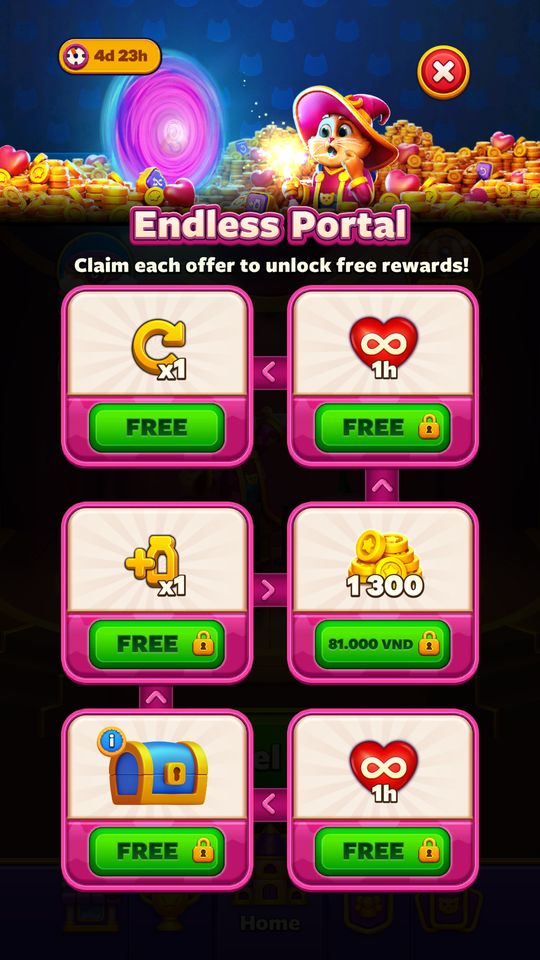
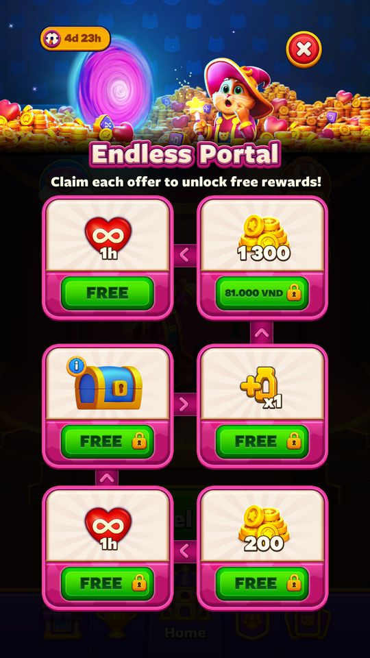
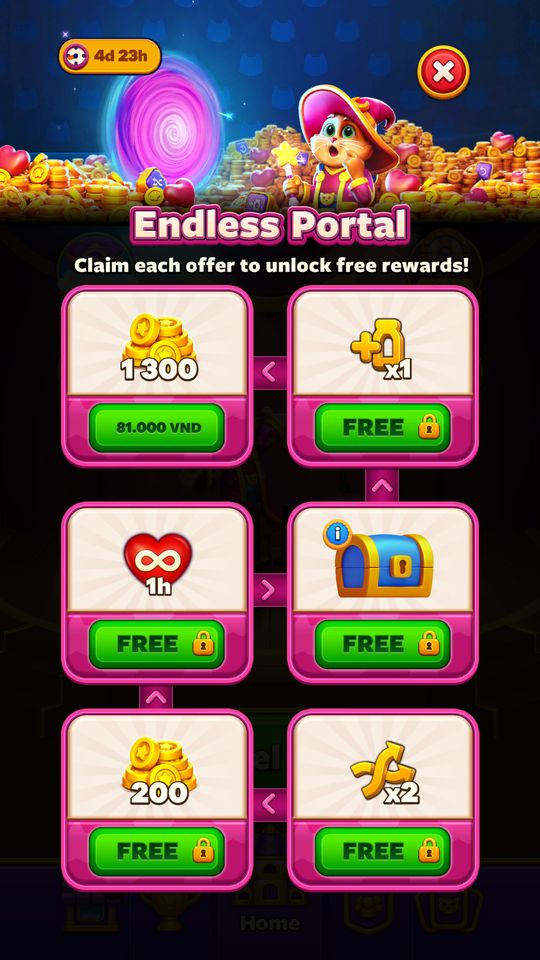

Nguồn mới và việc tiếp theo · Endless Portal
Tìm icon portal; nếu có mở cửa sổ sáu bậc, cuộn/tooltip, xác định bậc free trước khi cân nhắc claim có ledger.
UC ưu tiên: UC-03 Dựng cửa sổ 6 bậc hiển thị, UC-05 Bậc miễn phí trong chuỗi, UC-09 Mở popup từ icon lobby
Gate runtime: gate của snapshot ban đầu trước phục hồi; xem actual và giới hạn round2 phía trên, không suy ra full-feature pass.
Liên kết config: exact_model_source_association
Đủ entry, precondition và 908 UC · GDD hiện tại đầy đủ · Kết luận mã và phần chưa chứng minh
Segment/A/B: default và nhãn variant chỉ là bằng chứng cấu hình; chưa có assignment, phân bổ traffic hoặc uplift mới.
Hồ sơ EndlessPortal: 629 config, 7 gap, 3/12 UC có ảnh tham chiếu. Cache và instance ghi ngày tại nguồn; kết quả kiểm chứng mới nằm trong các case dưới đây; không áp dụng cho mọi UC.
Đủ 11 mục đánh giá cho hồ sơ này — data / flow / UC / ảnh / segment / AB / kiến trúc / phần thiếu
Theo dõi toàn bộ 58 danh mục · Full hồ sơ đối soát · Tải GDD JSON đầy đủ · Metadata UI và bảng thưởng đầy đủ
| Mục | Trạng thái theo bằng chứng |
|---|---|
| purpose | documented_static_scope |
| unlock | described_historical_conditions_runtime_boundary_unverified |
| entry_flow | documented_paths_not_all_executed |
| config | source_bound_catalog_present |
| reward | documented_static_rewards_runtime_grant_not_fully_verified |
| use_cases | specified_not_executed_in15nov_ledger |
| screenshots | historical_references_only |
| runtime_actual | not_observed_in15nov_ledger |
| segment_ab | not_identified_in_sources |
| storage_backend_analytics | See full JSON |
| remaining_next_step | See full JSON |
Đã rà hồ sơ không đồng nghĩa mọi nhánh runtime đã pass. Nguồn và bước còn lại nằm trong JSON đầy đủ.
Segment và A/B của feature — 0 dòng có liên hệ nguồn
No matchingrow does not prove no segmentation/AB. Rewardbucketfalsepositives remain explicitly classified.
Consumer, matching basis, selector và giới hạn: full dữ liệu riêng của feature · review chung.
Đối chiếu code / asset · 15/11 — 1 finding
Code/asset 0.0.3063, cache ghi ngày và asset bundle đã đọc từ thiết bị 0.0.3129; mỗi finding giữ đúng nguồn/build, không nâng kiểm tra file thành runtime pass.
MS-CODE-07 — Portal bị chặn bằng IsEndlessEventDisabled · resolved_static_code
EndlessPortalStateService.GetState sau IsEnable gọi AdService.IsEndlessPortalDisabled; method đó trả applied AdConfigModel.IsEndlessEventDisabled. Flag true chặn nhánh state trước level/event checks. Không có kiểm purchase NoAds trong predicate này; không nên ghi giả thuyết NoAds thành luật.
Còn lại: Cần đối chiếu method/consumer trên app0.0.3129 ARM64; chưa là runtime pass.
Cổng Vô Tận (Endless Portal)
Chuỗi ưu đãi bậc thang không điểm kết: mua bậc hiện tại để mở bậc kế, hết chuỗi thì quay vòng lại từ đầu.
Mô tả
- Endless Portal là chuỗi ưu đãi bậc thang: mỗi bậc là một phần thưởng, có bậc miễn phí và có bậc phải mua bằng gói IAP.
- Mua hoặc nhận bậc hiện tại sẽ mở bậc kế tiếp; các bậc phía sau bị khóa với thông báo 'Accept previous offer to open'.
- Giao diện luôn hiển thị đúng 6 bậc: bậc trước, bậc đang mở và các bậc khóa phía sau (StepCountInUI = 6).
- Bậc thứ 6 trong cửa sổ đóng vai trò mồi nhử: người chơi luôn nhìn thấy một phần thưởng lớn ở cuối tầm mắt.
- Sau bậc cuối, chỉ số quay vòng đưa chuỗi về đầu nên ưu đãi được gọi là 'endless'.
- Cấu hình bậc thật do server gửi trong EndlessPortalResponse; khi mất mạng hoặc dữ liệu hỏng thì client dùng FallbackSteps.
- Có bảng dự phòng thứ hai tra theo productId để trao bù nếu giao dịch tới trễ hoặc app bị kill giữa lúc mua.
- Chỉ CurrentStepIndex được đồng bộ giữa các thiết bị, phần cache response thì không.
- Popup tự bật khi sự kiện bắt đầu và khi người chơi quay lại Home, ngoài lối vào từ icon lobby.
Còn thiếu / chưa xác minh
Mở khóa & điểm vào
EndlessPortalStateService.GetState() trả EndlessPortalStateType.Disable khi EndlessPortalV2ConfigModel.IsEnable == false, ProgressNotEnough khi level < EndlessPortalV2ConfigModel.FirstLevelToShow, NoCache khi chưa có EndlessPortalResponse. StateService còn giữ tham chiếu AdService — trạng thái quảng cáo ảnh hưởng tới việc hiện offer (suy luận từ dependency).
Điểm vào:
- EndlessPortalLobbyButton — icon ở Home (EndlessPortalStateService.ShouldShowLobbyIcon)
- EndlessPortalPopup (+EndlessPortalPopupArguments) — bảng 6 bậc
- EndlessPortalHomeWelcomingCommand — tự bật khi sự kiện bắt đầu (ShouldForceOpenPopup)
- TryToShowEndlessPortalLobbyReturnCommand — tự bật khi quay lại Home
Cách hoạt động
- Sự kiện chỉ chạy khi IsEnable = true (json default false) và level đạt FirstLevelToShow = 100, nếu không trạng thái là Disable (0) hoặc ProgressNotEnough (1).
- Chưa có cache thì trạng thái là NoCache (2) và icon lobby bị ẩn (ShouldShowLobbyIcon).
- Client gửi EndlessPortalRequestModel{EventId, EventType} (json default EventType = 3) để lấy phiên sự kiện (TryFetchCurrentEvent).
- Server trả EndlessPortalResponse{EventId, StartTime, FinishTime, IsFinished, Segment, Steps}; client lưu vào cache (CacheBackendResponse).
- Analytics endless_portal_started ghi event_id, segment, current_step, start_time, remaining_duration.
- Nếu Steps rỗng, client rơi về FallbackSteps trong remote config; nếu bảng đó cũng null thì log '[EndlessPortalService]::GetFallbackStepsForUniqueInApps - null!'.
- Cửa sổ hiển thị cắt đúng 6 bậc quanh vị trí hiện tại dựa trên CurrentStepIndex và chỉ số quay vòng (GetSixSteps, GetLoopedIndex).
- Mỗi bậc là EndlessPortalRewardStepModel gồm RewardModels (thưởng) và IAPConfigModel (sản phẩm phải mua); bậc không có IAPConfigModel là bậc miễn phí.
- Bậc trả phí hiện nút giá; bấm mua sẽ gọi IAP với IAPOrigin.EndlessPortal (3) và IAPReason.Endless (5), rồi xác thực receipt.
- Mua hoặc nhận thành công thì thưởng được trao với CurrencyEarnReason.EndlessPortal (14) và CurrentStepIndex tăng 1 (ClaimStepRewards, SetCurrentStepIndex).
- Analytics endless_portal_claim ghi claimed_step cùng step_type Free hoặc Paid; bậc trả phí bắn thêm endless_portal_purchase với product_id, price, dollar_equivalent.
- Client gửi claim request lên server để báo đã nhận bậc (SendClaimRequest).
- Nếu giao dịch tới trễ và không khớp bậc nào, client tra FallbackStepsForUniqueInApps theo productId và trao thưởng tương ứng (ClaimWithFallbackStepsForUniqueInApps).
- Popup tự bật khi state = WaitingIntroduce (5) với impression source EventStart (1), hoặc từ icon lobby với LobbyIcon (0).
- Đồng hồ đếm ngược tới FinishTime; hết giờ trạng thái chuyển TimeIsUp (4) và client hẹn lấy phiên sự kiện mới.
- Chỉ CurrentStepIndex nằm trong khối đồng bộ 'EndlessPortalSyncDataModel'; cờ ForceShownAtEventStart và cache response chỉ ở máy.
Luồng chi tiết theo code
EndlessPortalStateService.GetState() cho ra EndlessPortalStateType: Disable(0) → ProgressNotEnough(1) → NoCache(2) → InProgress(3) → TimeIsUp(4) → WaitingIntroduce(5); mỗi lần đổi phát Signal. Khi ShouldSendGetRequest(), EndlessPortalService.TryFetchCurrentEvent() → EndlessPortalRemoteService.SendGetRequest(EndlessPortalRequestModel{EventId, EventType}) trả EndlessPortalResponse{EventId, StartTime, FinishTime, IsFinished, Segment, Steps}; EndlessPortalDataService.CacheBackendResponse(response) lưu lại. GetSteps() trả danh sách bậc từ cache; nếu rỗng thì GetFallbackSteps() dùng EndlessPortalV2ConfigModel.FallbackSteps, và GetFallbackStepsForUniqueInApps() dùng FallbackStepsForUniqueInApps (log '[EndlessPortalService]::GetFallbackStepsForUniqueInApps - null!' khi thiếu). GetSixSteps() cắt đúng 6 bậc quanh vị trí hiện tại dựa vào GetCurrentLoopedIndex() và GetLoopedIndex(index) (chỉ số quay vòng theo độ dài danh sách bậc); GetPreviousStep() / GetCurrentStep() / GetSixthStep() cấp dữ liệu cho UI. Mỗi EndlessPortalRewardStepModel gồm RewardModels (thưởng nhận được) và IAPConfigModel (sản phẩm phải mua). Người chơi bấm bậc đang mở → IAPService mua với IAPOrigin.EndlessPortal (3), IAPReason.Endless (5); thành công thì ClaimStepRewards() trao RewardModels với CurrencyEarnReason.EndlessPortal (14) và EndlessPortalDataService.SetCurrentStepIndex(index + 1), bắn analytics endless_portal_claim (step_type Free/Paid) và endless_portal_purchase. Nếu giao dịch tới trễ và không khớp bậc, ClaimWithFallbackStepsForUniqueInApps(productId) tra bảng fallback theo productId và bắn endless_portal_claim_with_fallback. Sự kiện có hạn: GetRemainingSeconds() / GetEndDate() dựa FinishTime; SecondTimer + ScheduleLeaderboardFetchOnTimerEnd() lấy dữ liệu mới khi hết giờ. EndlessPortalDataService là ISyncable ('EndlessPortalSyncDataModel') nhưng chỉ đồng bộ CurrentStepIndex.
Ảnh chụp màn hình (3)
3 ảnh chụp trong game (LDPlayer, bản 0.0.3129, tài khoản thử level 321 → 351 (07/10/2026)). Bấm ảnh để phóng to; ảnh chụp lịch sử mở PNG gốc. Nhãn UC dẫn tới use case tương ứng.




 1 giờ mạng vô hạn) mở khóa
1 giờ mạng vô hạn) mở khóa

 1.300 coin giá 81.000 VND; mọi ô sau bị khóa cho tới khi mua ô này
1.300 coin giá 81.000 VND; mọi ô sau bị khóa cho tới khi mua ô nàyPhần thưởng
CHUỖI BẬC DỰ PHÒNG (EndlessPortalV2ConfigModel.json: FallbackSteps, 40/44 bậc có trong GDD)
| Bậc | Giá | Phần thưởng |
|---|---|---|
| Bậc 1 | Miễn phí |  1 Undo 1 Undo |
| Bậc 2 | Miễn phí | 1 giờ Unlimited Lives |
| Bậc 3 | 2.99 USD (sort.endlessnv3) |  1300Coin 1300Coin |
| Bậc 4 | Miễn phí |  1 Extra Bottle 1 Extra Bottle |
| Bậc 5 | Miễn phí | rương ChestType 1 gồm 1 Undo  1 Shuffle 1 Shuffle |
| Bậc 6 | Miễn phí | 1 giờ Unlimited Lives |
| Bậc 7 | Miễn phí | 200Coin |
| Bậc 8 | Miễn phí | 2 Shuffle |
| Bậc 9 | 5.99 USD (sort.endlessnv6) | 2000Coin |
| Bậc 10 | Miễn phí | rương ChestType 2 gồm 2 Undo 2 Shuffle 1 giờ Unlimited Lives |
| Bậc 11 | Miễn phí | 2 Extra Bottle |
| Bậc 12 | Miễn phí | 300Coin |
| Bậc 13 | Miễn phí | 2 giờ Unlimited Lives |
| Bậc 14 | Miễn phí | 200Coin |
| Bậc 15 | 7.99 USD (sort.endlessnv8) | 3000Coin |
| Bậc 16 | Miễn phí | rương ChestType 3 gồm 2 Undo 2 Shuffle 1 giờ Unlimited Lives |
| Bậc 17 | Miễn phí | 3 Extra Bottle |
| Bậc 18 | Miễn phí | 200Coin |
| Bậc 19 | Miễn phí | 3 giờ Unlimited Lives |
| Bậc 20 | Miễn phí | 300Coin |
| Bậc 21 | 11.99 USD (sort.endlessnv12) | 4500Coin |
| Bậc 22 | Miễn phí | rương ChestType 4 gồm 4 Undo 4 Shuffle 2 giờ Unlimited Lives |
| Bậc 23 | Miễn phí | 4 Extra Bottle |
| Bậc 24 | Miễn phí | 300Coin |
| Bậc 25 | Miễn phí | 4 giờ Unlimited Lives |
| Bậc 26 | Miễn phí | 300Coin |
| Bậc 27 | 24.99 USD (sort.endlessnv25) | 10000Coin |
| Bậc 28 | Miễn phí | 8 giờ Unlimited Lives |
| Bậc 29 | Miễn phí | 500Coin |
| Bậc 30 | Miễn phí | rương ChestType 5 gồm 10 Undo 10 Shuffle 4 giờ Unlimited Lives |
| Bậc 31 | Miễn phí | 10 Extra Bottle |
| Bậc 32 | Miễn phí | 1000Coin |
| Bậc 33 | 44.99 USD (sort.endlessnv45) | 15000Coin |
| Bậc 34 | Miễn phí | rương ChestType 6 gồm 16 Undo 16 Shuffle 12 giờ Unlimited Lives |
| Bậc 35 | Miễn phí | 1500Coin |
| Bậc 36 | Miễn phí | 12 giờ Unlimited Lives |
| Bậc 37 | Miễn phí | 2500Coin |
| Bậc 38 | Miễn phí | 16 Extra Bottle |
| Bậc 39 | 89.99 USD (sort.endlessnv90) | 50000Coin |
| Bậc 40 | Miễn phí | rương ChestType 7 gồm 30 Undo 30 Shuffle 12 giờ Unlimited Lives |
BẢNG TRA THEO PRODUCT ID ĐỂ TRAO BÙ (FallbackStepsForUniqueInApps)
| Product Id | Giá | Phần thưởng |
|---|---|---|
| sort.endlessnv3 | 2.99 USD | 1300Coin |
| sort.endlessnv6 | 5.99 USD | 2000Coin |
| sort.endlessnv8 | 7.99 USD | 3000Coin |
| sort.endlessnv12 | 11.99 USD | 4500Coin |
| sort.endlessnv25 | 24.99 USD | 10000Coin |
| sort.endlessnv45 | 44.99 USD | 15000Coin |
| sort.endlessnv90 | 89.99 USD | 50000Coin |
| sort.endlessnv4 | 3.99 USD | 1500Coin |
| sort.endlessnv7 | 6.99 USD | 2400Coin |
| sort.endlessnv120 | 119.99 USD | 65000Coin |
| sort.endlessnv200 | 199.99 USD | 100000Coin |
Phần thưởng theo code
| Ngữ cảnh | Phần thưởng | Evidence |
|---|---|---|
| Mỗi bậc | EndlessPortalRewardStepModel.RewardModels — CurrencyEarnReason.EndlessPortal (14) | EndlessPortalService.ClaimStepRewards |
| Bậc thứ 6 (mồi nhử) | GetSixthStep() — bậc giá trị cao hiển thị cuối cửa sổ 6 bậc | EndlessPortalService.GetSixthStep |
| Trao bù | FallbackStepsForUniqueInApps tra theo productId | EndlessPortalService.ClaimWithFallbackStepsForUniqueInApps |
Số liệu chính
| Chỉ số | Giá trị | Nguồn |
|---|---|---|
| Level mở khóa | 100 | EndlessPortalV2ConfigModel.json: FirstLevelToShow |
| IsEnable mặc định | false (chờ remote config bật) | EndlessPortalV2ConfigModel.json: IsEnable |
| EventType mặc định | 3 | EndlessPortalV2ConfigModel.json: EventType |
| Số bậc hiển thị cùng lúc | 6 | EndlessPortalService.StepCountInUI |
| Số thẻ bậc dựng trong UI | 6 | EndlessPortalController.MaxStep |
| Số bậc trong bảng dự phòng (GDD liệt kê) | 40 trên tổng 44 | EndlessPortalV2ConfigModel.json: FallbackSteps |
| Số bậc trả phí trong 40 bậc dự phòng | 7 | EndlessPortalV2ConfigModel.json: FallbackSteps |
| Giá bậc trả phí thấp nhất | 2.99 USD (sort.endlessnv3) đổi 1300 coin | EndlessPortalV2ConfigModel.json: FallbackSteps[2] |
| Giá bậc trả phí cao nhất trong chuỗi dự phòng | 89.99 USD (sort.endlessnv90) đổi 50000 coin | EndlessPortalV2ConfigModel.json: FallbackSteps[38] |
| Gói đắt nhất trong bảng trao bù | 199.99 USD (sort.endlessnv200) đổi 100000 coin | EndlessPortalV2ConfigModel.json: FallbackStepsForUniqueInApps[10] |
| Số sản phẩm trong bảng trao bù | 11 | EndlessPortalV2ConfigModel.json: FallbackStepsForUniqueInApps |
| Số loại rương trong chuỗi dự phòng | 7 (ChestType 1–7) | EndlessPortalV2ConfigModel.json: FallbackSteps |
| Rương lớn nhất | ChestType 7: 30 Undo, 30 Shuffle, 12 giờ Unlimited Lives | EndlessPortalV2ConfigModel.json: FallbackSteps[39] |
| Coin thấp nhất trong chuỗi dự phòng | 200 coin | EndlessPortalV2ConfigModel.json: FallbackSteps[6] |
| Coin miễn phí cao nhất trong chuỗi dự phòng | 2500 coin | EndlessPortalV2ConfigModel.json: FallbackSteps[36] |
| Các mức Unlimited Lives miễn phí | 1, 2, 3, 4, 8, 12 giờ | EndlessPortalV2ConfigModel.json: FallbackSteps |
| CurrencyEarnReason khi trao thưởng | EndlessPortal = 14 | Modules.Contexts.Application.Inventory.Scripts.CurrencyEarnReason |
| Phân loại giao dịch IAP | IAPOrigin.EndlessPortal = 3, IAPReason.Endless = 5 | Modules.Contexts.Application.IAP.Scripts |
| Số trạng thái sự kiện | 6 (Disable=0 … WaitingIntroduce=5) | EndlessPortalStateService.GetState |
| Số nguồn mở popup | 2 (LobbyIcon=0, EventStart=1) | EndlessPortalPopupImpressionSource |
| Tên bản ghi đồng bộ | EndlessPortalSyncDataModel (chỉ chứa CurrentStepIndex) | EndlessPortalDataService.GetSyncName |
| Kích thước config hoạt ảnh | EndlessPortalAnimationConfig 44 field, EndlessPortalLobbyButtonAnimationConfig 37 field | Modules.Contexts.Home.Monetization.EndlessPortal.Scripts.UI |
Ghi chú thiết kế
- Xen kẽ bậc miễn phí giữa các bậc trả phí giữ người chơi tiếp tục leo chuỗi ngay cả khi không mua.
- Cửa sổ 6 bậc luôn để lộ một phần thưởng lớn phía sau, biến chuỗi thành một chuỗi mục tiêu ngắn nối tiếp nhau.
- Chỉ số quay vòng khiến chuỗi không bao giờ hết, nên người chi tiêu mạnh vẫn luôn có bậc kế tiếp để mua.
- Giá bậc trả phí trong chuỗi dự phòng leo từ 2.99 lên 89.99 USD, mỗi nấc cách nhau 6 bậc.
- Bảng tra theo productId là lưới an toàn: người chơi vẫn nhận đúng hàng dù app bị kill giữa giao dịch.
Use case (12)
Bấm vào từng use case để mở. Mở/đóng tất cả
UC-01 Xác định trạng thái và hiện icon
Các bước- EndlessPortalStateService.GetConfig() lấy EndlessPortalV2ConfigModel
- GetState() kiểm tra IsEnable → level vs FirstLevelToShow → có cache EndlessPortalResponse chưa → còn hạn không
- UpdateState() phát Signal khi _lastState đổi
- ShouldShowLobbyIcon() điều khiển EndlessPortalLobbyButton
| Actor | System |
|---|---|
| Trigger | Vào Home / IntervalUpdate |
| Điều kiện | Có remote config |
| Kết quả | Icon chỉ hiện khi state = InProgress hoặc WaitingIntroduce |
| Quy tắc / số liệu | EndlessPortalStateType: Disable=0, ProgressNotEnough=1, NoCache=2, InProgress=3, TimeIsUp=4, WaitingIntroduce=5 |
| Evidence | EndlessPortalStateService.GetState; EndlessPortalStateService.UpdateState; EndlessPortalStateService.ShouldShowLobbyIcon; EndlessPortalStateService.GetConfig |
UC-02 Lấy cấu hình bậc từ server
Các bước- EndlessPortalService.TryFetchCurrentEvent()
- EndlessPortalRemoteService.SendGetRequest(EndlessPortalRequestModel{EventId, EventType}) → SendRequest(url, requestModel)
- Nhận EndlessPortalResponse{EventId, StartTime, FinishTime, IsFinished, Segment, Steps}
- EndlessPortalDataService.CacheBackendResponse(response) lưu vào EndlessPortalDataModel
- EventSender.SendEndlessPortalStartedStat() → endless_portal_started với event_id, segment, current_step, start_time, remaining_duration
| Actor | System |
|---|---|
| Trigger | EndlessPortalStateService.ShouldSendGetRequest() == true |
| Điều kiện | Có mạng |
| Kết quả | Danh sách bậc và thời hạn sẵn sàng |
| Quy tắc / số liệu | EndlessPortalRemoteService.CancelRequests() huỷ request đang chạy khi Dispose |
| Evidence | EndlessPortalService.TryFetchCurrentEvent; EndlessPortalRemoteService.SendGetRequest; EndlessPortalDataService.CacheBackendResponse; EventSender.SendEndlessPortalStartedStat |
UC-03 Dựng cửa sổ 6 bậc hiển thị
Các bước- EndlessPortalService.GetSteps() lấy Steps từ cache
- GetCurrentLoopedIndex() tính chỉ số bậc hiện tại theo EndlessPortalSyncableDataModel.CurrentStepIndex
- GetLoopedIndex(index) quay vòng khi vượt quá độ dài danh sách — cơ chế 'endless'
- GetSixSteps() trả đúng StepCountInUI = 6 bậc; GetPreviousStep(), GetCurrentStep(), GetSixthStep() cho các vị trí đặc biệt
- EndlessPortalController (MaxStep = 6) + EndlessPortalStepFactory dựng EndlessPortalStepCard cho từng bậc
- EndlessPortalStepCardLockAnimationView khoá các bậc phía sau (text EndlessPortalWarning 'Accept previous offer to open')
| Actor | System |
|---|---|
| Trigger | Mở EndlessPortalPopup |
| Điều kiện | Có danh sách bậc |
| Kết quả | Người chơi thấy bậc đã mua, bậc đang mở và 4 bậc khoá phía sau |
| Quy tắc / số liệu | StepCountInUI = 6 (EndlessPortalService), MaxStep = 6 (EndlessPortalController) |
| Evidence | EndlessPortalService.GetSixSteps; EndlessPortalService.GetCurrentLoopedIndex; EndlessPortalService.GetLoopedIndex; EndlessPortalService.GetSixthStep; EndlessPortalController |
UC-04 Mua một bậc và nhận thưởng
Các bước- EndlessPortalIAPButtonController hiển thị giá từ EndlessPortalRewardStepModel.IAPConfigModel
- IAPService mua với IAPOrigin.EndlessPortal (3), IAPReason.Endless (5)
- IAPPurchaseVerificationService xác thực receipt
- EndlessPortalService.ClaimStepRewards() trao EndlessPortalRewardStepModel.RewardModels với CurrencyEarnReason.EndlessPortal (14)
- EndlessPortalDataService.SetCurrentStepIndex(index + 1) mở bậc kế
- EndlessPortalRemoteService.SendClaimRequest(requestModel) báo server
- EventSender.SendEndlessPortalClaimStat() (endless_portal_claim với claimed_step, step_type Free/Paid) và SendEndlessPortalPurchaseStat(iapModel) (endless_portal_purchase với purchased_step, product_id, price, dollar_equivalent, currency)
| Actor | Player |
|---|---|
| Trigger | Bấm nút mua trên bậc đang mở |
| Điều kiện | State = InProgress, bậc trước đã mua |
| Kết quả | Nhận thưởng, bậc kế mở khoá, giá bậc sau cao hơn |
| Quy tắc / số liệu | EndlessPortalStateService.ShouldSendClaimRequest() quyết định khi nào gửi claim lên server; HasStepRewardInEventCache() kiểm tra còn thưởng chưa nhận |
| Evidence | EndlessPortalService.ClaimStepRewards; EndlessPortalService.HasStepRewardInEventCache; EndlessPortalDataService.SetCurrentStepIndex; EndlessPortalRemoteService.SendClaimRequest; EventSender.SendEndlessPortalClaimStat; EventSender.SendEndlessPortalPurchaseStat |
UC-05 Bậc miễn phí trong chuỗi
Các bước- EndlessPortalStepCard hiển thị nút nhận thay vì nút mua
- ClaimStepRewards() trao thưởng ngay
- analytics endless_portal_claim với step_type = 'Free' (chuỗi 'Free' và 'Paid' có trong EventSender.SendEndlessPortalClaimStat)
| Actor | Player |
|---|---|
| Trigger | Bậc hiện tại có IAPConfigModel rỗng |
| Điều kiện | - |
| Kết quả | Người chơi nhận thưởng miễn phí để bước vào chuỗi (text EndlessPortalPopupInfo 'Claim each offer to unlock free rewards!') |
| Quy tắc / số liệu | Tham số step_type phân biệt Free/Paid trong analytics |
| Evidence | EndlessPortalService.ClaimStepRewards; EventSender.SendEndlessPortalClaimStat |
UC-06 Fallback khi không có dữ liệu server
Các bước- EndlessPortalService.GetSteps() không tìm thấy bậc trong cache
- GetFallbackSteps() trả EndlessPortalV2ConfigModel.FallbackSteps
- GetUniqueIAPs() dựng Dictionary<string, IAPConfigModel> cho toàn bộ sản phẩm; nếu null thì log '[EndlessPortalService]::GetFallbackStepsForUniqueInApps - null!'
- UI vẫn hiển thị 6 bậc từ bảng dự phòng
| Actor | System |
|---|---|
| Trigger | Mất mạng hoặc EndlessPortalResponse.Steps rỗng |
| Điều kiện | - |
| Kết quả | Offer không bị trống khi backend lỗi |
| Quy tắc / số liệu | Có hai bảng dự phòng riêng: FallbackSteps (chuỗi thường) và FallbackStepsForUniqueInApps (tra theo productId) |
| Evidence | EndlessPortalService.GetFallbackSteps; EndlessPortalService.GetFallbackStepsForUniqueInApps; EndlessPortalService.GetUniqueIAPs |
UC-07 Giao dịch tới trễ, không khớp bậc
Các bước- EndlessPortalService.ClaimWithFallbackStepsForUniqueInApps(productId)
- Tra FallbackStepsForUniqueInApps tìm bậc có IAPConfigModel.ProductId khớp
- Trao RewardModels tương ứng
- EventSender.SendEndlessPortalClaimedWithFallback(productId) → endless_portal_claim_with_fallback (giá trị 'empty' khi không tra được)
| Actor | System |
|---|---|
| Trigger | IAPManager phát lại giao dịch chưa xử lý (not_requested_iap) |
| Điều kiện | productId thuộc Endless Portal |
| Kết quả | Người chơi vẫn nhận đúng gói đã trả tiền dù chỉ số bậc đã thay đổi |
| Quy tắc / số liệu | Đây là cơ chế chống mất hàng khi app bị kill giữa lúc mua |
| Evidence | EndlessPortalService.ClaimWithFallbackStepsForUniqueInApps; EventSender.SendEndlessPortalClaimedWithFallback; EventSender.SendNotRequestedIAPStat |
UC-08 Tự bật popup khi sự kiện bắt đầu
Các bước- EndlessPortalHomeWelcomingCommand kiểm tra state = WaitingIntroduce
- Mở EndlessPortalPopup với EndlessPortalPopupImpressionSource.EventStart (1)
- EndlessPortalService.OnForceShownAtEventStart() → EndlessPortalDataService.SetForceShownAtEventStart(true)
- EventSender.SendEndlessPortalPopupImpressionStat(source) → endless_portal_screen_impression với impression_source
| Actor | System |
|---|---|
| Trigger | Sự kiện mới, chưa từng ép mở |
| Điều kiện | EndlessPortalStateService.ShouldForceOpenPopup() == true và GetForceShownAtEventStart() == false |
| Kết quả | Mỗi sự kiện chỉ ép mở đúng một lần |
| Quy tắc / số liệu | EndlessPortalPopupImpressionSource: LobbyIcon=0, EventStart=1 |
| Evidence | EndlessPortalStateService.ShouldForceOpenPopup; EndlessPortalService.OnForceShownAtEventStart; EndlessPortalDataService.SetForceShownAtEventStart; EventSender.SendEndlessPortalPopupImpressionStat |
UC-09 Mở popup từ icon lobby
Các bước- EndlessPortalPopup mở với impression source LobbyIcon (0)
- EndlessPortalService.OnPopupOpened() ghi nhận
- EndlessPortalTimer đếm ngược tới GetEndDate()
- EndlessPortalLobbyButtonAnimationView + EndlessPortalLobbyButtonAnimationConfig (37 field) chạy hiệu ứng
| Actor | Player |
|---|---|
| Trigger | Bấm EndlessPortalLobbyButton |
| Điều kiện | ShouldShowLobbyIcon() == true |
| Kết quả | Người chơi xem và mua bậc |
| Quy tắc / số liệu | LobbyEventsService điều phối thứ tự các icon sự kiện ở Home (IsLobbyShown / IsLobbyGoingToBeShown) |
| Evidence | EndlessPortalService.OnPopupOpened; EndlessPortalService.IsLobbyShown; EndlessPortalService.IsLobbyGoingToBeShown; EventSender.SendEndlessPortalPopupImpressionStat |
UC-10 Hết giờ sự kiện
Các bước- EndlessPortalService.GetRemainingSeconds() về 0 → state = TimeIsUp
- SecondTimer hết → ScheduleLeaderboardFetchOnTimerEnd() gọi lại SendGetRequest lấy sự kiện mới
- Icon và popup ẩn cho tới khi có EndlessPortalResponse mới
| Actor | System |
|---|---|
| Trigger | Quá FinishTime hoặc response.IsFinished |
| Điều kiện | - |
| Kết quả | Chuỗi ưu đãi đóng, chờ vòng mới |
| Quy tắc / số liệu | CurrentStepIndex vẫn được đồng bộ nên vòng mới có thể tiếp tục từ bậc cũ (suy luận) |
| Evidence | EndlessPortalService.GetRemainingSeconds; EndlessPortalService.ScheduleLeaderboardFetchOnTimerEnd; EndlessPortalStateService.GetState |
UC-11 Đồng bộ chỉ số bậc giữa thiết bị
Các bước- EndlessPortalDataService.GetSyncName() = 'EndlessPortalSyncDataModel'
- SerializeModelForSync() chỉ xuất EndlessPortalSyncableDataModel.CurrentStepIndex
- OverwriteModelFromSync(data) ghi đè; MarkDataForLateUpdate(shouldSyncWithBackend) quyết định có đẩy lên server không
- LateUpdate() lưu khi IsDataChangedSinceLastSave(); DeleteData() xoá khi reset
| Actor | System |
|---|---|
| Trigger | SyncService |
| Điều kiện | - |
| Kết quả | Bậc đang mở giống nhau trên mọi thiết bị; cache response và cờ ForceShownAtEventStart là dữ liệu cục bộ |
| Quy tắc / số liệu | Chỉ CurrentStepIndex nằm trong EndlessPortalSyncableDataModel |
| Evidence | EndlessPortalDataService.GetSyncName; EndlessPortalDataService.SerializeModelForSync; EndlessPortalDataService.MarkDataForLateUpdate; EndlessPortalDataService.DeleteData |
UC-12 Lỗi mua hàng
Các bước- IAPService trả StorePurchaseFailureReason (NotInitialized=1, NotRequestedInApp=2, ProductIdIsNull=3, ProductIdIsNotAvailableToPurchaseSomehow=4, CouldNotVerifyFromBackend=5)
- EventSender.SendPurchaseFailedEvent(productId, …, reason, IAPReason.Endless) → purchase_failed
- Bậc không mở khoá, CurrentStepIndex giữ nguyên
- Giao dịch treo sẽ được xử lý ở lần vào game sau qua UC-07
| Actor | System |
|---|---|
| Trigger | Store từ chối hoặc backend không verify được |
| Điều kiện | - |
| Kết quả | Không trao thưởng khi chưa xác thực; không mất tiền của người chơi |
| Quy tắc / số liệu | SendPurchaseNotVerifiedEvent / SendPurchaseUnableToVerifyEvent ghi lại các ca không verify được |
| Evidence | EventSender.SendPurchaseFailedEvent; EventSender.SendPurchaseNotVerifiedEvent; Modules.Contexts.Application.IAP.Scripts.StorePurchaseFailureReason |
Cấu hình (629)
Gộp mọi nguồn: const trong code, JSON mặc định trong Resources, bảng static, storage key, AB test, cờ server.
| Nguồn | Key | Kiểu | Giá trị | Ý nghĩa | Nơi định nghĩa |
|---|---|---|---|---|---|
| code const | EndlessPortalService.StepCountInUI | int | 6 | Số bậc hiển thị cùng lúc | EndlessPortalService |
| code const | EndlessPortalController.MaxStep | int | 6 | Số thẻ bậc dựng trong UI | EndlessPortalController |
| code const | EndlessPortalStateType | enum | Disable=0, ProgressNotEnough=1, NoCache=2, InProgress=3, TimeIsUp=4, WaitingIntroduce=5 | Máy trạng thái | EndlessPortalStateService.GetState |
| code const | EndlessPortalPopupImpressionSource | enum | LobbyIcon=0, EventStart=1 | Nguồn mở popup cho analytics | Modules.Contexts.Home.Monetization.EndlessPortal.Scripts.UI |
| code const | IAPOrigin.EndlessPortal / IAPReason.Endless | enum | 3 / 5 | Phân loại giao dịch | Modules.Contexts.Application.IAP.Scripts |
| code const | CurrencyEarnReason.EndlessPortal | enum | 14 | Lý do nhận thưởng | Modules.Contexts.Application.Inventory.Scripts.CurrencyEarnReason |
| Default/code0.0.3063 and historical caches20260910/20261010; per-snapshot source/hash in snapshot_values; not effective-runtime proof | EndlessPortalV2ConfigModel.IsEnable | bool | default_0.0.3063: false; cache_20260910: true; cache_20261010: true; firebase_20260910: true | Bật/tắt Endless Portal [15/11: giá trị theo snapshot cụ thể; thiếu field khác với false/0. Không xác nhận assignment hoặc effective runtime.] | RemoteConfigs → EndlessPortalV2ConfigModel (IRemoteConfigValidatable) |
| Default/code0.0.3063 and historical caches20260910/20261010; per-snapshot source/hash in snapshot_values; not effective-runtime proof | EndlessPortalV2ConfigModel.FirstLevelToShow | int | default_0.0.3063: 100; cache_20260910: 100; cache_20261010: 100; firebase_20260910: 100 | Level tối thiểu để thấy offer [15/11: giá trị theo snapshot cụ thể; thiếu field khác với false/0. Không xác nhận assignment hoặc effective runtime.] | EndlessPortalStateService.GetState |
| Default/code0.0.3063 and historical caches20260910/20261010; per-snapshot source/hash in snapshot_values; not effective-runtime proof | EndlessPortalV2ConfigModel.EventType | int | default_0.0.3063: 3; cache_20260910: 3; cache_20261010: 3; firebase_20260910: 3 | Loại sự kiện gửi lên SendGetRequest/SendClaimRequest [15/11: giá trị theo snapshot cụ thể; thiếu field khác với false/0. Không xác nhận assignment hoặc effective runtime.] | EndlessPortalRequestModel |
| server info | EndlessPortalV2ConfigModel.FallbackSteps | List<EndlessPortalRewardStepModel> | server (remote config) | Bảng bậc dự phòng khi backend không trả dữ liệu | EndlessPortalService.GetFallbackSteps |
| server info | EndlessPortalV2ConfigModel.FallbackStepsForUniqueInApps | List<EndlessPortalRewardStepModel> | server (remote config) | Bảng tra theo productId để trao bù khi giao dịch tới trễ | EndlessPortalService.ClaimWithFallbackStepsForUniqueInApps |
| server info | EndlessPortalRewardStepModel.RewardModels / IAPConfigModel | object | server | Thưởng và sản phẩm IAP của mỗi bậc | EndlessPortalRewardStepModel |
| server info | EndlessPortalResponse.EventId / StartTime / FinishTime / IsFinished / Segment / Steps | response | server | Phiên sự kiện và danh sách bậc thật | EndlessPortalRemoteService.SendGetRequest |
| storage key | EndlessPortalSyncDataModel | sync name | "EndlessPortalSyncDataModel" | Tên bản ghi đồng bộ | EndlessPortalDataService.GetSyncName |
| storage key | EndlessPortalSyncableDataModel.CurrentStepIndex | int | client + server | Bậc hiện tại trong chuỗi (dùng cho chỉ số quay vòng) | EndlessPortalDataService.GetCurrentStepIndex |
| storage key | EndlessPortalDataModel.ForceShownAtEventStart / EndlessPortalResponse | object | client (không đồng bộ) | Cờ đã ép mở popup và cache response | EndlessPortalDataModel |
| asset | EndlessPortalAnimationConfig (44 field) / EndlessPortalLobbyButtonAnimationConfig (37 field) | ScriptableObject | asset | Cấu hình hoạt ảnh popup và icon lobby | Modules.Contexts.Home.Monetization.EndlessPortal.Scripts.UI |
| code const | Localization | string | EndlessPortal 'Endless Portal'; EndlessPortalPopupInfo 'Claim each offer to unlock free rewards!'; EndlessPortalWarning 'Accept previous offer to open' | Text UI | appendix/localization.tsv |
| json default | EndlessPortalV2ConfigModel.json: IsEnable | false | Resources/defaultconfigs/EndlessPortalV2ConfigModel.json (client default, remote config ghi đè) | ||
| json default | EndlessPortalV2ConfigModel.json: FirstLevelToShow | 100 | Resources/defaultconfigs/EndlessPortalV2ConfigModel.json (client default, remote config ghi đè) | ||
| json default | EndlessPortalV2ConfigModel.json: EventType | 3 | Resources/defaultconfigs/EndlessPortalV2ConfigModel.json (client default, remote config ghi đè) | ||
| json default | EndlessPortalV2ConfigModel.json: FallbackStepsForUniqueInApps[0].RewardModels[0].CurrencyType | 1 | Resources/defaultconfigs/EndlessPortalV2ConfigModel.json (client default, remote config ghi đè) | ||
| json default | EndlessPortalV2ConfigModel.json: FallbackStepsForUniqueInApps[0].RewardModels[0].Amount | 1300 | Resources/defaultconfigs/EndlessPortalV2ConfigModel.json (client default, remote config ghi đè) | ||
| json default | EndlessPortalV2ConfigModel.json: FallbackStepsForUniqueInApps[0].IAPModel.ProductId | sort.endlessnv3 | Resources/defaultconfigs/EndlessPortalV2ConfigModel.json (client default, remote config ghi đè) | ||
| json default | EndlessPortalV2ConfigModel.json: FallbackStepsForUniqueInApps[0].IAPModel.ProductType | 0 | Resources/defaultconfigs/EndlessPortalV2ConfigModel.json (client default, remote config ghi đè) | ||
| json default | EndlessPortalV2ConfigModel.json: FallbackStepsForUniqueInApps[0].IAPModel.DollarEquivalent | 2.99 | Resources/defaultconfigs/EndlessPortalV2ConfigModel.json (client default, remote config ghi đè) | ||
| json default | EndlessPortalV2ConfigModel.json: FallbackStepsForUniqueInApps[1].RewardModels[0].CurrencyType | 1 | Resources/defaultconfigs/EndlessPortalV2ConfigModel.json (client default, remote config ghi đè) | ||
| json default | EndlessPortalV2ConfigModel.json: FallbackStepsForUniqueInApps[1].RewardModels[0].Amount | 2000 | Resources/defaultconfigs/EndlessPortalV2ConfigModel.json (client default, remote config ghi đè) | ||
| json default | EndlessPortalV2ConfigModel.json: FallbackStepsForUniqueInApps[1].IAPModel.ProductId | sort.endlessnv6 | Resources/defaultconfigs/EndlessPortalV2ConfigModel.json (client default, remote config ghi đè) | ||
| json default | EndlessPortalV2ConfigModel.json: FallbackStepsForUniqueInApps[1].IAPModel.ProductType | 0 | Resources/defaultconfigs/EndlessPortalV2ConfigModel.json (client default, remote config ghi đè) | ||
| json default | EndlessPortalV2ConfigModel.json: FallbackStepsForUniqueInApps[1].IAPModel.DollarEquivalent | 5.99 | Resources/defaultconfigs/EndlessPortalV2ConfigModel.json (client default, remote config ghi đè) | ||
| json default | EndlessPortalV2ConfigModel.json: FallbackStepsForUniqueInApps[2].RewardModels[0].CurrencyType | 1 | Resources/defaultconfigs/EndlessPortalV2ConfigModel.json (client default, remote config ghi đè) | ||
| json default | EndlessPortalV2ConfigModel.json: FallbackStepsForUniqueInApps[2].RewardModels[0].Amount | 3000 | Resources/defaultconfigs/EndlessPortalV2ConfigModel.json (client default, remote config ghi đè) | ||
| json default | EndlessPortalV2ConfigModel.json: FallbackStepsForUniqueInApps[2].IAPModel.ProductId | sort.endlessnv8 | Resources/defaultconfigs/EndlessPortalV2ConfigModel.json (client default, remote config ghi đè) | ||
| json default | EndlessPortalV2ConfigModel.json: FallbackStepsForUniqueInApps[2].IAPModel.ProductType | 0 | Resources/defaultconfigs/EndlessPortalV2ConfigModel.json (client default, remote config ghi đè) | ||
| json default | EndlessPortalV2ConfigModel.json: FallbackStepsForUniqueInApps[2].IAPModel.DollarEquivalent | 7.99 | Resources/defaultconfigs/EndlessPortalV2ConfigModel.json (client default, remote config ghi đè) | ||
| json default | EndlessPortalV2ConfigModel.json: FallbackStepsForUniqueInApps[3].RewardModels[0].CurrencyType | 1 | Resources/defaultconfigs/EndlessPortalV2ConfigModel.json (client default, remote config ghi đè) | ||
| json default | EndlessPortalV2ConfigModel.json: FallbackStepsForUniqueInApps[3].RewardModels[0].Amount | 4500 | Resources/defaultconfigs/EndlessPortalV2ConfigModel.json (client default, remote config ghi đè) | ||
| json default | EndlessPortalV2ConfigModel.json: FallbackStepsForUniqueInApps[3].IAPModel.ProductId | sort.endlessnv12 | Resources/defaultconfigs/EndlessPortalV2ConfigModel.json (client default, remote config ghi đè) | ||
| json default | EndlessPortalV2ConfigModel.json: FallbackStepsForUniqueInApps[3].IAPModel.ProductType | 0 | Resources/defaultconfigs/EndlessPortalV2ConfigModel.json (client default, remote config ghi đè) | ||
| json default | EndlessPortalV2ConfigModel.json: FallbackStepsForUniqueInApps[3].IAPModel.DollarEquivalent | 11.99 | Resources/defaultconfigs/EndlessPortalV2ConfigModel.json (client default, remote config ghi đè) | ||
| json default | EndlessPortalV2ConfigModel.json: FallbackStepsForUniqueInApps[4].RewardModels[0].CurrencyType | 1 | Resources/defaultconfigs/EndlessPortalV2ConfigModel.json (client default, remote config ghi đè) | ||
| json default | EndlessPortalV2ConfigModel.json: FallbackStepsForUniqueInApps[4].RewardModels[0].Amount | 10000 | Resources/defaultconfigs/EndlessPortalV2ConfigModel.json (client default, remote config ghi đè) | ||
| json default | EndlessPortalV2ConfigModel.json: FallbackStepsForUniqueInApps[4].IAPModel.ProductId | sort.endlessnv25 | Resources/defaultconfigs/EndlessPortalV2ConfigModel.json (client default, remote config ghi đè) | ||
| json default | EndlessPortalV2ConfigModel.json: FallbackStepsForUniqueInApps[4].IAPModel.ProductType | 0 | Resources/defaultconfigs/EndlessPortalV2ConfigModel.json (client default, remote config ghi đè) | ||
| json default | EndlessPortalV2ConfigModel.json: FallbackStepsForUniqueInApps[4].IAPModel.DollarEquivalent | 24.99 | Resources/defaultconfigs/EndlessPortalV2ConfigModel.json (client default, remote config ghi đè) | ||
| json default | EndlessPortalV2ConfigModel.json: FallbackStepsForUniqueInApps[5].RewardModels[0].CurrencyType | 1 | Resources/defaultconfigs/EndlessPortalV2ConfigModel.json (client default, remote config ghi đè) | ||
| json default | EndlessPortalV2ConfigModel.json: FallbackStepsForUniqueInApps[5].RewardModels[0].Amount | 15000 | Resources/defaultconfigs/EndlessPortalV2ConfigModel.json (client default, remote config ghi đè) | ||
| json default | EndlessPortalV2ConfigModel.json: FallbackStepsForUniqueInApps[5].IAPModel.ProductId | sort.endlessnv45 | Resources/defaultconfigs/EndlessPortalV2ConfigModel.json (client default, remote config ghi đè) | ||
| json default | EndlessPortalV2ConfigModel.json: FallbackStepsForUniqueInApps[5].IAPModel.ProductType | 0 | Resources/defaultconfigs/EndlessPortalV2ConfigModel.json (client default, remote config ghi đè) | ||
| json default | EndlessPortalV2ConfigModel.json: FallbackStepsForUniqueInApps[5].IAPModel.DollarEquivalent | 44.99 | Resources/defaultconfigs/EndlessPortalV2ConfigModel.json (client default, remote config ghi đè) | ||
| json default | EndlessPortalV2ConfigModel.json: FallbackStepsForUniqueInApps[6].RewardModels[0].CurrencyType | 1 | Resources/defaultconfigs/EndlessPortalV2ConfigModel.json (client default, remote config ghi đè) | ||
| json default | EndlessPortalV2ConfigModel.json: FallbackStepsForUniqueInApps[6].RewardModels[0].Amount | 50000 | Resources/defaultconfigs/EndlessPortalV2ConfigModel.json (client default, remote config ghi đè) | ||
| json default | EndlessPortalV2ConfigModel.json: FallbackStepsForUniqueInApps[6].IAPModel.ProductId | sort.endlessnv90 | Resources/defaultconfigs/EndlessPortalV2ConfigModel.json (client default, remote config ghi đè) | ||
| json default | EndlessPortalV2ConfigModel.json: FallbackStepsForUniqueInApps[6].IAPModel.ProductType | 0 | Resources/defaultconfigs/EndlessPortalV2ConfigModel.json (client default, remote config ghi đè) | ||
| json default | EndlessPortalV2ConfigModel.json: FallbackStepsForUniqueInApps[6].IAPModel.DollarEquivalent | 89.99 | Resources/defaultconfigs/EndlessPortalV2ConfigModel.json (client default, remote config ghi đè) | ||
| json default | EndlessPortalV2ConfigModel.json: FallbackStepsForUniqueInApps[7].RewardModels[0].CurrencyType | 1 | Resources/defaultconfigs/EndlessPortalV2ConfigModel.json (client default, remote config ghi đè) | ||
| json default | EndlessPortalV2ConfigModel.json: FallbackStepsForUniqueInApps[7].RewardModels[0].Amount | 1500 | Resources/defaultconfigs/EndlessPortalV2ConfigModel.json (client default, remote config ghi đè) | ||
| json default | EndlessPortalV2ConfigModel.json: FallbackStepsForUniqueInApps[7].IAPModel.ProductId | sort.endlessnv4 | Resources/defaultconfigs/EndlessPortalV2ConfigModel.json (client default, remote config ghi đè) | ||
| json default | EndlessPortalV2ConfigModel.json: FallbackStepsForUniqueInApps[7].IAPModel.ProductType | 0 | Resources/defaultconfigs/EndlessPortalV2ConfigModel.json (client default, remote config ghi đè) | ||
| json default | EndlessPortalV2ConfigModel.json: FallbackStepsForUniqueInApps[7].IAPModel.DollarEquivalent | 3.99 | Resources/defaultconfigs/EndlessPortalV2ConfigModel.json (client default, remote config ghi đè) | ||
| json default | EndlessPortalV2ConfigModel.json: FallbackStepsForUniqueInApps[8].RewardModels[0].CurrencyType | 1 | Resources/defaultconfigs/EndlessPortalV2ConfigModel.json (client default, remote config ghi đè) | ||
| json default | EndlessPortalV2ConfigModel.json: FallbackStepsForUniqueInApps[8].RewardModels[0].Amount | 2400 | Resources/defaultconfigs/EndlessPortalV2ConfigModel.json (client default, remote config ghi đè) | ||
| json default | EndlessPortalV2ConfigModel.json: FallbackStepsForUniqueInApps[8].IAPModel.ProductId | sort.endlessnv7 | Resources/defaultconfigs/EndlessPortalV2ConfigModel.json (client default, remote config ghi đè) | ||
| json default | EndlessPortalV2ConfigModel.json: FallbackStepsForUniqueInApps[8].IAPModel.ProductType | 0 | Resources/defaultconfigs/EndlessPortalV2ConfigModel.json (client default, remote config ghi đè) | ||
| json default | EndlessPortalV2ConfigModel.json: FallbackStepsForUniqueInApps[8].IAPModel.DollarEquivalent | 6.99 | Resources/defaultconfigs/EndlessPortalV2ConfigModel.json (client default, remote config ghi đè) | ||
| json default | EndlessPortalV2ConfigModel.json: FallbackStepsForUniqueInApps[9].RewardModels[0].CurrencyType | 1 | Resources/defaultconfigs/EndlessPortalV2ConfigModel.json (client default, remote config ghi đè) | ||
| json default | EndlessPortalV2ConfigModel.json: FallbackStepsForUniqueInApps[9].RewardModels[0].Amount | 65000 | Resources/defaultconfigs/EndlessPortalV2ConfigModel.json (client default, remote config ghi đè) | ||
| json default | EndlessPortalV2ConfigModel.json: FallbackStepsForUniqueInApps[9].IAPModel.ProductId | sort.endlessnv120 | Resources/defaultconfigs/EndlessPortalV2ConfigModel.json (client default, remote config ghi đè) | ||
| json default | EndlessPortalV2ConfigModel.json: FallbackStepsForUniqueInApps[9].IAPModel.ProductType | 0 | Resources/defaultconfigs/EndlessPortalV2ConfigModel.json (client default, remote config ghi đè) | ||
| json default | EndlessPortalV2ConfigModel.json: FallbackStepsForUniqueInApps[9].IAPModel.DollarEquivalent | 119.99 | Resources/defaultconfigs/EndlessPortalV2ConfigModel.json (client default, remote config ghi đè) | ||
| json default | EndlessPortalV2ConfigModel.json: FallbackStepsForUniqueInApps[10].RewardModels[0].CurrencyType | 1 | Resources/defaultconfigs/EndlessPortalV2ConfigModel.json (client default, remote config ghi đè) | ||
| json default | EndlessPortalV2ConfigModel.json: FallbackStepsForUniqueInApps[10].RewardModels[0].Amount | 100000 | Resources/defaultconfigs/EndlessPortalV2ConfigModel.json (client default, remote config ghi đè) | ||
| json default | EndlessPortalV2ConfigModel.json: FallbackStepsForUniqueInApps[10].IAPModel.ProductId | sort.endlessnv200 | Resources/defaultconfigs/EndlessPortalV2ConfigModel.json (client default, remote config ghi đè) | ||
| json default | EndlessPortalV2ConfigModel.json: FallbackStepsForUniqueInApps[10].IAPModel.ProductType | 0 | Resources/defaultconfigs/EndlessPortalV2ConfigModel.json (client default, remote config ghi đè) | ||
| json default | EndlessPortalV2ConfigModel.json: FallbackStepsForUniqueInApps[10].IAPModel.DollarEquivalent | 199.99 | Resources/defaultconfigs/EndlessPortalV2ConfigModel.json (client default, remote config ghi đè) | ||
| json default | EndlessPortalV2ConfigModel.json: FallbackSteps[0].RewardModels[0].CurrencyType | 4 | Resources/defaultconfigs/EndlessPortalV2ConfigModel.json (client default, remote config ghi đè) | ||
| json default | EndlessPortalV2ConfigModel.json: FallbackSteps[0].RewardModels[0].Amount | 1 | Resources/defaultconfigs/EndlessPortalV2ConfigModel.json (client default, remote config ghi đè) | ||
| json default | EndlessPortalV2ConfigModel.json: FallbackSteps[1].RewardModels[0].CurrencyType | 2 | Resources/defaultconfigs/EndlessPortalV2ConfigModel.json (client default, remote config ghi đè) | ||
| json default | EndlessPortalV2ConfigModel.json: FallbackSteps[1].RewardModels[0].TimeSpan | 01:00:00 | Resources/defaultconfigs/EndlessPortalV2ConfigModel.json (client default, remote config ghi đè) | ||
| json default | EndlessPortalV2ConfigModel.json: FallbackSteps[2].RewardModels[0].CurrencyType | 1 | Resources/defaultconfigs/EndlessPortalV2ConfigModel.json (client default, remote config ghi đè) | ||
| json default | EndlessPortalV2ConfigModel.json: FallbackSteps[2].RewardModels[0].Amount | 1300 | Resources/defaultconfigs/EndlessPortalV2ConfigModel.json (client default, remote config ghi đè) | ||
| json default | EndlessPortalV2ConfigModel.json: FallbackSteps[2].IAPModel.ProductId | sort.endlessnv3 | Resources/defaultconfigs/EndlessPortalV2ConfigModel.json (client default, remote config ghi đè) | ||
| json default | EndlessPortalV2ConfigModel.json: FallbackSteps[2].IAPModel.ProductType | 0 | Resources/defaultconfigs/EndlessPortalV2ConfigModel.json (client default, remote config ghi đè) | ||
| json default | EndlessPortalV2ConfigModel.json: FallbackSteps[2].IAPModel.DollarEquivalent | 2.99 | Resources/defaultconfigs/EndlessPortalV2ConfigModel.json (client default, remote config ghi đè) | ||
| json default | EndlessPortalV2ConfigModel.json: FallbackSteps[3].RewardModels[0].CurrencyType | 6 | Resources/defaultconfigs/EndlessPortalV2ConfigModel.json (client default, remote config ghi đè) | ||
| json default | EndlessPortalV2ConfigModel.json: FallbackSteps[3].RewardModels[0].Amount | 1 | Resources/defaultconfigs/EndlessPortalV2ConfigModel.json (client default, remote config ghi đè) | ||
| json default | EndlessPortalV2ConfigModel.json: FallbackSteps[4].RewardModels[0].CurrencyType | 13 | Resources/defaultconfigs/EndlessPortalV2ConfigModel.json (client default, remote config ghi đè) | ||
| json default | EndlessPortalV2ConfigModel.json: FallbackSteps[4].RewardModels[0].ChestType | 1 | Resources/defaultconfigs/EndlessPortalV2ConfigModel.json (client default, remote config ghi đè) | ||
| json default | EndlessPortalV2ConfigModel.json: FallbackSteps[4].RewardModels[0].Amount | 1 | Resources/defaultconfigs/EndlessPortalV2ConfigModel.json (client default, remote config ghi đè) | ||
| json default | EndlessPortalV2ConfigModel.json: FallbackSteps[4].RewardModels[0].Rewards[0].CurrencyType | 4 | Resources/defaultconfigs/EndlessPortalV2ConfigModel.json (client default, remote config ghi đè) | ||
| json default | EndlessPortalV2ConfigModel.json: FallbackSteps[4].RewardModels[0].Rewards[0].Amount | 1 | Resources/defaultconfigs/EndlessPortalV2ConfigModel.json (client default, remote config ghi đè) | ||
| json default | EndlessPortalV2ConfigModel.json: FallbackSteps[4].RewardModels[0].Rewards[1].CurrencyType | 5 | Resources/defaultconfigs/EndlessPortalV2ConfigModel.json (client default, remote config ghi đè) | ||
| json default | EndlessPortalV2ConfigModel.json: FallbackSteps[4].RewardModels[0].Rewards[1].Amount | 1 | Resources/defaultconfigs/EndlessPortalV2ConfigModel.json (client default, remote config ghi đè) | ||
| json default | EndlessPortalV2ConfigModel.json: FallbackSteps[5].RewardModels[0].CurrencyType | 2 | Resources/defaultconfigs/EndlessPortalV2ConfigModel.json (client default, remote config ghi đè) | ||
| json default | EndlessPortalV2ConfigModel.json: FallbackSteps[5].RewardModels[0].TimeSpan | 01:00:00 | Resources/defaultconfigs/EndlessPortalV2ConfigModel.json (client default, remote config ghi đè) | ||
| json default | EndlessPortalV2ConfigModel.json: FallbackSteps[6].RewardModels[0].CurrencyType | 1 | Resources/defaultconfigs/EndlessPortalV2ConfigModel.json (client default, remote config ghi đè) | ||
| json default | EndlessPortalV2ConfigModel.json: FallbackSteps[6].RewardModels[0].Amount | 200 | Resources/defaultconfigs/EndlessPortalV2ConfigModel.json (client default, remote config ghi đè) | ||
| json default | EndlessPortalV2ConfigModel.json: FallbackSteps[7].RewardModels[0].CurrencyType | 5 | Resources/defaultconfigs/EndlessPortalV2ConfigModel.json (client default, remote config ghi đè) | ||
| json default | EndlessPortalV2ConfigModel.json: FallbackSteps[7].RewardModels[0].Amount | 2 | Resources/defaultconfigs/EndlessPortalV2ConfigModel.json (client default, remote config ghi đè) | ||
| json default | EndlessPortalV2ConfigModel.json: FallbackSteps[8].RewardModels[0].CurrencyType | 1 | Resources/defaultconfigs/EndlessPortalV2ConfigModel.json (client default, remote config ghi đè) | ||
| json default | EndlessPortalV2ConfigModel.json: FallbackSteps[8].RewardModels[0].Amount | 2000 | Resources/defaultconfigs/EndlessPortalV2ConfigModel.json (client default, remote config ghi đè) | ||
| json default | EndlessPortalV2ConfigModel.json: FallbackSteps[8].IAPModel.ProductId | sort.endlessnv6 | Resources/defaultconfigs/EndlessPortalV2ConfigModel.json (client default, remote config ghi đè) | ||
| json default | EndlessPortalV2ConfigModel.json: FallbackSteps[8].IAPModel.ProductType | 0 | Resources/defaultconfigs/EndlessPortalV2ConfigModel.json (client default, remote config ghi đè) | ||
| json default | EndlessPortalV2ConfigModel.json: FallbackSteps[8].IAPModel.DollarEquivalent | 5.99 | Resources/defaultconfigs/EndlessPortalV2ConfigModel.json (client default, remote config ghi đè) | ||
| json default | EndlessPortalV2ConfigModel.json: FallbackSteps[9].RewardModels[0].CurrencyType | 13 | Resources/defaultconfigs/EndlessPortalV2ConfigModel.json (client default, remote config ghi đè) | ||
| json default | EndlessPortalV2ConfigModel.json: FallbackSteps[9].RewardModels[0].ChestType | 2 | Resources/defaultconfigs/EndlessPortalV2ConfigModel.json (client default, remote config ghi đè) | ||
| json default | EndlessPortalV2ConfigModel.json: FallbackSteps[9].RewardModels[0].Amount | 1 | Resources/defaultconfigs/EndlessPortalV2ConfigModel.json (client default, remote config ghi đè) | ||
| json default | EndlessPortalV2ConfigModel.json: FallbackSteps[9].RewardModels[0].Rewards[0].CurrencyType | 4 | Resources/defaultconfigs/EndlessPortalV2ConfigModel.json (client default, remote config ghi đè) | ||
| json default | EndlessPortalV2ConfigModel.json: FallbackSteps[9].RewardModels[0].Rewards[0].Amount | 2 | Resources/defaultconfigs/EndlessPortalV2ConfigModel.json (client default, remote config ghi đè) | ||
| json default | EndlessPortalV2ConfigModel.json: FallbackSteps[9].RewardModels[0].Rewards[1].CurrencyType | 5 | Resources/defaultconfigs/EndlessPortalV2ConfigModel.json (client default, remote config ghi đè) | ||
| json default | EndlessPortalV2ConfigModel.json: FallbackSteps[9].RewardModels[0].Rewards[1].Amount | 2 | Resources/defaultconfigs/EndlessPortalV2ConfigModel.json (client default, remote config ghi đè) | ||
| json default | EndlessPortalV2ConfigModel.json: FallbackSteps[9].RewardModels[0].Rewards[2].CurrencyType | 2 | Resources/defaultconfigs/EndlessPortalV2ConfigModel.json (client default, remote config ghi đè) | ||
| json default | EndlessPortalV2ConfigModel.json: FallbackSteps[9].RewardModels[0].Rewards[2].TimeSpan | 01:00:00 | Resources/defaultconfigs/EndlessPortalV2ConfigModel.json (client default, remote config ghi đè) | ||
| json default | EndlessPortalV2ConfigModel.json: FallbackSteps[10].RewardModels[0].CurrencyType | 6 | Resources/defaultconfigs/EndlessPortalV2ConfigModel.json (client default, remote config ghi đè) | ||
| json default | EndlessPortalV2ConfigModel.json: FallbackSteps[10].RewardModels[0].Amount | 2 | Resources/defaultconfigs/EndlessPortalV2ConfigModel.json (client default, remote config ghi đè) | ||
| json default | EndlessPortalV2ConfigModel.json: FallbackSteps[11].RewardModels[0].CurrencyType | 1 | Resources/defaultconfigs/EndlessPortalV2ConfigModel.json (client default, remote config ghi đè) | ||
| json default | EndlessPortalV2ConfigModel.json: FallbackSteps[11].RewardModels[0].Amount | 300 | Resources/defaultconfigs/EndlessPortalV2ConfigModel.json (client default, remote config ghi đè) | ||
| json default | EndlessPortalV2ConfigModel.json: FallbackSteps[12].RewardModels[0].CurrencyType | 2 | Resources/defaultconfigs/EndlessPortalV2ConfigModel.json (client default, remote config ghi đè) | ||
| json default | EndlessPortalV2ConfigModel.json: FallbackSteps[12].RewardModels[0].TimeSpan | 02:00:00 | Resources/defaultconfigs/EndlessPortalV2ConfigModel.json (client default, remote config ghi đè) | ||
| json default | EndlessPortalV2ConfigModel.json: FallbackSteps[13].RewardModels[0].CurrencyType | 1 | Resources/defaultconfigs/EndlessPortalV2ConfigModel.json (client default, remote config ghi đè) | ||
| json default | EndlessPortalV2ConfigModel.json: FallbackSteps[13].RewardModels[0].Amount | 200 | Resources/defaultconfigs/EndlessPortalV2ConfigModel.json (client default, remote config ghi đè) | ||
| json default | EndlessPortalV2ConfigModel.json: FallbackSteps[14].RewardModels[0].CurrencyType | 1 | Resources/defaultconfigs/EndlessPortalV2ConfigModel.json (client default, remote config ghi đè) | ||
| json default | EndlessPortalV2ConfigModel.json: FallbackSteps[14].RewardModels[0].Amount | 3000 | Resources/defaultconfigs/EndlessPortalV2ConfigModel.json (client default, remote config ghi đè) | ||
| json default | EndlessPortalV2ConfigModel.json: FallbackSteps[14].IAPModel.ProductId | sort.endlessnv8 | Resources/defaultconfigs/EndlessPortalV2ConfigModel.json (client default, remote config ghi đè) | ||
| json default | EndlessPortalV2ConfigModel.json: FallbackSteps[14].IAPModel.ProductType | 0 | Resources/defaultconfigs/EndlessPortalV2ConfigModel.json (client default, remote config ghi đè) | ||
| json default | EndlessPortalV2ConfigModel.json: FallbackSteps[14].IAPModel.DollarEquivalent | 7.99 | Resources/defaultconfigs/EndlessPortalV2ConfigModel.json (client default, remote config ghi đè) | ||
| json default | EndlessPortalV2ConfigModel.json: FallbackSteps[15].RewardModels[0].CurrencyType | 13 | Resources/defaultconfigs/EndlessPortalV2ConfigModel.json (client default, remote config ghi đè) | ||
| json default | EndlessPortalV2ConfigModel.json: FallbackSteps[15].RewardModels[0].ChestType | 3 | Resources/defaultconfigs/EndlessPortalV2ConfigModel.json (client default, remote config ghi đè) | ||
| json default | EndlessPortalV2ConfigModel.json: FallbackSteps[15].RewardModels[0].Amount | 1 | Resources/defaultconfigs/EndlessPortalV2ConfigModel.json (client default, remote config ghi đè) | ||
| json default | EndlessPortalV2ConfigModel.json: FallbackSteps[15].RewardModels[0].Rewards[0].CurrencyType | 4 | Resources/defaultconfigs/EndlessPortalV2ConfigModel.json (client default, remote config ghi đè) | ||
| json default | EndlessPortalV2ConfigModel.json: FallbackSteps[15].RewardModels[0].Rewards[0].Amount | 2 | Resources/defaultconfigs/EndlessPortalV2ConfigModel.json (client default, remote config ghi đè) | ||
| json default | EndlessPortalV2ConfigModel.json: FallbackSteps[15].RewardModels[0].Rewards[1].CurrencyType | 5 | Resources/defaultconfigs/EndlessPortalV2ConfigModel.json (client default, remote config ghi đè) | ||
| json default | EndlessPortalV2ConfigModel.json: FallbackSteps[15].RewardModels[0].Rewards[1].Amount | 2 | Resources/defaultconfigs/EndlessPortalV2ConfigModel.json (client default, remote config ghi đè) | ||
| json default | EndlessPortalV2ConfigModel.json: FallbackSteps[15].RewardModels[0].Rewards[2].CurrencyType | 2 | Resources/defaultconfigs/EndlessPortalV2ConfigModel.json (client default, remote config ghi đè) | ||
| json default | EndlessPortalV2ConfigModel.json: FallbackSteps[15].RewardModels[0].Rewards[2].TimeSpan | 01:00:00 | Resources/defaultconfigs/EndlessPortalV2ConfigModel.json (client default, remote config ghi đè) | ||
| json default | EndlessPortalV2ConfigModel.json: FallbackSteps[16].RewardModels[0].CurrencyType | 6 | Resources/defaultconfigs/EndlessPortalV2ConfigModel.json (client default, remote config ghi đè) | ||
| json default | EndlessPortalV2ConfigModel.json: FallbackSteps[16].RewardModels[0].Amount | 3 | Resources/defaultconfigs/EndlessPortalV2ConfigModel.json (client default, remote config ghi đè) | ||
| json default | EndlessPortalV2ConfigModel.json: FallbackSteps[17].RewardModels[0].CurrencyType | 1 | Resources/defaultconfigs/EndlessPortalV2ConfigModel.json (client default, remote config ghi đè) | ||
| json default | EndlessPortalV2ConfigModel.json: FallbackSteps[17].RewardModels[0].Amount | 200 | Resources/defaultconfigs/EndlessPortalV2ConfigModel.json (client default, remote config ghi đè) | ||
| json default | EndlessPortalV2ConfigModel.json: FallbackSteps[18].RewardModels[0].CurrencyType | 2 | Resources/defaultconfigs/EndlessPortalV2ConfigModel.json (client default, remote config ghi đè) | ||
| json default | EndlessPortalV2ConfigModel.json: FallbackSteps[18].RewardModels[0].TimeSpan | 03:00:00 | Resources/defaultconfigs/EndlessPortalV2ConfigModel.json (client default, remote config ghi đè) | ||
| json default | EndlessPortalV2ConfigModel.json: FallbackSteps[19].RewardModels[0].CurrencyType | 1 | Resources/defaultconfigs/EndlessPortalV2ConfigModel.json (client default, remote config ghi đè) | ||
| json default | EndlessPortalV2ConfigModel.json: FallbackSteps[19].RewardModels[0].Amount | 300 | Resources/defaultconfigs/EndlessPortalV2ConfigModel.json (client default, remote config ghi đè) | ||
| json default | EndlessPortalV2ConfigModel.json: FallbackSteps[20].RewardModels[0].CurrencyType | 1 | Resources/defaultconfigs/EndlessPortalV2ConfigModel.json (client default, remote config ghi đè) | ||
| json default | EndlessPortalV2ConfigModel.json: FallbackSteps[20].RewardModels[0].Amount | 4500 | Resources/defaultconfigs/EndlessPortalV2ConfigModel.json (client default, remote config ghi đè) | ||
| json default | EndlessPortalV2ConfigModel.json: FallbackSteps[20].IAPModel.ProductId | sort.endlessnv12 | Resources/defaultconfigs/EndlessPortalV2ConfigModel.json (client default, remote config ghi đè) | ||
| json default | EndlessPortalV2ConfigModel.json: FallbackSteps[20].IAPModel.ProductType | 0 | Resources/defaultconfigs/EndlessPortalV2ConfigModel.json (client default, remote config ghi đè) | ||
| json default | EndlessPortalV2ConfigModel.json: FallbackSteps[20].IAPModel.DollarEquivalent | 11.99 | Resources/defaultconfigs/EndlessPortalV2ConfigModel.json (client default, remote config ghi đè) | ||
| json default | EndlessPortalV2ConfigModel.json: FallbackSteps[21].RewardModels[0].CurrencyType | 13 | Resources/defaultconfigs/EndlessPortalV2ConfigModel.json (client default, remote config ghi đè) | ||
| json default | EndlessPortalV2ConfigModel.json: FallbackSteps[21].RewardModels[0].ChestType | 4 | Resources/defaultconfigs/EndlessPortalV2ConfigModel.json (client default, remote config ghi đè) | ||
| json default | EndlessPortalV2ConfigModel.json: FallbackSteps[21].RewardModels[0].Amount | 1 | Resources/defaultconfigs/EndlessPortalV2ConfigModel.json (client default, remote config ghi đè) | ||
| json default | EndlessPortalV2ConfigModel.json: FallbackSteps[21].RewardModels[0].Rewards[0].CurrencyType | 4 | Resources/defaultconfigs/EndlessPortalV2ConfigModel.json (client default, remote config ghi đè) | ||
| json default | EndlessPortalV2ConfigModel.json: FallbackSteps[21].RewardModels[0].Rewards[0].Amount | 4 | Resources/defaultconfigs/EndlessPortalV2ConfigModel.json (client default, remote config ghi đè) | ||
| json default | EndlessPortalV2ConfigModel.json: FallbackSteps[21].RewardModels[0].Rewards[1].CurrencyType | 5 | Resources/defaultconfigs/EndlessPortalV2ConfigModel.json (client default, remote config ghi đè) | ||
| json default | EndlessPortalV2ConfigModel.json: FallbackSteps[21].RewardModels[0].Rewards[1].Amount | 4 | Resources/defaultconfigs/EndlessPortalV2ConfigModel.json (client default, remote config ghi đè) | ||
| json default | EndlessPortalV2ConfigModel.json: FallbackSteps[21].RewardModels[0].Rewards[2].CurrencyType | 2 | Resources/defaultconfigs/EndlessPortalV2ConfigModel.json (client default, remote config ghi đè) | ||
| json default | EndlessPortalV2ConfigModel.json: FallbackSteps[21].RewardModels[0].Rewards[2].TimeSpan | 02:00:00 | Resources/defaultconfigs/EndlessPortalV2ConfigModel.json (client default, remote config ghi đè) | ||
| json default | EndlessPortalV2ConfigModel.json: FallbackSteps[22].RewardModels[0].CurrencyType | 6 | Resources/defaultconfigs/EndlessPortalV2ConfigModel.json (client default, remote config ghi đè) | ||
| json default | EndlessPortalV2ConfigModel.json: FallbackSteps[22].RewardModels[0].Amount | 4 | Resources/defaultconfigs/EndlessPortalV2ConfigModel.json (client default, remote config ghi đè) | ||
| json default | EndlessPortalV2ConfigModel.json: FallbackSteps[23].RewardModels[0].CurrencyType | 1 | Resources/defaultconfigs/EndlessPortalV2ConfigModel.json (client default, remote config ghi đè) | ||
| json default | EndlessPortalV2ConfigModel.json: FallbackSteps[23].RewardModels[0].Amount | 300 | Resources/defaultconfigs/EndlessPortalV2ConfigModel.json (client default, remote config ghi đè) | ||
| json default | EndlessPortalV2ConfigModel.json: FallbackSteps[24].RewardModels[0].CurrencyType | 2 | Resources/defaultconfigs/EndlessPortalV2ConfigModel.json (client default, remote config ghi đè) | ||
| json default | EndlessPortalV2ConfigModel.json: FallbackSteps[24].RewardModels[0].TimeSpan | 04:00:00 | Resources/defaultconfigs/EndlessPortalV2ConfigModel.json (client default, remote config ghi đè) | ||
| json default | EndlessPortalV2ConfigModel.json: FallbackSteps[25].RewardModels[0].CurrencyType | 1 | Resources/defaultconfigs/EndlessPortalV2ConfigModel.json (client default, remote config ghi đè) | ||
| json default | EndlessPortalV2ConfigModel.json: FallbackSteps[25].RewardModels[0].Amount | 300 | Resources/defaultconfigs/EndlessPortalV2ConfigModel.json (client default, remote config ghi đè) | ||
| json default | EndlessPortalV2ConfigModel.json: FallbackSteps[26].RewardModels[0].CurrencyType | 1 | Resources/defaultconfigs/EndlessPortalV2ConfigModel.json (client default, remote config ghi đè) | ||
| json default | EndlessPortalV2ConfigModel.json: FallbackSteps[26].RewardModels[0].Amount | 10000 | Resources/defaultconfigs/EndlessPortalV2ConfigModel.json (client default, remote config ghi đè) | ||
| json default | EndlessPortalV2ConfigModel.json: FallbackSteps[26].IAPModel.ProductId | sort.endlessnv25 | Resources/defaultconfigs/EndlessPortalV2ConfigModel.json (client default, remote config ghi đè) | ||
| json default | EndlessPortalV2ConfigModel.json: FallbackSteps[26].IAPModel.ProductType | 0 | Resources/defaultconfigs/EndlessPortalV2ConfigModel.json (client default, remote config ghi đè) | ||
| json default | EndlessPortalV2ConfigModel.json: FallbackSteps[26].IAPModel.DollarEquivalent | 24.99 | Resources/defaultconfigs/EndlessPortalV2ConfigModel.json (client default, remote config ghi đè) | ||
| json default | EndlessPortalV2ConfigModel.json: FallbackSteps[27].RewardModels[0].CurrencyType | 2 | Resources/defaultconfigs/EndlessPortalV2ConfigModel.json (client default, remote config ghi đè) | ||
| json default | EndlessPortalV2ConfigModel.json: FallbackSteps[27].RewardModels[0].TimeSpan | 08:00:00 | Resources/defaultconfigs/EndlessPortalV2ConfigModel.json (client default, remote config ghi đè) | ||
| json default | EndlessPortalV2ConfigModel.json: FallbackSteps[28].RewardModels[0].CurrencyType | 1 | Resources/defaultconfigs/EndlessPortalV2ConfigModel.json (client default, remote config ghi đè) | ||
| json default | EndlessPortalV2ConfigModel.json: FallbackSteps[28].RewardModels[0].Amount | 500 | Resources/defaultconfigs/EndlessPortalV2ConfigModel.json (client default, remote config ghi đè) | ||
| json default | EndlessPortalV2ConfigModel.json: FallbackSteps[29].RewardModels[0].CurrencyType | 13 | Resources/defaultconfigs/EndlessPortalV2ConfigModel.json (client default, remote config ghi đè) | ||
| json default | EndlessPortalV2ConfigModel.json: FallbackSteps[29].RewardModels[0].ChestType | 5 | Resources/defaultconfigs/EndlessPortalV2ConfigModel.json (client default, remote config ghi đè) | ||
| json default | EndlessPortalV2ConfigModel.json: FallbackSteps[29].RewardModels[0].Amount | 1 | Resources/defaultconfigs/EndlessPortalV2ConfigModel.json (client default, remote config ghi đè) | ||
| json default | EndlessPortalV2ConfigModel.json: FallbackSteps[29].RewardModels[0].Rewards[0].CurrencyType | 4 | Resources/defaultconfigs/EndlessPortalV2ConfigModel.json (client default, remote config ghi đè) | ||
| json default | EndlessPortalV2ConfigModel.json: FallbackSteps[29].RewardModels[0].Rewards[0].Amount | 10 | Resources/defaultconfigs/EndlessPortalV2ConfigModel.json (client default, remote config ghi đè) | ||
| json default | EndlessPortalV2ConfigModel.json: FallbackSteps[29].RewardModels[0].Rewards[1].CurrencyType | 5 | Resources/defaultconfigs/EndlessPortalV2ConfigModel.json (client default, remote config ghi đè) | ||
| json default | EndlessPortalV2ConfigModel.json: FallbackSteps[29].RewardModels[0].Rewards[1].Amount | 10 | Resources/defaultconfigs/EndlessPortalV2ConfigModel.json (client default, remote config ghi đè) | ||
| json default | EndlessPortalV2ConfigModel.json: FallbackSteps[29].RewardModels[0].Rewards[2].CurrencyType | 2 | Resources/defaultconfigs/EndlessPortalV2ConfigModel.json (client default, remote config ghi đè) | ||
| json default | EndlessPortalV2ConfigModel.json: FallbackSteps[29].RewardModels[0].Rewards[2].TimeSpan | 04:00:00 | Resources/defaultconfigs/EndlessPortalV2ConfigModel.json (client default, remote config ghi đè) | ||
| json default | EndlessPortalV2ConfigModel.json: FallbackSteps[30].RewardModels[0].CurrencyType | 6 | Resources/defaultconfigs/EndlessPortalV2ConfigModel.json (client default, remote config ghi đè) | ||
| json default | EndlessPortalV2ConfigModel.json: FallbackSteps[30].RewardModels[0].Amount | 10 | Resources/defaultconfigs/EndlessPortalV2ConfigModel.json (client default, remote config ghi đè) | ||
| json default | EndlessPortalV2ConfigModel.json: FallbackSteps[31].RewardModels[0].CurrencyType | 1 | Resources/defaultconfigs/EndlessPortalV2ConfigModel.json (client default, remote config ghi đè) | ||
| json default | EndlessPortalV2ConfigModel.json: FallbackSteps[31].RewardModels[0].Amount | 1000 | Resources/defaultconfigs/EndlessPortalV2ConfigModel.json (client default, remote config ghi đè) | ||
| json default | EndlessPortalV2ConfigModel.json: FallbackSteps[32].RewardModels[0].CurrencyType | 1 | Resources/defaultconfigs/EndlessPortalV2ConfigModel.json (client default, remote config ghi đè) | ||
| json default | EndlessPortalV2ConfigModel.json: FallbackSteps[32].RewardModels[0].Amount | 15000 | Resources/defaultconfigs/EndlessPortalV2ConfigModel.json (client default, remote config ghi đè) | ||
| json default | EndlessPortalV2ConfigModel.json: FallbackSteps[32].IAPModel.ProductId | sort.endlessnv45 | Resources/defaultconfigs/EndlessPortalV2ConfigModel.json (client default, remote config ghi đè) | ||
| json default | EndlessPortalV2ConfigModel.json: FallbackSteps[32].IAPModel.ProductType | 0 | Resources/defaultconfigs/EndlessPortalV2ConfigModel.json (client default, remote config ghi đè) | ||
| json default | EndlessPortalV2ConfigModel.json: FallbackSteps[32].IAPModel.DollarEquivalent | 44.99 | Resources/defaultconfigs/EndlessPortalV2ConfigModel.json (client default, remote config ghi đè) | ||
| json default | EndlessPortalV2ConfigModel.json: FallbackSteps[33].RewardModels[0].CurrencyType | 13 | Resources/defaultconfigs/EndlessPortalV2ConfigModel.json (client default, remote config ghi đè) | ||
| json default | EndlessPortalV2ConfigModel.json: FallbackSteps[33].RewardModels[0].ChestType | 6 | Resources/defaultconfigs/EndlessPortalV2ConfigModel.json (client default, remote config ghi đè) | ||
| json default | EndlessPortalV2ConfigModel.json: FallbackSteps[33].RewardModels[0].Amount | 1 | Resources/defaultconfigs/EndlessPortalV2ConfigModel.json (client default, remote config ghi đè) | ||
| json default | EndlessPortalV2ConfigModel.json: FallbackSteps[33].RewardModels[0].Rewards[0].CurrencyType | 4 | Resources/defaultconfigs/EndlessPortalV2ConfigModel.json (client default, remote config ghi đè) | ||
| json default | EndlessPortalV2ConfigModel.json: FallbackSteps[33].RewardModels[0].Rewards[0].Amount | 16 | Resources/defaultconfigs/EndlessPortalV2ConfigModel.json (client default, remote config ghi đè) | ||
| json default | EndlessPortalV2ConfigModel.json: FallbackSteps[33].RewardModels[0].Rewards[1].CurrencyType | 5 | Resources/defaultconfigs/EndlessPortalV2ConfigModel.json (client default, remote config ghi đè) | ||
| json default | EndlessPortalV2ConfigModel.json: FallbackSteps[33].RewardModels[0].Rewards[1].Amount | 16 | Resources/defaultconfigs/EndlessPortalV2ConfigModel.json (client default, remote config ghi đè) | ||
| json default | EndlessPortalV2ConfigModel.json: FallbackSteps[33].RewardModels[0].Rewards[2].CurrencyType | 2 | Resources/defaultconfigs/EndlessPortalV2ConfigModel.json (client default, remote config ghi đè) | ||
| json default | EndlessPortalV2ConfigModel.json: FallbackSteps[33].RewardModels[0].Rewards[2].TimeSpan | 12:00:00 | Resources/defaultconfigs/EndlessPortalV2ConfigModel.json (client default, remote config ghi đè) | ||
| json default | EndlessPortalV2ConfigModel.json: FallbackSteps[34].RewardModels[0].CurrencyType | 1 | Resources/defaultconfigs/EndlessPortalV2ConfigModel.json (client default, remote config ghi đè) | ||
| json default | EndlessPortalV2ConfigModel.json: FallbackSteps[34].RewardModels[0].Amount | 1500 | Resources/defaultconfigs/EndlessPortalV2ConfigModel.json (client default, remote config ghi đè) | ||
| json default | EndlessPortalV2ConfigModel.json: FallbackSteps[35].RewardModels[0].CurrencyType | 2 | Resources/defaultconfigs/EndlessPortalV2ConfigModel.json (client default, remote config ghi đè) | ||
| json default | EndlessPortalV2ConfigModel.json: FallbackSteps[35].RewardModels[0].TimeSpan | 12:00:00 | Resources/defaultconfigs/EndlessPortalV2ConfigModel.json (client default, remote config ghi đè) | ||
| json default | EndlessPortalV2ConfigModel.json: FallbackSteps[36].RewardModels[0].CurrencyType | 1 | Resources/defaultconfigs/EndlessPortalV2ConfigModel.json (client default, remote config ghi đè) | ||
| json default | EndlessPortalV2ConfigModel.json: FallbackSteps[36].RewardModels[0].Amount | 2500 | Resources/defaultconfigs/EndlessPortalV2ConfigModel.json (client default, remote config ghi đè) | ||
| json default | EndlessPortalV2ConfigModel.json: FallbackSteps[37].RewardModels[0].CurrencyType | 6 | Resources/defaultconfigs/EndlessPortalV2ConfigModel.json (client default, remote config ghi đè) | ||
| json default | EndlessPortalV2ConfigModel.json: FallbackSteps[37].RewardModels[0].Amount | 16 | Resources/defaultconfigs/EndlessPortalV2ConfigModel.json (client default, remote config ghi đè) | ||
| json default | EndlessPortalV2ConfigModel.json: FallbackSteps[38].RewardModels[0].CurrencyType | 1 | Resources/defaultconfigs/EndlessPortalV2ConfigModel.json (client default, remote config ghi đè) | ||
| json default | EndlessPortalV2ConfigModel.json: FallbackSteps[38].RewardModels[0].Amount | 50000 | Resources/defaultconfigs/EndlessPortalV2ConfigModel.json (client default, remote config ghi đè) | ||
| json default | EndlessPortalV2ConfigModel.json: FallbackSteps[38].IAPModel.ProductId | sort.endlessnv90 | Resources/defaultconfigs/EndlessPortalV2ConfigModel.json (client default, remote config ghi đè) | ||
| json default | EndlessPortalV2ConfigModel.json: FallbackSteps[38].IAPModel.ProductType | 0 | Resources/defaultconfigs/EndlessPortalV2ConfigModel.json (client default, remote config ghi đè) | ||
| json default | EndlessPortalV2ConfigModel.json: FallbackSteps[38].IAPModel.DollarEquivalent | 89.99 | Resources/defaultconfigs/EndlessPortalV2ConfigModel.json (client default, remote config ghi đè) | ||
| json default | EndlessPortalV2ConfigModel.json: FallbackSteps[39].RewardModels[0].CurrencyType | 13 | Resources/defaultconfigs/EndlessPortalV2ConfigModel.json (client default, remote config ghi đè) | ||
| json default | EndlessPortalV2ConfigModel.json: FallbackSteps[39].RewardModels[0].ChestType | 7 | Resources/defaultconfigs/EndlessPortalV2ConfigModel.json (client default, remote config ghi đè) | ||
| json default | EndlessPortalV2ConfigModel.json: FallbackSteps[39].RewardModels[0].Amount | 1 | Resources/defaultconfigs/EndlessPortalV2ConfigModel.json (client default, remote config ghi đè) | ||
| json default | EndlessPortalV2ConfigModel.json: FallbackSteps[39].RewardModels[0].Rewards[0].CurrencyType | 4 | Resources/defaultconfigs/EndlessPortalV2ConfigModel.json (client default, remote config ghi đè) | ||
| json default | EndlessPortalV2ConfigModel.json: FallbackSteps[39].RewardModels[0].Rewards[0].Amount | 30 | Resources/defaultconfigs/EndlessPortalV2ConfigModel.json (client default, remote config ghi đè) | ||
| json default | EndlessPortalV2ConfigModel.json: FallbackSteps[39].RewardModels[0].Rewards[1].CurrencyType | 5 | Resources/defaultconfigs/EndlessPortalV2ConfigModel.json (client default, remote config ghi đè) | ||
| json default | EndlessPortalV2ConfigModel.json: FallbackSteps[39].RewardModels[0].Rewards[1].Amount | 30 | Resources/defaultconfigs/EndlessPortalV2ConfigModel.json (client default, remote config ghi đè) | ||
| json default | EndlessPortalV2ConfigModel.json: FallbackSteps[39].RewardModels[0].Rewards[2].CurrencyType | 2 | Resources/defaultconfigs/EndlessPortalV2ConfigModel.json (client default, remote config ghi đè) | ||
| json default | EndlessPortalV2ConfigModel.json: FallbackSteps[39].RewardModels[0].Rewards[2].TimeSpan | 12:00:00 | Resources/defaultconfigs/EndlessPortalV2ConfigModel.json (client default, remote config ghi đè) | ||
| json default | EndlessPortalV2ConfigModel.json: FallbackSteps[40..43] | … 4 phần tử nữa (xem appendix/default-configs.md) | Resources/defaultconfigs/EndlessPortalV2ConfigModel.json (client default, remote config ghi đè) | ||
| server cache (historical) | EndlessPortalV2ConfigModel (live) = default? | 213/432 key trùng default, 219 key khác/thêm | Đối chiếu config server thật (CachedRemoteConfigs) với EndlessPortalV2ConfigModel.json | Configs/CachedRemoteConfigs + Firebase RC template 3197 — đọc từ LDPlayer 2026-09-10, segment non-purchaser, level 320 (spoof) | |
| server cache (historical) | EndlessPortalV2ConfigModel: isEnable | true | server ghi đè (default = false) | Configs/CachedRemoteConfigs + Firebase RC template 3197 — đọc từ LDPlayer 2026-09-10, segment non-purchaser, level 320 (spoof) | |
| server cache (historical) | EndlessPortalV2ConfigModel: fallbackSteps[0].rewardModels[0].timeSpan | 00:00:00 | server-only (không có trong default) | Configs/CachedRemoteConfigs + Firebase RC template 3197 — đọc từ LDPlayer 2026-09-10, segment non-purchaser, level 320 (spoof) | |
| server cache (historical) | EndlessPortalV2ConfigModel: fallbackSteps[0].rewardModels[0].chestType | 0 | server-only (không có trong default) | Configs/CachedRemoteConfigs + Firebase RC template 3197 — đọc từ LDPlayer 2026-09-10, segment non-purchaser, level 320 (spoof) | |
| server cache (historical) | EndlessPortalV2ConfigModel: fallbackSteps[0].rewardModels[0].collectionPackType | 0 | server-only (không có trong default) | Configs/CachedRemoteConfigs + Firebase RC template 3197 — đọc từ LDPlayer 2026-09-10, segment non-purchaser, level 320 (spoof) | |
| server cache (historical) | EndlessPortalV2ConfigModel: fallbackSteps[1].rewardModels[0].amount | 0 | server-only (không có trong default) | Configs/CachedRemoteConfigs + Firebase RC template 3197 — đọc từ LDPlayer 2026-09-10, segment non-purchaser, level 320 (spoof) | |
| server cache (historical) | EndlessPortalV2ConfigModel: fallbackSteps[1].rewardModels[0].chestType | 0 | server-only (không có trong default) | Configs/CachedRemoteConfigs + Firebase RC template 3197 — đọc từ LDPlayer 2026-09-10, segment non-purchaser, level 320 (spoof) | |
| server cache (historical) | EndlessPortalV2ConfigModel: fallbackSteps[1].rewardModels[0].collectionPackType | 0 | server-only (không có trong default) | Configs/CachedRemoteConfigs + Firebase RC template 3197 — đọc từ LDPlayer 2026-09-10, segment non-purchaser, level 320 (spoof) | |
| server cache (historical) | EndlessPortalV2ConfigModel: fallbackSteps[2].rewardModels[0].timeSpan | 00:00:00 | server-only (không có trong default) | Configs/CachedRemoteConfigs + Firebase RC template 3197 — đọc từ LDPlayer 2026-09-10, segment non-purchaser, level 320 (spoof) | |
| server cache (historical) | EndlessPortalV2ConfigModel: fallbackSteps[2].rewardModels[0].chestType | 0 | server-only (không có trong default) | Configs/CachedRemoteConfigs + Firebase RC template 3197 — đọc từ LDPlayer 2026-09-10, segment non-purchaser, level 320 (spoof) | |
| server cache (historical) | EndlessPortalV2ConfigModel: fallbackSteps[2].rewardModels[0].collectionPackType | 0 | server-only (không có trong default) | Configs/CachedRemoteConfigs + Firebase RC template 3197 — đọc từ LDPlayer 2026-09-10, segment non-purchaser, level 320 (spoof) | |
| server cache (historical) | EndlessPortalV2ConfigModel: fallbackSteps[3].rewardModels[0].timeSpan | 00:00:00 | server-only (không có trong default) | Configs/CachedRemoteConfigs + Firebase RC template 3197 — đọc từ LDPlayer 2026-09-10, segment non-purchaser, level 320 (spoof) | |
| server cache (historical) | EndlessPortalV2ConfigModel: fallbackSteps[3].rewardModels[0].chestType | 0 | server-only (không có trong default) | Configs/CachedRemoteConfigs + Firebase RC template 3197 — đọc từ LDPlayer 2026-09-10, segment non-purchaser, level 320 (spoof) | |
| server cache (historical) | EndlessPortalV2ConfigModel: fallbackSteps[3].rewardModels[0].collectionPackType | 0 | server-only (không có trong default) | Configs/CachedRemoteConfigs + Firebase RC template 3197 — đọc từ LDPlayer 2026-09-10, segment non-purchaser, level 320 (spoof) | |
| server cache (historical) | EndlessPortalV2ConfigModel: fallbackSteps[4].rewardModels[0].timeSpan | 00:00:00 | server-only (không có trong default) | Configs/CachedRemoteConfigs + Firebase RC template 3197 — đọc từ LDPlayer 2026-09-10, segment non-purchaser, level 320 (spoof) | |
| server cache (historical) | EndlessPortalV2ConfigModel: fallbackSteps[4].rewardModels[0].rewards[0].timeSpan | 00:00:00 | server-only (không có trong default) | Configs/CachedRemoteConfigs + Firebase RC template 3197 — đọc từ LDPlayer 2026-09-10, segment non-purchaser, level 320 (spoof) | |
| server cache (historical) | EndlessPortalV2ConfigModel: fallbackSteps[4].rewardModels[0].rewards[0].chestType | 0 | server-only (không có trong default) | Configs/CachedRemoteConfigs + Firebase RC template 3197 — đọc từ LDPlayer 2026-09-10, segment non-purchaser, level 320 (spoof) | |
| server cache (historical) | EndlessPortalV2ConfigModel: fallbackSteps[4].rewardModels[0].rewards[0].collectionPackType | 0 | server-only (không có trong default) | Configs/CachedRemoteConfigs + Firebase RC template 3197 — đọc từ LDPlayer 2026-09-10, segment non-purchaser, level 320 (spoof) | |
| server cache (historical) | EndlessPortalV2ConfigModel: fallbackSteps[4].rewardModels[0].rewards[1].timeSpan | 00:00:00 | server-only (không có trong default) | Configs/CachedRemoteConfigs + Firebase RC template 3197 — đọc từ LDPlayer 2026-09-10, segment non-purchaser, level 320 (spoof) | |
| server cache (historical) | EndlessPortalV2ConfigModel: fallbackSteps[4].rewardModels[0].rewards[1].chestType | 0 | server-only (không có trong default) | Configs/CachedRemoteConfigs + Firebase RC template 3197 — đọc từ LDPlayer 2026-09-10, segment non-purchaser, level 320 (spoof) | |
| server cache (historical) | EndlessPortalV2ConfigModel: fallbackSteps[4].rewardModels[0].rewards[1].collectionPackType | 0 | server-only (không có trong default) | Configs/CachedRemoteConfigs + Firebase RC template 3197 — đọc từ LDPlayer 2026-09-10, segment non-purchaser, level 320 (spoof) | |
| server cache (historical) | EndlessPortalV2ConfigModel: fallbackSteps[4].rewardModels[0].collectionPackType | 0 | server-only (không có trong default) | Configs/CachedRemoteConfigs + Firebase RC template 3197 — đọc từ LDPlayer 2026-09-10, segment non-purchaser, level 320 (spoof) | |
| server cache (historical) | EndlessPortalV2ConfigModel: fallbackSteps[5].rewardModels[0].amount | 0 | server-only (không có trong default) | Configs/CachedRemoteConfigs + Firebase RC template 3197 — đọc từ LDPlayer 2026-09-10, segment non-purchaser, level 320 (spoof) | |
| server cache (historical) | EndlessPortalV2ConfigModel: fallbackSteps[5].rewardModels[0].chestType | 0 | server-only (không có trong default) | Configs/CachedRemoteConfigs + Firebase RC template 3197 — đọc từ LDPlayer 2026-09-10, segment non-purchaser, level 320 (spoof) | |
| server cache (historical) | EndlessPortalV2ConfigModel: fallbackSteps[5].rewardModels[0].collectionPackType | 0 | server-only (không có trong default) | Configs/CachedRemoteConfigs + Firebase RC template 3197 — đọc từ LDPlayer 2026-09-10, segment non-purchaser, level 320 (spoof) | |
| server cache (historical) | EndlessPortalV2ConfigModel: fallbackSteps[6].rewardModels[0].timeSpan | 00:00:00 | server-only (không có trong default) | Configs/CachedRemoteConfigs + Firebase RC template 3197 — đọc từ LDPlayer 2026-09-10, segment non-purchaser, level 320 (spoof) | |
| server cache (historical) | EndlessPortalV2ConfigModel: fallbackSteps[6].rewardModels[0].chestType | 0 | server-only (không có trong default) | Configs/CachedRemoteConfigs + Firebase RC template 3197 — đọc từ LDPlayer 2026-09-10, segment non-purchaser, level 320 (spoof) | |
| server cache (historical) | EndlessPortalV2ConfigModel: fallbackSteps[6].rewardModels[0].collectionPackType | 0 | server-only (không có trong default) | Configs/CachedRemoteConfigs + Firebase RC template 3197 — đọc từ LDPlayer 2026-09-10, segment non-purchaser, level 320 (spoof) | |
| server cache (historical) | EndlessPortalV2ConfigModel: fallbackSteps[7].rewardModels[0].timeSpan | 00:00:00 | server-only (không có trong default) | Configs/CachedRemoteConfigs + Firebase RC template 3197 — đọc từ LDPlayer 2026-09-10, segment non-purchaser, level 320 (spoof) | |
| server cache (historical) | EndlessPortalV2ConfigModel: fallbackSteps[7].rewardModels[0].chestType | 0 | server-only (không có trong default) | Configs/CachedRemoteConfigs + Firebase RC template 3197 — đọc từ LDPlayer 2026-09-10, segment non-purchaser, level 320 (spoof) | |
| server cache (historical) | EndlessPortalV2ConfigModel: fallbackSteps[7].rewardModels[0].collectionPackType | 0 | server-only (không có trong default) | Configs/CachedRemoteConfigs + Firebase RC template 3197 — đọc từ LDPlayer 2026-09-10, segment non-purchaser, level 320 (spoof) | |
| server cache (historical) | EndlessPortalV2ConfigModel: fallbackSteps[8].rewardModels[0].timeSpan | 00:00:00 | server-only (không có trong default) | Configs/CachedRemoteConfigs + Firebase RC template 3197 — đọc từ LDPlayer 2026-09-10, segment non-purchaser, level 320 (spoof) | |
| server cache (historical) | EndlessPortalV2ConfigModel: fallbackSteps[8].rewardModels[0].chestType | 0 | server-only (không có trong default) | Configs/CachedRemoteConfigs + Firebase RC template 3197 — đọc từ LDPlayer 2026-09-10, segment non-purchaser, level 320 (spoof) | |
| server cache (historical) | EndlessPortalV2ConfigModel: fallbackSteps[8].rewardModels[0].collectionPackType | 0 | server-only (không có trong default) | Configs/CachedRemoteConfigs + Firebase RC template 3197 — đọc từ LDPlayer 2026-09-10, segment non-purchaser, level 320 (spoof) | |
| server cache (historical) | EndlessPortalV2ConfigModel: fallbackSteps[9].rewardModels[0].timeSpan | 00:00:00 | server-only (không có trong default) | Configs/CachedRemoteConfigs + Firebase RC template 3197 — đọc từ LDPlayer 2026-09-10, segment non-purchaser, level 320 (spoof) | |
| server cache (historical) | EndlessPortalV2ConfigModel: fallbackSteps[9].rewardModels[0].rewards[0].timeSpan | 00:00:00 | server-only (không có trong default) | Configs/CachedRemoteConfigs + Firebase RC template 3197 — đọc từ LDPlayer 2026-09-10, segment non-purchaser, level 320 (spoof) | |
| server cache (historical) | EndlessPortalV2ConfigModel: fallbackSteps[9].rewardModels[0].rewards[0].chestType | 0 | server-only (không có trong default) | Configs/CachedRemoteConfigs + Firebase RC template 3197 — đọc từ LDPlayer 2026-09-10, segment non-purchaser, level 320 (spoof) | |
| server cache (historical) | EndlessPortalV2ConfigModel: fallbackSteps[9].rewardModels[0].rewards[0].collectionPackType | 0 | server-only (không có trong default) | Configs/CachedRemoteConfigs + Firebase RC template 3197 — đọc từ LDPlayer 2026-09-10, segment non-purchaser, level 320 (spoof) | |
| server cache (historical) | EndlessPortalV2ConfigModel: fallbackSteps[9].rewardModels[0].rewards[1].timeSpan | 00:00:00 | server-only (không có trong default) | Configs/CachedRemoteConfigs + Firebase RC template 3197 — đọc từ LDPlayer 2026-09-10, segment non-purchaser, level 320 (spoof) | |
| server cache (historical) | EndlessPortalV2ConfigModel: fallbackSteps[9].rewardModels[0].rewards[1].chestType | 0 | server-only (không có trong default) | Configs/CachedRemoteConfigs + Firebase RC template 3197 — đọc từ LDPlayer 2026-09-10, segment non-purchaser, level 320 (spoof) | |
| server cache (historical) | EndlessPortalV2ConfigModel: fallbackSteps[9].rewardModels[0].rewards[1].collectionPackType | 0 | server-only (không có trong default) | Configs/CachedRemoteConfigs + Firebase RC template 3197 — đọc từ LDPlayer 2026-09-10, segment non-purchaser, level 320 (spoof) | |
| server cache (historical) | EndlessPortalV2ConfigModel: fallbackSteps[9].rewardModels[0].rewards[2].amount | 0 | server-only (không có trong default) | Configs/CachedRemoteConfigs + Firebase RC template 3197 — đọc từ LDPlayer 2026-09-10, segment non-purchaser, level 320 (spoof) | |
| server cache (historical) | EndlessPortalV2ConfigModel: fallbackSteps[9].rewardModels[0].rewards[2].chestType | 0 | server-only (không có trong default) | Configs/CachedRemoteConfigs + Firebase RC template 3197 — đọc từ LDPlayer 2026-09-10, segment non-purchaser, level 320 (spoof) | |
| server cache (historical) | EndlessPortalV2ConfigModel: fallbackSteps[9].rewardModels[0].rewards[2].collectionPackType | 0 | server-only (không có trong default) | Configs/CachedRemoteConfigs + Firebase RC template 3197 — đọc từ LDPlayer 2026-09-10, segment non-purchaser, level 320 (spoof) | |
| server cache (historical) | EndlessPortalV2ConfigModel: fallbackSteps[9].rewardModels[0].collectionPackType | 0 | server-only (không có trong default) | Configs/CachedRemoteConfigs + Firebase RC template 3197 — đọc từ LDPlayer 2026-09-10, segment non-purchaser, level 320 (spoof) | |
| server cache (historical) | EndlessPortalV2ConfigModel: fallbackSteps[10].rewardModels[0].timeSpan | 00:00:00 | server-only (không có trong default) | Configs/CachedRemoteConfigs + Firebase RC template 3197 — đọc từ LDPlayer 2026-09-10, segment non-purchaser, level 320 (spoof) | |
| server cache (historical) | EndlessPortalV2ConfigModel: fallbackSteps[10].rewardModels[0].chestType | 0 | server-only (không có trong default) | Configs/CachedRemoteConfigs + Firebase RC template 3197 — đọc từ LDPlayer 2026-09-10, segment non-purchaser, level 320 (spoof) | |
| server cache (historical) | EndlessPortalV2ConfigModel: fallbackSteps[10].rewardModels[0].collectionPackType | 0 | server-only (không có trong default) | Configs/CachedRemoteConfigs + Firebase RC template 3197 — đọc từ LDPlayer 2026-09-10, segment non-purchaser, level 320 (spoof) | |
| server cache (historical) | EndlessPortalV2ConfigModel: fallbackSteps[11].rewardModels[0].timeSpan | 00:00:00 | server-only (không có trong default) | Configs/CachedRemoteConfigs + Firebase RC template 3197 — đọc từ LDPlayer 2026-09-10, segment non-purchaser, level 320 (spoof) | |
| server cache (historical) | EndlessPortalV2ConfigModel: fallbackSteps[11].rewardModels[0].chestType | 0 | server-only (không có trong default) | Configs/CachedRemoteConfigs + Firebase RC template 3197 — đọc từ LDPlayer 2026-09-10, segment non-purchaser, level 320 (spoof) | |
| server cache (historical) | EndlessPortalV2ConfigModel: fallbackSteps[11].rewardModels[0].collectionPackType | 0 | server-only (không có trong default) | Configs/CachedRemoteConfigs + Firebase RC template 3197 — đọc từ LDPlayer 2026-09-10, segment non-purchaser, level 320 (spoof) | |
| server cache (historical) | EndlessPortalV2ConfigModel: fallbackSteps[12].rewardModels[0].amount | 0 | server-only (không có trong default) | Configs/CachedRemoteConfigs + Firebase RC template 3197 — đọc từ LDPlayer 2026-09-10, segment non-purchaser, level 320 (spoof) | |
| server cache (historical) | EndlessPortalV2ConfigModel: fallbackSteps[12].rewardModels[0].chestType | 0 | server-only (không có trong default) | Configs/CachedRemoteConfigs + Firebase RC template 3197 — đọc từ LDPlayer 2026-09-10, segment non-purchaser, level 320 (spoof) | |
| server cache (historical) | EndlessPortalV2ConfigModel: fallbackSteps[12].rewardModels[0].collectionPackType | 0 | server-only (không có trong default) | Configs/CachedRemoteConfigs + Firebase RC template 3197 — đọc từ LDPlayer 2026-09-10, segment non-purchaser, level 320 (spoof) | |
| server cache (historical) | EndlessPortalV2ConfigModel: fallbackSteps[13].rewardModels[0].timeSpan | 00:00:00 | server-only (không có trong default) | Configs/CachedRemoteConfigs + Firebase RC template 3197 — đọc từ LDPlayer 2026-09-10, segment non-purchaser, level 320 (spoof) | |
| server cache (historical) | EndlessPortalV2ConfigModel: fallbackSteps[13].rewardModels[0].chestType | 0 | server-only (không có trong default) | Configs/CachedRemoteConfigs + Firebase RC template 3197 — đọc từ LDPlayer 2026-09-10, segment non-purchaser, level 320 (spoof) | |
| server cache (historical) | EndlessPortalV2ConfigModel: fallbackSteps[13].rewardModels[0].collectionPackType | 0 | server-only (không có trong default) | Configs/CachedRemoteConfigs + Firebase RC template 3197 — đọc từ LDPlayer 2026-09-10, segment non-purchaser, level 320 (spoof) | |
| server cache (historical) | EndlessPortalV2ConfigModel: fallbackSteps[14].rewardModels[0].timeSpan | 00:00:00 | server-only (không có trong default) | Configs/CachedRemoteConfigs + Firebase RC template 3197 — đọc từ LDPlayer 2026-09-10, segment non-purchaser, level 320 (spoof) | |
| server cache (historical) | EndlessPortalV2ConfigModel: fallbackSteps[14].rewardModels[0].chestType | 0 | server-only (không có trong default) | Configs/CachedRemoteConfigs + Firebase RC template 3197 — đọc từ LDPlayer 2026-09-10, segment non-purchaser, level 320 (spoof) | |
| server cache (historical) | EndlessPortalV2ConfigModel: fallbackSteps[14].rewardModels[0].collectionPackType | 0 | server-only (không có trong default) | Configs/CachedRemoteConfigs + Firebase RC template 3197 — đọc từ LDPlayer 2026-09-10, segment non-purchaser, level 320 (spoof) | |
| server cache (historical) | EndlessPortalV2ConfigModel: fallbackSteps[15].rewardModels[0].timeSpan | 00:00:00 | server-only (không có trong default) | Configs/CachedRemoteConfigs + Firebase RC template 3197 — đọc từ LDPlayer 2026-09-10, segment non-purchaser, level 320 (spoof) | |
| server cache (historical) | EndlessPortalV2ConfigModel: fallbackSteps[15].rewardModels[0].rewards[0].timeSpan | 00:00:00 | server-only (không có trong default) | Configs/CachedRemoteConfigs + Firebase RC template 3197 — đọc từ LDPlayer 2026-09-10, segment non-purchaser, level 320 (spoof) | |
| server cache (historical) | EndlessPortalV2ConfigModel: fallbackSteps[15].rewardModels[0].rewards[0].chestType | 0 | server-only (không có trong default) | Configs/CachedRemoteConfigs + Firebase RC template 3197 — đọc từ LDPlayer 2026-09-10, segment non-purchaser, level 320 (spoof) | |
| server cache (historical) | EndlessPortalV2ConfigModel: fallbackSteps[15].rewardModels[0].rewards[0].collectionPackType | 0 | server-only (không có trong default) | Configs/CachedRemoteConfigs + Firebase RC template 3197 — đọc từ LDPlayer 2026-09-10, segment non-purchaser, level 320 (spoof) | |
| server cache (historical) | EndlessPortalV2ConfigModel: fallbackSteps[15].rewardModels[0].rewards[1].timeSpan | 00:00:00 | server-only (không có trong default) | Configs/CachedRemoteConfigs + Firebase RC template 3197 — đọc từ LDPlayer 2026-09-10, segment non-purchaser, level 320 (spoof) | |
| server cache (historical) | EndlessPortalV2ConfigModel: fallbackSteps[15].rewardModels[0].rewards[1].chestType | 0 | server-only (không có trong default) | Configs/CachedRemoteConfigs + Firebase RC template 3197 — đọc từ LDPlayer 2026-09-10, segment non-purchaser, level 320 (spoof) | |
| server cache (historical) | EndlessPortalV2ConfigModel: fallbackSteps[15].rewardModels[0].rewards[1].collectionPackType | 0 | server-only (không có trong default) | Configs/CachedRemoteConfigs + Firebase RC template 3197 — đọc từ LDPlayer 2026-09-10, segment non-purchaser, level 320 (spoof) | |
| server cache (historical) | EndlessPortalV2ConfigModel: fallbackSteps[15].rewardModels[0].rewards[2].amount | 0 | server-only (không có trong default) | Configs/CachedRemoteConfigs + Firebase RC template 3197 — đọc từ LDPlayer 2026-09-10, segment non-purchaser, level 320 (spoof) | |
| server cache (historical) | EndlessPortalV2ConfigModel: fallbackSteps[15].rewardModels[0].rewards[2].chestType | 0 | server-only (không có trong default) | Configs/CachedRemoteConfigs + Firebase RC template 3197 — đọc từ LDPlayer 2026-09-10, segment non-purchaser, level 320 (spoof) | |
| server cache (historical) | EndlessPortalV2ConfigModel: fallbackSteps[15].rewardModels[0].rewards[2].collectionPackType | 0 | server-only (không có trong default) | Configs/CachedRemoteConfigs + Firebase RC template 3197 — đọc từ LDPlayer 2026-09-10, segment non-purchaser, level 320 (spoof) | |
| server cache (historical) | EndlessPortalV2ConfigModel: fallbackSteps[15].rewardModels[0].collectionPackType | 0 | server-only (không có trong default) | Configs/CachedRemoteConfigs + Firebase RC template 3197 — đọc từ LDPlayer 2026-09-10, segment non-purchaser, level 320 (spoof) | |
| server cache (historical) | EndlessPortalV2ConfigModel: fallbackSteps[16].rewardModels[0].timeSpan | 00:00:00 | server-only (không có trong default) | Configs/CachedRemoteConfigs + Firebase RC template 3197 — đọc từ LDPlayer 2026-09-10, segment non-purchaser, level 320 (spoof) | |
| server cache (historical) | EndlessPortalV2ConfigModel: fallbackSteps[16].rewardModels[0].chestType | 0 | server-only (không có trong default) | Configs/CachedRemoteConfigs + Firebase RC template 3197 — đọc từ LDPlayer 2026-09-10, segment non-purchaser, level 320 (spoof) | |
| server cache (historical) | EndlessPortalV2ConfigModel: fallbackSteps[16].rewardModels[0].collectionPackType | 0 | server-only (không có trong default) | Configs/CachedRemoteConfigs + Firebase RC template 3197 — đọc từ LDPlayer 2026-09-10, segment non-purchaser, level 320 (spoof) | |
| server cache (historical) | EndlessPortalV2ConfigModel: fallbackSteps[17].rewardModels[0].timeSpan | 00:00:00 | server-only (không có trong default) | Configs/CachedRemoteConfigs + Firebase RC template 3197 — đọc từ LDPlayer 2026-09-10, segment non-purchaser, level 320 (spoof) | |
| server cache (historical) | EndlessPortalV2ConfigModel: fallbackSteps[17].rewardModels[0].chestType | 0 | server-only (không có trong default) | Configs/CachedRemoteConfigs + Firebase RC template 3197 — đọc từ LDPlayer 2026-09-10, segment non-purchaser, level 320 (spoof) | |
| server cache (historical) | EndlessPortalV2ConfigModel: fallbackSteps[17].rewardModels[0].collectionPackType | 0 | server-only (không có trong default) | Configs/CachedRemoteConfigs + Firebase RC template 3197 — đọc từ LDPlayer 2026-09-10, segment non-purchaser, level 320 (spoof) | |
| server cache (historical) | EndlessPortalV2ConfigModel: fallbackSteps[18].rewardModels[0].amount | 0 | server-only (không có trong default) | Configs/CachedRemoteConfigs + Firebase RC template 3197 — đọc từ LDPlayer 2026-09-10, segment non-purchaser, level 320 (spoof) | |
| server cache (historical) | EndlessPortalV2ConfigModel: fallbackSteps[18].rewardModels[0].chestType | 0 | server-only (không có trong default) | Configs/CachedRemoteConfigs + Firebase RC template 3197 — đọc từ LDPlayer 2026-09-10, segment non-purchaser, level 320 (spoof) | |
| server cache (historical) | EndlessPortalV2ConfigModel: fallbackSteps[18].rewardModels[0].collectionPackType | 0 | server-only (không có trong default) | Configs/CachedRemoteConfigs + Firebase RC template 3197 — đọc từ LDPlayer 2026-09-10, segment non-purchaser, level 320 (spoof) | |
| server cache (historical) | EndlessPortalV2ConfigModel: fallbackSteps[19].rewardModels[0].timeSpan | 00:00:00 | server-only (không có trong default) | Configs/CachedRemoteConfigs + Firebase RC template 3197 — đọc từ LDPlayer 2026-09-10, segment non-purchaser, level 320 (spoof) | |
| server cache (historical) | EndlessPortalV2ConfigModel: fallbackSteps[19].rewardModels[0].chestType | 0 | server-only (không có trong default) | Configs/CachedRemoteConfigs + Firebase RC template 3197 — đọc từ LDPlayer 2026-09-10, segment non-purchaser, level 320 (spoof) | |
| server cache (historical) | EndlessPortalV2ConfigModel: fallbackSteps[19].rewardModels[0].collectionPackType | 0 | server-only (không có trong default) | Configs/CachedRemoteConfigs + Firebase RC template 3197 — đọc từ LDPlayer 2026-09-10, segment non-purchaser, level 320 (spoof) | |
| server cache (historical) | EndlessPortalV2ConfigModel: fallbackSteps[20].rewardModels[0].timeSpan | 00:00:00 | server-only (không có trong default) | Configs/CachedRemoteConfigs + Firebase RC template 3197 — đọc từ LDPlayer 2026-09-10, segment non-purchaser, level 320 (spoof) | |
| server cache (historical) | EndlessPortalV2ConfigModel: fallbackSteps[20].rewardModels[0].chestType | 0 | server-only (không có trong default) | Configs/CachedRemoteConfigs + Firebase RC template 3197 — đọc từ LDPlayer 2026-09-10, segment non-purchaser, level 320 (spoof) | |
| server cache (historical) | EndlessPortalV2ConfigModel: fallbackSteps[20].rewardModels[0].collectionPackType | 0 | server-only (không có trong default) | Configs/CachedRemoteConfigs + Firebase RC template 3197 — đọc từ LDPlayer 2026-09-10, segment non-purchaser, level 320 (spoof) | |
| server cache (historical) | EndlessPortalV2ConfigModel: fallbackSteps[21].rewardModels[0].timeSpan | 00:00:00 | server-only (không có trong default) | Configs/CachedRemoteConfigs + Firebase RC template 3197 — đọc từ LDPlayer 2026-09-10, segment non-purchaser, level 320 (spoof) | |
| server cache (historical) | EndlessPortalV2ConfigModel: fallbackSteps[21].rewardModels[0].rewards[0].timeSpan | 00:00:00 | server-only (không có trong default) | Configs/CachedRemoteConfigs + Firebase RC template 3197 — đọc từ LDPlayer 2026-09-10, segment non-purchaser, level 320 (spoof) | |
| server cache (historical) | EndlessPortalV2ConfigModel: fallbackSteps[21].rewardModels[0].rewards[0].chestType | 0 | server-only (không có trong default) | Configs/CachedRemoteConfigs + Firebase RC template 3197 — đọc từ LDPlayer 2026-09-10, segment non-purchaser, level 320 (spoof) | |
| server cache (historical) | EndlessPortalV2ConfigModel: fallbackSteps[21].rewardModels[0].rewards[0].collectionPackType | 0 | server-only (không có trong default) | Configs/CachedRemoteConfigs + Firebase RC template 3197 — đọc từ LDPlayer 2026-09-10, segment non-purchaser, level 320 (spoof) | |
| server cache (historical) | EndlessPortalV2ConfigModel: fallbackSteps[21].rewardModels[0].rewards[1].timeSpan | 00:00:00 | server-only (không có trong default) | Configs/CachedRemoteConfigs + Firebase RC template 3197 — đọc từ LDPlayer 2026-09-10, segment non-purchaser, level 320 (spoof) | |
| server cache (historical) | EndlessPortalV2ConfigModel: fallbackSteps[21].rewardModels[0].rewards[1].chestType | 0 | server-only (không có trong default) | Configs/CachedRemoteConfigs + Firebase RC template 3197 — đọc từ LDPlayer 2026-09-10, segment non-purchaser, level 320 (spoof) | |
| server cache (historical) | EndlessPortalV2ConfigModel: fallbackSteps[21].rewardModels[0].rewards[1].collectionPackType | 0 | server-only (không có trong default) | Configs/CachedRemoteConfigs + Firebase RC template 3197 — đọc từ LDPlayer 2026-09-10, segment non-purchaser, level 320 (spoof) | |
| server cache (historical) | EndlessPortalV2ConfigModel: fallbackSteps[21].rewardModels[0].rewards[2].amount | 0 | server-only (không có trong default) | Configs/CachedRemoteConfigs + Firebase RC template 3197 — đọc từ LDPlayer 2026-09-10, segment non-purchaser, level 320 (spoof) | |
| server cache (historical) | EndlessPortalV2ConfigModel: fallbackSteps[21].rewardModels[0].rewards[2].chestType | 0 | server-only (không có trong default) | Configs/CachedRemoteConfigs + Firebase RC template 3197 — đọc từ LDPlayer 2026-09-10, segment non-purchaser, level 320 (spoof) | |
| server cache (historical) | EndlessPortalV2ConfigModel: fallbackSteps[21].rewardModels[0].rewards[2].collectionPackType | 0 | server-only (không có trong default) | Configs/CachedRemoteConfigs + Firebase RC template 3197 — đọc từ LDPlayer 2026-09-10, segment non-purchaser, level 320 (spoof) | |
| server cache (historical) | EndlessPortalV2ConfigModel: fallbackSteps[21].rewardModels[0].collectionPackType | 0 | server-only (không có trong default) | Configs/CachedRemoteConfigs + Firebase RC template 3197 — đọc từ LDPlayer 2026-09-10, segment non-purchaser, level 320 (spoof) | |
| server cache (historical) | EndlessPortalV2ConfigModel: fallbackSteps[22].rewardModels[0].timeSpan | 00:00:00 | server-only (không có trong default) | Configs/CachedRemoteConfigs + Firebase RC template 3197 — đọc từ LDPlayer 2026-09-10, segment non-purchaser, level 320 (spoof) | |
| server cache (historical) | EndlessPortalV2ConfigModel: fallbackSteps[22].rewardModels[0].chestType | 0 | server-only (không có trong default) | Configs/CachedRemoteConfigs + Firebase RC template 3197 — đọc từ LDPlayer 2026-09-10, segment non-purchaser, level 320 (spoof) | |
| server cache (historical) | EndlessPortalV2ConfigModel: fallbackSteps[22].rewardModels[0].collectionPackType | 0 | server-only (không có trong default) | Configs/CachedRemoteConfigs + Firebase RC template 3197 — đọc từ LDPlayer 2026-09-10, segment non-purchaser, level 320 (spoof) | |
| server cache (historical) | EndlessPortalV2ConfigModel: fallbackSteps[23].rewardModels[0].timeSpan | 00:00:00 | server-only (không có trong default) | Configs/CachedRemoteConfigs + Firebase RC template 3197 — đọc từ LDPlayer 2026-09-10, segment non-purchaser, level 320 (spoof) | |
| server cache (historical) | EndlessPortalV2ConfigModel: fallbackSteps[23].rewardModels[0].chestType | 0 | server-only (không có trong default) | Configs/CachedRemoteConfigs + Firebase RC template 3197 — đọc từ LDPlayer 2026-09-10, segment non-purchaser, level 320 (spoof) | |
| server cache (historical) | EndlessPortalV2ConfigModel: fallbackSteps[23].rewardModels[0].collectionPackType | 0 | server-only (không có trong default) | Configs/CachedRemoteConfigs + Firebase RC template 3197 — đọc từ LDPlayer 2026-09-10, segment non-purchaser, level 320 (spoof) | |
| server cache (historical) | EndlessPortalV2ConfigModel: fallbackSteps[24].rewardModels[0].amount | 0 | server-only (không có trong default) | Configs/CachedRemoteConfigs + Firebase RC template 3197 — đọc từ LDPlayer 2026-09-10, segment non-purchaser, level 320 (spoof) | |
| server cache (historical) | EndlessPortalV2ConfigModel: fallbackSteps[24].rewardModels[0].chestType | 0 | server-only (không có trong default) | Configs/CachedRemoteConfigs + Firebase RC template 3197 — đọc từ LDPlayer 2026-09-10, segment non-purchaser, level 320 (spoof) | |
| server cache (historical) | EndlessPortalV2ConfigModel: fallbackSteps[24].rewardModels[0].collectionPackType | 0 | server-only (không có trong default) | Configs/CachedRemoteConfigs + Firebase RC template 3197 — đọc từ LDPlayer 2026-09-10, segment non-purchaser, level 320 (spoof) | |
| server cache (historical) | EndlessPortalV2ConfigModel: fallbackSteps[25].rewardModels[0].timeSpan | 00:00:00 | server-only (không có trong default) | Configs/CachedRemoteConfigs + Firebase RC template 3197 — đọc từ LDPlayer 2026-09-10, segment non-purchaser, level 320 (spoof) | |
| server cache (historical) | EndlessPortalV2ConfigModel: fallbackSteps[25].rewardModels[0].chestType | 0 | server-only (không có trong default) | Configs/CachedRemoteConfigs + Firebase RC template 3197 — đọc từ LDPlayer 2026-09-10, segment non-purchaser, level 320 (spoof) | |
| server cache (historical) | EndlessPortalV2ConfigModel: fallbackSteps[25].rewardModels[0].collectionPackType | 0 | server-only (không có trong default) | Configs/CachedRemoteConfigs + Firebase RC template 3197 — đọc từ LDPlayer 2026-09-10, segment non-purchaser, level 320 (spoof) | |
| server cache (historical) | EndlessPortalV2ConfigModel: fallbackSteps[26].rewardModels[0].timeSpan | 00:00:00 | server-only (không có trong default) | Configs/CachedRemoteConfigs + Firebase RC template 3197 — đọc từ LDPlayer 2026-09-10, segment non-purchaser, level 320 (spoof) | |
| server cache (historical) | EndlessPortalV2ConfigModel: fallbackSteps[26].rewardModels[0].chestType | 0 | server-only (không có trong default) | Configs/CachedRemoteConfigs + Firebase RC template 3197 — đọc từ LDPlayer 2026-09-10, segment non-purchaser, level 320 (spoof) | |
| server cache (historical) | EndlessPortalV2ConfigModel: fallbackSteps[26].rewardModels[0].collectionPackType | 0 | server-only (không có trong default) | Configs/CachedRemoteConfigs + Firebase RC template 3197 — đọc từ LDPlayer 2026-09-10, segment non-purchaser, level 320 (spoof) | |
| server cache (historical) | EndlessPortalV2ConfigModel: fallbackSteps[27].rewardModels[0].amount | 0 | server-only (không có trong default) | Configs/CachedRemoteConfigs + Firebase RC template 3197 — đọc từ LDPlayer 2026-09-10, segment non-purchaser, level 320 (spoof) | |
| server cache (historical) | EndlessPortalV2ConfigModel: fallbackSteps[27].rewardModels[0].chestType | 0 | server-only (không có trong default) | Configs/CachedRemoteConfigs + Firebase RC template 3197 — đọc từ LDPlayer 2026-09-10, segment non-purchaser, level 320 (spoof) | |
| server cache (historical) | EndlessPortalV2ConfigModel: fallbackSteps[27].rewardModels[0].collectionPackType | 0 | server-only (không có trong default) | Configs/CachedRemoteConfigs + Firebase RC template 3197 — đọc từ LDPlayer 2026-09-10, segment non-purchaser, level 320 (spoof) | |
| server cache (historical) | EndlessPortalV2ConfigModel: fallbackSteps[28].rewardModels[0].timeSpan | 00:00:00 | server-only (không có trong default) | Configs/CachedRemoteConfigs + Firebase RC template 3197 — đọc từ LDPlayer 2026-09-10, segment non-purchaser, level 320 (spoof) | |
| server cache (historical) | EndlessPortalV2ConfigModel: fallbackSteps[28].rewardModels[0].chestType | 0 | server-only (không có trong default) | Configs/CachedRemoteConfigs + Firebase RC template 3197 — đọc từ LDPlayer 2026-09-10, segment non-purchaser, level 320 (spoof) | |
| server cache (historical) | EndlessPortalV2ConfigModel: fallbackSteps[28].rewardModels[0].collectionPackType | 0 | server-only (không có trong default) | Configs/CachedRemoteConfigs + Firebase RC template 3197 — đọc từ LDPlayer 2026-09-10, segment non-purchaser, level 320 (spoof) | |
| server cache (historical) | EndlessPortalV2ConfigModel: fallbackSteps[29].rewardModels[0].timeSpan | 00:00:00 | server-only (không có trong default) | Configs/CachedRemoteConfigs + Firebase RC template 3197 — đọc từ LDPlayer 2026-09-10, segment non-purchaser, level 320 (spoof) | |
| server cache (historical) | EndlessPortalV2ConfigModel: fallbackSteps[29].rewardModels[0].rewards[0].timeSpan | 00:00:00 | server-only (không có trong default) | Configs/CachedRemoteConfigs + Firebase RC template 3197 — đọc từ LDPlayer 2026-09-10, segment non-purchaser, level 320 (spoof) | |
| server cache (historical) | EndlessPortalV2ConfigModel: fallbackSteps[29].rewardModels[0].rewards[0].chestType | 0 | server-only (không có trong default) | Configs/CachedRemoteConfigs + Firebase RC template 3197 — đọc từ LDPlayer 2026-09-10, segment non-purchaser, level 320 (spoof) | |
| server cache (historical) | EndlessPortalV2ConfigModel: fallbackSteps[29].rewardModels[0].rewards[0].collectionPackType | 0 | server-only (không có trong default) | Configs/CachedRemoteConfigs + Firebase RC template 3197 — đọc từ LDPlayer 2026-09-10, segment non-purchaser, level 320 (spoof) | |
| server cache (historical) | EndlessPortalV2ConfigModel: fallbackSteps[29].rewardModels[0].rewards[1].timeSpan | 00:00:00 | server-only (không có trong default) | Configs/CachedRemoteConfigs + Firebase RC template 3197 — đọc từ LDPlayer 2026-09-10, segment non-purchaser, level 320 (spoof) | |
| server cache (historical) | EndlessPortalV2ConfigModel: fallbackSteps[29].rewardModels[0].rewards[1].chestType | 0 | server-only (không có trong default) | Configs/CachedRemoteConfigs + Firebase RC template 3197 — đọc từ LDPlayer 2026-09-10, segment non-purchaser, level 320 (spoof) | |
| server cache (historical) | EndlessPortalV2ConfigModel: fallbackSteps[29].rewardModels[0].rewards[1].collectionPackType | 0 | server-only (không có trong default) | Configs/CachedRemoteConfigs + Firebase RC template 3197 — đọc từ LDPlayer 2026-09-10, segment non-purchaser, level 320 (spoof) | |
| server cache (historical) | EndlessPortalV2ConfigModel: fallbackSteps[29].rewardModels[0].rewards[2].amount | 0 | server-only (không có trong default) | Configs/CachedRemoteConfigs + Firebase RC template 3197 — đọc từ LDPlayer 2026-09-10, segment non-purchaser, level 320 (spoof) | |
| server cache (historical) | EndlessPortalV2ConfigModel: fallbackSteps[29].rewardModels[0].rewards[2].chestType | 0 | server-only (không có trong default) | Configs/CachedRemoteConfigs + Firebase RC template 3197 — đọc từ LDPlayer 2026-09-10, segment non-purchaser, level 320 (spoof) | |
| server cache (historical) | EndlessPortalV2ConfigModel: fallbackSteps[29].rewardModels[0].rewards[2].collectionPackType | 0 | server-only (không có trong default) | Configs/CachedRemoteConfigs + Firebase RC template 3197 — đọc từ LDPlayer 2026-09-10, segment non-purchaser, level 320 (spoof) | |
| server cache (historical) | EndlessPortalV2ConfigModel: fallbackSteps[29].rewardModels[0].collectionPackType | 0 | server-only (không có trong default) | Configs/CachedRemoteConfigs + Firebase RC template 3197 — đọc từ LDPlayer 2026-09-10, segment non-purchaser, level 320 (spoof) | |
| server cache (historical) | EndlessPortalV2ConfigModel: fallbackSteps[30].rewardModels[0].timeSpan | 00:00:00 | server-only (không có trong default) | Configs/CachedRemoteConfigs + Firebase RC template 3197 — đọc từ LDPlayer 2026-09-10, segment non-purchaser, level 320 (spoof) | |
| server cache (historical) | EndlessPortalV2ConfigModel: fallbackSteps[30].rewardModels[0].chestType | 0 | server-only (không có trong default) | Configs/CachedRemoteConfigs + Firebase RC template 3197 — đọc từ LDPlayer 2026-09-10, segment non-purchaser, level 320 (spoof) | |
| server cache (historical) | EndlessPortalV2ConfigModel: fallbackSteps[30].rewardModels[0].collectionPackType | 0 | server-only (không có trong default) | Configs/CachedRemoteConfigs + Firebase RC template 3197 — đọc từ LDPlayer 2026-09-10, segment non-purchaser, level 320 (spoof) | |
| server cache (historical) | EndlessPortalV2ConfigModel: fallbackSteps[31].rewardModels[0].timeSpan | 00:00:00 | server-only (không có trong default) | Configs/CachedRemoteConfigs + Firebase RC template 3197 — đọc từ LDPlayer 2026-09-10, segment non-purchaser, level 320 (spoof) | |
| server cache (historical) | EndlessPortalV2ConfigModel: fallbackSteps[31].rewardModels[0].chestType | 0 | server-only (không có trong default) | Configs/CachedRemoteConfigs + Firebase RC template 3197 — đọc từ LDPlayer 2026-09-10, segment non-purchaser, level 320 (spoof) | |
| server cache (historical) | EndlessPortalV2ConfigModel: fallbackSteps[31].rewardModels[0].collectionPackType | 0 | server-only (không có trong default) | Configs/CachedRemoteConfigs + Firebase RC template 3197 — đọc từ LDPlayer 2026-09-10, segment non-purchaser, level 320 (spoof) | |
| server cache (historical) | EndlessPortalV2ConfigModel: fallbackSteps[32].rewardModels[0].timeSpan | 00:00:00 | server-only (không có trong default) | Configs/CachedRemoteConfigs + Firebase RC template 3197 — đọc từ LDPlayer 2026-09-10, segment non-purchaser, level 320 (spoof) | |
| server cache (historical) | EndlessPortalV2ConfigModel: fallbackSteps[32].rewardModels[0].chestType | 0 | server-only (không có trong default) | Configs/CachedRemoteConfigs + Firebase RC template 3197 — đọc từ LDPlayer 2026-09-10, segment non-purchaser, level 320 (spoof) | |
| server cache (historical) | EndlessPortalV2ConfigModel: fallbackSteps[32].rewardModels[0].collectionPackType | 0 | server-only (không có trong default) | Configs/CachedRemoteConfigs + Firebase RC template 3197 — đọc từ LDPlayer 2026-09-10, segment non-purchaser, level 320 (spoof) | |
| server cache (historical) | EndlessPortalV2ConfigModel: fallbackSteps[33].rewardModels[0].timeSpan | 00:00:00 | server-only (không có trong default) | Configs/CachedRemoteConfigs + Firebase RC template 3197 — đọc từ LDPlayer 2026-09-10, segment non-purchaser, level 320 (spoof) | |
| server cache (historical) | EndlessPortalV2ConfigModel: fallbackSteps[33].rewardModels[0].rewards[0].timeSpan | 00:00:00 | server-only (không có trong default) | Configs/CachedRemoteConfigs + Firebase RC template 3197 — đọc từ LDPlayer 2026-09-10, segment non-purchaser, level 320 (spoof) | |
| server cache (historical) | EndlessPortalV2ConfigModel: fallbackSteps[33].rewardModels[0].rewards[0].chestType | 0 | server-only (không có trong default) | Configs/CachedRemoteConfigs + Firebase RC template 3197 — đọc từ LDPlayer 2026-09-10, segment non-purchaser, level 320 (spoof) | |
| server cache (historical) | EndlessPortalV2ConfigModel: fallbackSteps[33].rewardModels[0].rewards[0].collectionPackType | 0 | server-only (không có trong default) | Configs/CachedRemoteConfigs + Firebase RC template 3197 — đọc từ LDPlayer 2026-09-10, segment non-purchaser, level 320 (spoof) | |
| server cache (historical) | EndlessPortalV2ConfigModel: fallbackSteps[33].rewardModels[0].rewards[1].timeSpan | 00:00:00 | server-only (không có trong default) | Configs/CachedRemoteConfigs + Firebase RC template 3197 — đọc từ LDPlayer 2026-09-10, segment non-purchaser, level 320 (spoof) | |
| server cache (historical) | EndlessPortalV2ConfigModel: fallbackSteps[33].rewardModels[0].rewards[1].chestType | 0 | server-only (không có trong default) | Configs/CachedRemoteConfigs + Firebase RC template 3197 — đọc từ LDPlayer 2026-09-10, segment non-purchaser, level 320 (spoof) | |
| server cache (historical) | EndlessPortalV2ConfigModel: fallbackSteps[33].rewardModels[0].rewards[1].collectionPackType | 0 | server-only (không có trong default) | Configs/CachedRemoteConfigs + Firebase RC template 3197 — đọc từ LDPlayer 2026-09-10, segment non-purchaser, level 320 (spoof) | |
| server cache (historical) | EndlessPortalV2ConfigModel: fallbackSteps[33].rewardModels[0].rewards[2].amount | 0 | server-only (không có trong default) | Configs/CachedRemoteConfigs + Firebase RC template 3197 — đọc từ LDPlayer 2026-09-10, segment non-purchaser, level 320 (spoof) | |
| server cache (historical) | EndlessPortalV2ConfigModel: fallbackSteps[33].rewardModels[0].rewards[2].chestType | 0 | server-only (không có trong default) | Configs/CachedRemoteConfigs + Firebase RC template 3197 — đọc từ LDPlayer 2026-09-10, segment non-purchaser, level 320 (spoof) | |
| server cache (historical) | EndlessPortalV2ConfigModel: fallbackSteps[33].rewardModels[0].rewards[2].collectionPackType | 0 | server-only (không có trong default) | Configs/CachedRemoteConfigs + Firebase RC template 3197 — đọc từ LDPlayer 2026-09-10, segment non-purchaser, level 320 (spoof) | |
| server cache (historical) | EndlessPortalV2ConfigModel: fallbackSteps[33].rewardModels[0].collectionPackType | 0 | server-only (không có trong default) | Configs/CachedRemoteConfigs + Firebase RC template 3197 — đọc từ LDPlayer 2026-09-10, segment non-purchaser, level 320 (spoof) | |
| server cache (historical) | EndlessPortalV2ConfigModel: fallbackSteps[34].rewardModels[0].timeSpan | 00:00:00 | server-only (không có trong default) | Configs/CachedRemoteConfigs + Firebase RC template 3197 — đọc từ LDPlayer 2026-09-10, segment non-purchaser, level 320 (spoof) | |
| server cache (historical) | EndlessPortalV2ConfigModel: fallbackSteps[34].rewardModels[0].chestType | 0 | server-only (không có trong default) | Configs/CachedRemoteConfigs + Firebase RC template 3197 — đọc từ LDPlayer 2026-09-10, segment non-purchaser, level 320 (spoof) | |
| server cache (historical) | EndlessPortalV2ConfigModel: EndlessPortalV2ConfigModel … | còn 69 key khác | xem facts/runtime/server_configs/endlessPortalV2ConfigModel.json | Configs/CachedRemoteConfigs + Firebase RC template 3197 — đọc từ LDPlayer 2026-09-10, segment non-purchaser, level 320 (spoof) | |
| server cache (historical) | EndlessPortalConfigModel: IsEnable | false | server-only (không có file default) | Configs/CachedRemoteConfigs + Firebase RC template 3197 — đọc từ LDPlayer 2026-09-10, segment non-purchaser, level 320 (spoof) | |
| server cache (historical) | EndlessPortalConfigModel: FirstLevelToShow | 100 | server-only (không có file default) | Configs/CachedRemoteConfigs + Firebase RC template 3197 — đọc từ LDPlayer 2026-09-10, segment non-purchaser, level 320 (spoof) | |
| server cache (historical) | EndlessPortalConfigModel: EventType | 0 | server-only (không có file default) | Configs/CachedRemoteConfigs + Firebase RC template 3197 — đọc từ LDPlayer 2026-09-10, segment non-purchaser, level 320 (spoof) | |
| server cache (historical) | EndlessPortalConfigModel: Steps[0].RewardModels[0].CurrencyType | 4 | server-only (không có file default) | Configs/CachedRemoteConfigs + Firebase RC template 3197 — đọc từ LDPlayer 2026-09-10, segment non-purchaser, level 320 (spoof) | |
| server cache (historical) | EndlessPortalConfigModel: Steps[0].RewardModels[0].Amount | 1 | server-only (không có file default) | Configs/CachedRemoteConfigs + Firebase RC template 3197 — đọc từ LDPlayer 2026-09-10, segment non-purchaser, level 320 (spoof) | |
| server cache (historical) | EndlessPortalConfigModel: Steps[1].RewardModels[0].CurrencyType | 5 | server-only (không có file default) | Configs/CachedRemoteConfigs + Firebase RC template 3197 — đọc từ LDPlayer 2026-09-10, segment non-purchaser, level 320 (spoof) | |
| server cache (historical) | EndlessPortalConfigModel: Steps[1].RewardModels[0].Amount | 1 | server-only (không có file default) | Configs/CachedRemoteConfigs + Firebase RC template 3197 — đọc từ LDPlayer 2026-09-10, segment non-purchaser, level 320 (spoof) | |
| server cache (historical) | EndlessPortalConfigModel: Steps[2].RewardModels[0].CurrencyType | 1 | server-only (không có file default) | Configs/CachedRemoteConfigs + Firebase RC template 3197 — đọc từ LDPlayer 2026-09-10, segment non-purchaser, level 320 (spoof) | |
| server cache (historical) | EndlessPortalConfigModel: Steps[2].RewardModels[0].Amount | 1000 | server-only (không có file default) | Configs/CachedRemoteConfigs + Firebase RC template 3197 — đọc từ LDPlayer 2026-09-10, segment non-purchaser, level 320 (spoof) | |
| server cache (historical) | EndlessPortalConfigModel: Steps[2].IAPModel.ProductId | sort.endless2 | server-only (không có file default) | Configs/CachedRemoteConfigs + Firebase RC template 3197 — đọc từ LDPlayer 2026-09-10, segment non-purchaser, level 320 (spoof) | |
| server cache (historical) | EndlessPortalConfigModel: Steps[2].IAPModel.ProductType | 0 | server-only (không có file default) | Configs/CachedRemoteConfigs + Firebase RC template 3197 — đọc từ LDPlayer 2026-09-10, segment non-purchaser, level 320 (spoof) | |
| server cache (historical) | EndlessPortalConfigModel: Steps[2].IAPModel.DollarEquivalent | 1.99 | server-only (không có file default) | Configs/CachedRemoteConfigs + Firebase RC template 3197 — đọc từ LDPlayer 2026-09-10, segment non-purchaser, level 320 (spoof) | |
| server cache (historical) | EndlessPortalConfigModel: Steps[3].RewardModels[0].CurrencyType | 4 | server-only (không có file default) | Configs/CachedRemoteConfigs + Firebase RC template 3197 — đọc từ LDPlayer 2026-09-10, segment non-purchaser, level 320 (spoof) | |
| server cache (historical) | EndlessPortalConfigModel: Steps[3].RewardModels[0].Amount | 1 | server-only (không có file default) | Configs/CachedRemoteConfigs + Firebase RC template 3197 — đọc từ LDPlayer 2026-09-10, segment non-purchaser, level 320 (spoof) | |
| server cache (historical) | EndlessPortalConfigModel: Steps[4].RewardModels[0].CurrencyType | 13 | server-only (không có file default) | Configs/CachedRemoteConfigs + Firebase RC template 3197 — đọc từ LDPlayer 2026-09-10, segment non-purchaser, level 320 (spoof) | |
| server cache (historical) | EndlessPortalConfigModel: Steps[4].RewardModels[0].ChestType | 1 | server-only (không có file default) | Configs/CachedRemoteConfigs + Firebase RC template 3197 — đọc từ LDPlayer 2026-09-10, segment non-purchaser, level 320 (spoof) | |
| server cache (historical) | EndlessPortalConfigModel: Steps[4].RewardModels[0].Amount | 1 | server-only (không có file default) | Configs/CachedRemoteConfigs + Firebase RC template 3197 — đọc từ LDPlayer 2026-09-10, segment non-purchaser, level 320 (spoof) | |
| server cache (historical) | EndlessPortalConfigModel: Steps[4].RewardModels[0].Rewards[0].CurrencyType | 4 | server-only (không có file default) | Configs/CachedRemoteConfigs + Firebase RC template 3197 — đọc từ LDPlayer 2026-09-10, segment non-purchaser, level 320 (spoof) | |
| server cache (historical) | EndlessPortalConfigModel: Steps[4].RewardModels[0].Rewards[0].Amount | 1 | server-only (không có file default) | Configs/CachedRemoteConfigs + Firebase RC template 3197 — đọc từ LDPlayer 2026-09-10, segment non-purchaser, level 320 (spoof) | |
| server cache (historical) | EndlessPortalConfigModel: Steps[4].RewardModels[0].Rewards[1].CurrencyType | 5 | server-only (không có file default) | Configs/CachedRemoteConfigs + Firebase RC template 3197 — đọc từ LDPlayer 2026-09-10, segment non-purchaser, level 320 (spoof) | |
| server cache (historical) | EndlessPortalConfigModel: Steps[4].RewardModels[0].Rewards[1].Amount | 1 | server-only (không có file default) | Configs/CachedRemoteConfigs + Firebase RC template 3197 — đọc từ LDPlayer 2026-09-10, segment non-purchaser, level 320 (spoof) | |
| server cache (historical) | EndlessPortalConfigModel: Steps[4].RewardModels[0].Rewards[2].CurrencyType | 6 | server-only (không có file default) | Configs/CachedRemoteConfigs + Firebase RC template 3197 — đọc từ LDPlayer 2026-09-10, segment non-purchaser, level 320 (spoof) | |
| server cache (historical) | EndlessPortalConfigModel: Steps[4].RewardModels[0].Rewards[2].Amount | 1 | server-only (không có file default) | Configs/CachedRemoteConfigs + Firebase RC template 3197 — đọc từ LDPlayer 2026-09-10, segment non-purchaser, level 320 (spoof) | |
| server cache (historical) | EndlessPortalConfigModel: Steps[5].RewardModels[0].CurrencyType | 2 | server-only (không có file default) | Configs/CachedRemoteConfigs + Firebase RC template 3197 — đọc từ LDPlayer 2026-09-10, segment non-purchaser, level 320 (spoof) | |
| server cache (historical) | EndlessPortalConfigModel: Steps[5].RewardModels[0].TimeSpan | 00:30:00 | server-only (không có file default) | Configs/CachedRemoteConfigs + Firebase RC template 3197 — đọc từ LDPlayer 2026-09-10, segment non-purchaser, level 320 (spoof) | |
| server cache (historical) | EndlessPortalConfigModel: Steps[6].RewardModels[0].CurrencyType | 4 | server-only (không có file default) | Configs/CachedRemoteConfigs + Firebase RC template 3197 — đọc từ LDPlayer 2026-09-10, segment non-purchaser, level 320 (spoof) | |
| server cache (historical) | EndlessPortalConfigModel: Steps[6].RewardModels[0].Amount | 1 | server-only (không có file default) | Configs/CachedRemoteConfigs + Firebase RC template 3197 — đọc từ LDPlayer 2026-09-10, segment non-purchaser, level 320 (spoof) | |
| server cache (historical) | EndlessPortalConfigModel: Steps[7].RewardModels[0].CurrencyType | 5 | server-only (không có file default) | Configs/CachedRemoteConfigs + Firebase RC template 3197 — đọc từ LDPlayer 2026-09-10, segment non-purchaser, level 320 (spoof) | |
| server cache (historical) | EndlessPortalConfigModel: Steps[7].RewardModels[0].Amount | 2 | server-only (không có file default) | Configs/CachedRemoteConfigs + Firebase RC template 3197 — đọc từ LDPlayer 2026-09-10, segment non-purchaser, level 320 (spoof) | |
| server cache (historical) | EndlessPortalConfigModel: Steps[8].RewardModels[0].CurrencyType | 6 | server-only (không có file default) | Configs/CachedRemoteConfigs + Firebase RC template 3197 — đọc từ LDPlayer 2026-09-10, segment non-purchaser, level 320 (spoof) | |
| server cache (historical) | EndlessPortalConfigModel: Steps[8].RewardModels[0].Amount | 1 | server-only (không có file default) | Configs/CachedRemoteConfigs + Firebase RC template 3197 — đọc từ LDPlayer 2026-09-10, segment non-purchaser, level 320 (spoof) | |
| server cache (historical) | EndlessPortalConfigModel: Steps[8].RewardModels[1].CurrencyType | 2 | server-only (không có file default) | Configs/CachedRemoteConfigs + Firebase RC template 3197 — đọc từ LDPlayer 2026-09-10, segment non-purchaser, level 320 (spoof) | |
| server cache (historical) | EndlessPortalConfigModel: Steps[8].RewardModels[1].TimeSpan | 01:00:00 | server-only (không có file default) | Configs/CachedRemoteConfigs + Firebase RC template 3197 — đọc từ LDPlayer 2026-09-10, segment non-purchaser, level 320 (spoof) | |
| server cache (historical) | EndlessPortalConfigModel: Steps[8].IAPModel.ProductId | sort.endless5 | server-only (không có file default) | Configs/CachedRemoteConfigs + Firebase RC template 3197 — đọc từ LDPlayer 2026-09-10, segment non-purchaser, level 320 (spoof) | |
| server cache (historical) | EndlessPortalConfigModel: Steps[8].IAPModel.ProductType | 0 | server-only (không có file default) | Configs/CachedRemoteConfigs + Firebase RC template 3197 — đọc từ LDPlayer 2026-09-10, segment non-purchaser, level 320 (spoof) | |
| server cache (historical) | EndlessPortalConfigModel: Steps[8].IAPModel.DollarEquivalent | 4.99 | server-only (không có file default) | Configs/CachedRemoteConfigs + Firebase RC template 3197 — đọc từ LDPlayer 2026-09-10, segment non-purchaser, level 320 (spoof) | |
| server cache (historical) | EndlessPortalConfigModel: Steps[9].RewardModels[0].CurrencyType | 1 | server-only (không có file default) | Configs/CachedRemoteConfigs + Firebase RC template 3197 — đọc từ LDPlayer 2026-09-10, segment non-purchaser, level 320 (spoof) | |
| server cache (historical) | EndlessPortalConfigModel: Steps[9].RewardModels[0].Amount | 2000 | server-only (không có file default) | Configs/CachedRemoteConfigs + Firebase RC template 3197 — đọc từ LDPlayer 2026-09-10, segment non-purchaser, level 320 (spoof) | |
| server cache (historical) | EndlessPortalConfigModel: Steps[10].RewardModels[0].CurrencyType | 4 | server-only (không có file default) | Configs/CachedRemoteConfigs + Firebase RC template 3197 — đọc từ LDPlayer 2026-09-10, segment non-purchaser, level 320 (spoof) | |
| server cache (historical) | EndlessPortalConfigModel: Steps[10].RewardModels[0].Amount | 2 | server-only (không có file default) | Configs/CachedRemoteConfigs + Firebase RC template 3197 — đọc từ LDPlayer 2026-09-10, segment non-purchaser, level 320 (spoof) | |
| server cache (historical) | EndlessPortalConfigModel: Steps[10].RewardModels[1].CurrencyType | 5 | server-only (không có file default) | Configs/CachedRemoteConfigs + Firebase RC template 3197 — đọc từ LDPlayer 2026-09-10, segment non-purchaser, level 320 (spoof) | |
| server cache (historical) | EndlessPortalConfigModel: Steps[10].RewardModels[1].Amount | 2 | server-only (không có file default) | Configs/CachedRemoteConfigs + Firebase RC template 3197 — đọc từ LDPlayer 2026-09-10, segment non-purchaser, level 320 (spoof) | |
| server cache (historical) | EndlessPortalConfigModel: Steps[11].RewardModels[0].CurrencyType | 1 | server-only (không có file default) | Configs/CachedRemoteConfigs + Firebase RC template 3197 — đọc từ LDPlayer 2026-09-10, segment non-purchaser, level 320 (spoof) | |
| server cache (historical) | EndlessPortalConfigModel: Steps[11].RewardModels[0].Amount | 200 | server-only (không có file default) | Configs/CachedRemoteConfigs + Firebase RC template 3197 — đọc từ LDPlayer 2026-09-10, segment non-purchaser, level 320 (spoof) | |
| server cache (historical) | EndlessPortalConfigModel: Steps[12].RewardModels[0].CurrencyType | 13 | server-only (không có file default) | Configs/CachedRemoteConfigs + Firebase RC template 3197 — đọc từ LDPlayer 2026-09-10, segment non-purchaser, level 320 (spoof) | |
| server cache (historical) | EndlessPortalConfigModel: Steps[12].RewardModels[0].ChestType | 2 | server-only (không có file default) | Configs/CachedRemoteConfigs + Firebase RC template 3197 — đọc từ LDPlayer 2026-09-10, segment non-purchaser, level 320 (spoof) | |
| server cache (historical) | EndlessPortalConfigModel: Steps[12].RewardModels[0].Amount | 1 | server-only (không có file default) | Configs/CachedRemoteConfigs + Firebase RC template 3197 — đọc từ LDPlayer 2026-09-10, segment non-purchaser, level 320 (spoof) | |
| server cache (historical) | EndlessPortalConfigModel: Steps[12].RewardModels[0].Rewards[0].CurrencyType | 5 | server-only (không có file default) | Configs/CachedRemoteConfigs + Firebase RC template 3197 — đọc từ LDPlayer 2026-09-10, segment non-purchaser, level 320 (spoof) | |
| server cache (historical) | EndlessPortalConfigModel: Steps[12].RewardModels[0].Rewards[0].Amount | 2 | server-only (không có file default) | Configs/CachedRemoteConfigs + Firebase RC template 3197 — đọc từ LDPlayer 2026-09-10, segment non-purchaser, level 320 (spoof) | |
| server cache (historical) | EndlessPortalConfigModel: Steps[12].RewardModels[0].Rewards[1].CurrencyType | 4 | server-only (không có file default) | Configs/CachedRemoteConfigs + Firebase RC template 3197 — đọc từ LDPlayer 2026-09-10, segment non-purchaser, level 320 (spoof) | |
| server cache (historical) | EndlessPortalConfigModel: Steps[12].RewardModels[0].Rewards[1].Amount | 1 | server-only (không có file default) | Configs/CachedRemoteConfigs + Firebase RC template 3197 — đọc từ LDPlayer 2026-09-10, segment non-purchaser, level 320 (spoof) | |
| server cache (historical) | EndlessPortalConfigModel: Steps[12].RewardModels[0].Rewards[2].CurrencyType | 1 | server-only (không có file default) | Configs/CachedRemoteConfigs + Firebase RC template 3197 — đọc từ LDPlayer 2026-09-10, segment non-purchaser, level 320 (spoof) | |
| server cache (historical) | EndlessPortalConfigModel: Steps[12].RewardModels[0].Rewards[2].Amount | 100 | server-only (không có file default) | Configs/CachedRemoteConfigs + Firebase RC template 3197 — đọc từ LDPlayer 2026-09-10, segment non-purchaser, level 320 (spoof) | |
| server cache (historical) | EndlessPortalConfigModel: Steps[12].RewardModels[0].Rewards[3].CurrencyType | 2 | server-only (không có file default) | Configs/CachedRemoteConfigs + Firebase RC template 3197 — đọc từ LDPlayer 2026-09-10, segment non-purchaser, level 320 (spoof) | |
| server cache (historical) | EndlessPortalConfigModel: Steps[12].RewardModels[0].Rewards[3].TimeSpan | 00:15:00 | server-only (không có file default) | Configs/CachedRemoteConfigs + Firebase RC template 3197 — đọc từ LDPlayer 2026-09-10, segment non-purchaser, level 320 (spoof) | |
| server cache (historical) | EndlessPortalConfigModel: Steps[13].RewardModels[0].CurrencyType | 4 | server-only (không có file default) | Configs/CachedRemoteConfigs + Firebase RC template 3197 — đọc từ LDPlayer 2026-09-10, segment non-purchaser, level 320 (spoof) | |
| server cache (historical) | EndlessPortalConfigModel: Steps[13].RewardModels[0].Amount | 1 | server-only (không có file default) | Configs/CachedRemoteConfigs + Firebase RC template 3197 — đọc từ LDPlayer 2026-09-10, segment non-purchaser, level 320 (spoof) | |
| server cache (historical) | EndlessPortalConfigModel: Steps[13].RewardModels[1].CurrencyType | 6 | server-only (không có file default) | Configs/CachedRemoteConfigs + Firebase RC template 3197 — đọc từ LDPlayer 2026-09-10, segment non-purchaser, level 320 (spoof) | |
| server cache (historical) | EndlessPortalConfigModel: Steps[13].RewardModels[1].Amount | 1 | server-only (không có file default) | Configs/CachedRemoteConfigs + Firebase RC template 3197 — đọc từ LDPlayer 2026-09-10, segment non-purchaser, level 320 (spoof) | |
| server cache (historical) | EndlessPortalConfigModel: Steps[14].RewardModels[0].CurrencyType | 1 | server-only (không có file default) | Configs/CachedRemoteConfigs + Firebase RC template 3197 — đọc từ LDPlayer 2026-09-10, segment non-purchaser, level 320 (spoof) | |
| server cache (historical) | EndlessPortalConfigModel: Steps[14].RewardModels[0].Amount | 4500 | server-only (không có file default) | Configs/CachedRemoteConfigs + Firebase RC template 3197 — đọc từ LDPlayer 2026-09-10, segment non-purchaser, level 320 (spoof) | |
| server cache (historical) | EndlessPortalConfigModel: Steps[14].IAPModel.ProductId | sort.endless10 | server-only (không có file default) | Configs/CachedRemoteConfigs + Firebase RC template 3197 — đọc từ LDPlayer 2026-09-10, segment non-purchaser, level 320 (spoof) | |
| server cache (historical) | EndlessPortalConfigModel: Steps[14].IAPModel.ProductType | 0 | server-only (không có file default) | Configs/CachedRemoteConfigs + Firebase RC template 3197 — đọc từ LDPlayer 2026-09-10, segment non-purchaser, level 320 (spoof) | |
| server cache (historical) | EndlessPortalConfigModel: Steps[14].IAPModel.DollarEquivalent | 9.99 | server-only (không có file default) | Configs/CachedRemoteConfigs + Firebase RC template 3197 — đọc từ LDPlayer 2026-09-10, segment non-purchaser, level 320 (spoof) | |
| server cache (historical) | EndlessPortalConfigModel: Steps[15].RewardModels[0].CurrencyType | 2 | server-only (không có file default) | Configs/CachedRemoteConfigs + Firebase RC template 3197 — đọc từ LDPlayer 2026-09-10, segment non-purchaser, level 320 (spoof) | |
| server cache (historical) | EndlessPortalConfigModel: Steps[15].RewardModels[0].TimeSpan | 03:00:00 | server-only (không có file default) | Configs/CachedRemoteConfigs + Firebase RC template 3197 — đọc từ LDPlayer 2026-09-10, segment non-purchaser, level 320 (spoof) | |
| server cache (historical) | EndlessPortalConfigModel: Steps[16].RewardModels[0].CurrencyType | 1 | server-only (không có file default) | Configs/CachedRemoteConfigs + Firebase RC template 3197 — đọc từ LDPlayer 2026-09-10, segment non-purchaser, level 320 (spoof) | |
| server cache (historical) | EndlessPortalConfigModel: Steps[16].RewardModels[0].Amount | 500 | server-only (không có file default) | Configs/CachedRemoteConfigs + Firebase RC template 3197 — đọc từ LDPlayer 2026-09-10, segment non-purchaser, level 320 (spoof) | |
| server cache (historical) | EndlessPortalConfigModel: Steps[17].RewardModels[0].CurrencyType | 13 | server-only (không có file default) | Configs/CachedRemoteConfigs + Firebase RC template 3197 — đọc từ LDPlayer 2026-09-10, segment non-purchaser, level 320 (spoof) | |
| server cache (historical) | EndlessPortalConfigModel: Steps[17].RewardModels[0].ChestType | 3 | server-only (không có file default) | Configs/CachedRemoteConfigs + Firebase RC template 3197 — đọc từ LDPlayer 2026-09-10, segment non-purchaser, level 320 (spoof) | |
| server cache (historical) | EndlessPortalConfigModel: Steps[17].RewardModels[0].Amount | 1 | server-only (không có file default) | Configs/CachedRemoteConfigs + Firebase RC template 3197 — đọc từ LDPlayer 2026-09-10, segment non-purchaser, level 320 (spoof) | |
| server cache (historical) | EndlessPortalConfigModel: Steps[17].RewardModels[0].Rewards[0].CurrencyType | 4 | server-only (không có file default) | Configs/CachedRemoteConfigs + Firebase RC template 3197 — đọc từ LDPlayer 2026-09-10, segment non-purchaser, level 320 (spoof) | |
| server cache (historical) | EndlessPortalConfigModel: Steps[17].RewardModels[0].Rewards[0].Amount | 1 | server-only (không có file default) | Configs/CachedRemoteConfigs + Firebase RC template 3197 — đọc từ LDPlayer 2026-09-10, segment non-purchaser, level 320 (spoof) | |
| server cache (historical) | EndlessPortalConfigModel: Steps[17].RewardModels[0].Rewards[1].CurrencyType | 5 | server-only (không có file default) | Configs/CachedRemoteConfigs + Firebase RC template 3197 — đọc từ LDPlayer 2026-09-10, segment non-purchaser, level 320 (spoof) | |
| server cache (historical) | EndlessPortalConfigModel: Steps[17].RewardModels[0].Rewards[1].Amount | 1 | server-only (không có file default) | Configs/CachedRemoteConfigs + Firebase RC template 3197 — đọc từ LDPlayer 2026-09-10, segment non-purchaser, level 320 (spoof) | |
| server cache (historical) | EndlessPortalConfigModel: Steps[17].RewardModels[0].Rewards[2].CurrencyType | 6 | server-only (không có file default) | Configs/CachedRemoteConfigs + Firebase RC template 3197 — đọc từ LDPlayer 2026-09-10, segment non-purchaser, level 320 (spoof) | |
| server cache (historical) | EndlessPortalConfigModel: Steps[17].RewardModels[0].Rewards[2].Amount | 1 | server-only (không có file default) | Configs/CachedRemoteConfigs + Firebase RC template 3197 — đọc từ LDPlayer 2026-09-10, segment non-purchaser, level 320 (spoof) | |
| server cache (historical) | EndlessPortalConfigModel: Steps[18].RewardModels[0].CurrencyType | 4 | server-only (không có file default) | Configs/CachedRemoteConfigs + Firebase RC template 3197 — đọc từ LDPlayer 2026-09-10, segment non-purchaser, level 320 (spoof) | |
| server cache (historical) | EndlessPortalConfigModel: Steps[18].RewardModels[0].Amount | 2 | server-only (không có file default) | Configs/CachedRemoteConfigs + Firebase RC template 3197 — đọc từ LDPlayer 2026-09-10, segment non-purchaser, level 320 (spoof) | |
| server cache (historical) | EndlessPortalConfigModel: Steps[18].RewardModels[1].CurrencyType | 2 | server-only (không có file default) | Configs/CachedRemoteConfigs + Firebase RC template 3197 — đọc từ LDPlayer 2026-09-10, segment non-purchaser, level 320 (spoof) | |
| server cache (historical) | EndlessPortalConfigModel: Steps[18].RewardModels[1].TimeSpan | 01:00:00 | server-only (không có file default) | Configs/CachedRemoteConfigs + Firebase RC template 3197 — đọc từ LDPlayer 2026-09-10, segment non-purchaser, level 320 (spoof) | |
| server cache (historical) | EndlessPortalConfigModel: Steps[19].RewardModels[0].CurrencyType | 6 | server-only (không có file default) | Configs/CachedRemoteConfigs + Firebase RC template 3197 — đọc từ LDPlayer 2026-09-10, segment non-purchaser, level 320 (spoof) | |
| server cache (historical) | EndlessPortalConfigModel: Steps[19].RewardModels[0].Amount | 2 | server-only (không có file default) | Configs/CachedRemoteConfigs + Firebase RC template 3197 — đọc từ LDPlayer 2026-09-10, segment non-purchaser, level 320 (spoof) | |
| server cache (historical) | EndlessPortalConfigModel: Steps[20].RewardModels[0].CurrencyType | 13 | server-only (không có file default) | Configs/CachedRemoteConfigs + Firebase RC template 3197 — đọc từ LDPlayer 2026-09-10, segment non-purchaser, level 320 (spoof) | |
| server cache (historical) | EndlessPortalConfigModel: Steps[20].RewardModels[0].ChestType | 4 | server-only (không có file default) | Configs/CachedRemoteConfigs + Firebase RC template 3197 — đọc từ LDPlayer 2026-09-10, segment non-purchaser, level 320 (spoof) | |
| server cache (historical) | EndlessPortalConfigModel: Steps[20].RewardModels[0].Amount | 1 | server-only (không có file default) | Configs/CachedRemoteConfigs + Firebase RC template 3197 — đọc từ LDPlayer 2026-09-10, segment non-purchaser, level 320 (spoof) | |
| server cache (historical) | EndlessPortalConfigModel: Steps[20].RewardModels[0].Rewards[0].CurrencyType | 1 | server-only (không có file default) | Configs/CachedRemoteConfigs + Firebase RC template 3197 — đọc từ LDPlayer 2026-09-10, segment non-purchaser, level 320 (spoof) | |
| server cache (historical) | EndlessPortalConfigModel: Steps[20].RewardModels[0].Rewards[0].Amount | 200 | server-only (không có file default) | Configs/CachedRemoteConfigs + Firebase RC template 3197 — đọc từ LDPlayer 2026-09-10, segment non-purchaser, level 320 (spoof) | |
| server cache (historical) | EndlessPortalConfigModel: Steps[20].RewardModels[0].Rewards[1].CurrencyType | 4 | server-only (không có file default) | Configs/CachedRemoteConfigs + Firebase RC template 3197 — đọc từ LDPlayer 2026-09-10, segment non-purchaser, level 320 (spoof) | |
| server cache (historical) | EndlessPortalConfigModel: Steps[20].RewardModels[0].Rewards[1].Amount | 2 | server-only (không có file default) | Configs/CachedRemoteConfigs + Firebase RC template 3197 — đọc từ LDPlayer 2026-09-10, segment non-purchaser, level 320 (spoof) | |
| server cache (historical) | EndlessPortalConfigModel: Steps[20].RewardModels[0].Rewards[2].CurrencyType | 5 | server-only (không có file default) | Configs/CachedRemoteConfigs + Firebase RC template 3197 — đọc từ LDPlayer 2026-09-10, segment non-purchaser, level 320 (spoof) | |
| server cache (historical) | EndlessPortalConfigModel: Steps[20].RewardModels[0].Rewards[2].Amount | 2 | server-only (không có file default) | Configs/CachedRemoteConfigs + Firebase RC template 3197 — đọc từ LDPlayer 2026-09-10, segment non-purchaser, level 320 (spoof) | |
| server cache (historical) | EndlessPortalConfigModel: Steps[20].RewardModels[0].Rewards[3].CurrencyType | 6 | server-only (không có file default) | Configs/CachedRemoteConfigs + Firebase RC template 3197 — đọc từ LDPlayer 2026-09-10, segment non-purchaser, level 320 (spoof) | |
| server cache (historical) | EndlessPortalConfigModel: Steps[20].RewardModels[0].Rewards[3].Amount | 2 | server-only (không có file default) | Configs/CachedRemoteConfigs + Firebase RC template 3197 — đọc từ LDPlayer 2026-09-10, segment non-purchaser, level 320 (spoof) | |
| server cache (historical) | EndlessPortalConfigModel: Steps[20].IAPModel.ProductId | sort.endless20 | server-only (không có file default) | Configs/CachedRemoteConfigs + Firebase RC template 3197 — đọc từ LDPlayer 2026-09-10, segment non-purchaser, level 320 (spoof) | |
| server cache (historical) | EndlessPortalConfigModel: Steps[20].IAPModel.ProductType | 0 | server-only (không có file default) | Configs/CachedRemoteConfigs + Firebase RC template 3197 — đọc từ LDPlayer 2026-09-10, segment non-purchaser, level 320 (spoof) | |
| server cache (historical) | EndlessPortalConfigModel: Steps[20].IAPModel.DollarEquivalent | 19.99 | server-only (không có file default) | Configs/CachedRemoteConfigs + Firebase RC template 3197 — đọc từ LDPlayer 2026-09-10, segment non-purchaser, level 320 (spoof) | |
| server cache (historical) | EndlessPortalConfigModel: Steps[21].RewardModels[0].CurrencyType | 5 | server-only (không có file default) | Configs/CachedRemoteConfigs + Firebase RC template 3197 — đọc từ LDPlayer 2026-09-10, segment non-purchaser, level 320 (spoof) | |
| server cache (historical) | EndlessPortalConfigModel: Steps[21].RewardModels[0].Amount | 5 | server-only (không có file default) | Configs/CachedRemoteConfigs + Firebase RC template 3197 — đọc từ LDPlayer 2026-09-10, segment non-purchaser, level 320 (spoof) | |
| server cache (historical) | EndlessPortalConfigModel: Steps[21].RewardModels[1].CurrencyType | 4 | server-only (không có file default) | Configs/CachedRemoteConfigs + Firebase RC template 3197 — đọc từ LDPlayer 2026-09-10, segment non-purchaser, level 320 (spoof) | |
| server cache (historical) | EndlessPortalConfigModel: Steps[21].RewardModels[1].Amount | 1 | server-only (không có file default) | Configs/CachedRemoteConfigs + Firebase RC template 3197 — đọc từ LDPlayer 2026-09-10, segment non-purchaser, level 320 (spoof) | |
| server cache (historical) | EndlessPortalConfigModel: Steps[22].RewardModels[0].CurrencyType | 6 | server-only (không có file default) | Configs/CachedRemoteConfigs + Firebase RC template 3197 — đọc từ LDPlayer 2026-09-10, segment non-purchaser, level 320 (spoof) | |
| server cache (historical) | EndlessPortalConfigModel: Steps[22].RewardModels[0].Amount | 4 | server-only (không có file default) | Configs/CachedRemoteConfigs + Firebase RC template 3197 — đọc từ LDPlayer 2026-09-10, segment non-purchaser, level 320 (spoof) | |
| server cache (historical) | EndlessPortalConfigModel: Steps[22].RewardModels[1].CurrencyType | 2 | server-only (không có file default) | Configs/CachedRemoteConfigs + Firebase RC template 3197 — đọc từ LDPlayer 2026-09-10, segment non-purchaser, level 320 (spoof) | |
| server cache (historical) | EndlessPortalConfigModel: Steps[22].RewardModels[1].TimeSpan | 01:00:00 | server-only (không có file default) | Configs/CachedRemoteConfigs + Firebase RC template 3197 — đọc từ LDPlayer 2026-09-10, segment non-purchaser, level 320 (spoof) | |
| server cache (historical) | EndlessPortalConfigModel: Steps[23].RewardModels[0].CurrencyType | 1 | server-only (không có file default) | Configs/CachedRemoteConfigs + Firebase RC template 3197 — đọc từ LDPlayer 2026-09-10, segment non-purchaser, level 320 (spoof) | |
| server cache (historical) | EndlessPortalConfigModel: Steps[23].RewardModels[0].Amount | 8000 | server-only (không có file default) | Configs/CachedRemoteConfigs + Firebase RC template 3197 — đọc từ LDPlayer 2026-09-10, segment non-purchaser, level 320 (spoof) | |
| server cache (historical) | EndlessPortalConfigModel: Steps[24].RewardModels[0].CurrencyType | 6 | server-only (không có file default) | Configs/CachedRemoteConfigs + Firebase RC template 3197 — đọc từ LDPlayer 2026-09-10, segment non-purchaser, level 320 (spoof) | |
| server cache (historical) | EndlessPortalConfigModel: Steps[24].RewardModels[0].Amount | 1 | server-only (không có file default) | Configs/CachedRemoteConfigs + Firebase RC template 3197 — đọc từ LDPlayer 2026-09-10, segment non-purchaser, level 320 (spoof) | |
| server cache (historical) | EndlessPortalConfigModel: Steps[24].RewardModels[1].CurrencyType | 2 | server-only (không có file default) | Configs/CachedRemoteConfigs + Firebase RC template 3197 — đọc từ LDPlayer 2026-09-10, segment non-purchaser, level 320 (spoof) | |
| server cache (historical) | EndlessPortalConfigModel: Steps[24].RewardModels[1].TimeSpan | 01:00:00 | server-only (không có file default) | Configs/CachedRemoteConfigs + Firebase RC template 3197 — đọc từ LDPlayer 2026-09-10, segment non-purchaser, level 320 (spoof) | |
| server cache (historical) | EndlessPortalConfigModel: Steps[25].RewardModels[0].CurrencyType | 2 | server-only (không có file default) | Configs/CachedRemoteConfigs + Firebase RC template 3197 — đọc từ LDPlayer 2026-09-10, segment non-purchaser, level 320 (spoof) | |
| server cache (historical) | EndlessPortalConfigModel: Steps[25].RewardModels[0].TimeSpan | 03:00:00 | server-only (không có file default) | Configs/CachedRemoteConfigs + Firebase RC template 3197 — đọc từ LDPlayer 2026-09-10, segment non-purchaser, level 320 (spoof) | |
| server cache (historical) | EndlessPortalConfigModel: Steps[26].RewardModels[0].CurrencyType | 6 | server-only (không có file default) | Configs/CachedRemoteConfigs + Firebase RC template 3197 — đọc từ LDPlayer 2026-09-10, segment non-purchaser, level 320 (spoof) | |
| server cache (historical) | EndlessPortalConfigModel: Steps[26].RewardModels[0].Amount | 10 | server-only (không có file default) | Configs/CachedRemoteConfigs + Firebase RC template 3197 — đọc từ LDPlayer 2026-09-10, segment non-purchaser, level 320 (spoof) | |
| server cache (historical) | EndlessPortalConfigModel: Steps[26].RewardModels[1].CurrencyType | 5 | server-only (không có file default) | Configs/CachedRemoteConfigs + Firebase RC template 3197 — đọc từ LDPlayer 2026-09-10, segment non-purchaser, level 320 (spoof) | |
| server cache (historical) | EndlessPortalConfigModel: Steps[26].RewardModels[1].Amount | 15 | server-only (không có file default) | Configs/CachedRemoteConfigs + Firebase RC template 3197 — đọc từ LDPlayer 2026-09-10, segment non-purchaser, level 320 (spoof) | |
| server cache (historical) | EndlessPortalConfigModel: Steps[26].IAPModel.ProductId | sort.endless50 | server-only (không có file default) | Configs/CachedRemoteConfigs + Firebase RC template 3197 — đọc từ LDPlayer 2026-09-10, segment non-purchaser, level 320 (spoof) | |
| server cache (historical) | EndlessPortalConfigModel: Steps[26].IAPModel.ProductType | 0 | server-only (không có file default) | Configs/CachedRemoteConfigs + Firebase RC template 3197 — đọc từ LDPlayer 2026-09-10, segment non-purchaser, level 320 (spoof) | |
| server cache (historical) | EndlessPortalConfigModel: Steps[26].IAPModel.DollarEquivalent | 49.99 | server-only (không có file default) | Configs/CachedRemoteConfigs + Firebase RC template 3197 — đọc từ LDPlayer 2026-09-10, segment non-purchaser, level 320 (spoof) | |
| server cache (historical) | EndlessPortalConfigModel: Steps[27].RewardModels[0].CurrencyType | 2 | server-only (không có file default) | Configs/CachedRemoteConfigs + Firebase RC template 3197 — đọc từ LDPlayer 2026-09-10, segment non-purchaser, level 320 (spoof) | |
| server cache (historical) | EndlessPortalConfigModel: Steps[27].RewardModels[0].TimeSpan | 03:00:00 | server-only (không có file default) | Configs/CachedRemoteConfigs + Firebase RC template 3197 — đọc từ LDPlayer 2026-09-10, segment non-purchaser, level 320 (spoof) | |
| server cache (historical) | EndlessPortalConfigModel: Steps[28].RewardModels[0].CurrencyType | 1 | server-only (không có file default) | Configs/CachedRemoteConfigs + Firebase RC template 3197 — đọc từ LDPlayer 2026-09-10, segment non-purchaser, level 320 (spoof) | |
| server cache (historical) | EndlessPortalConfigModel: Steps[28].RewardModels[0].Amount | 20000 | server-only (không có file default) | Configs/CachedRemoteConfigs + Firebase RC template 3197 — đọc từ LDPlayer 2026-09-10, segment non-purchaser, level 320 (spoof) | |
| server cache (historical) | EndlessPortalConfigModel: Steps[29].RewardModels[0].CurrencyType | 13 | server-only (không có file default) | Configs/CachedRemoteConfigs + Firebase RC template 3197 — đọc từ LDPlayer 2026-09-10, segment non-purchaser, level 320 (spoof) | |
| server cache (historical) | EndlessPortalConfigModel: Steps[29].RewardModels[0].ChestType | 5 | server-only (không có file default) | Configs/CachedRemoteConfigs + Firebase RC template 3197 — đọc từ LDPlayer 2026-09-10, segment non-purchaser, level 320 (spoof) | |
| server cache (historical) | EndlessPortalConfigModel: Steps[29].RewardModels[0].Amount | 1 | server-only (không có file default) | Configs/CachedRemoteConfigs + Firebase RC template 3197 — đọc từ LDPlayer 2026-09-10, segment non-purchaser, level 320 (spoof) | |
| server cache (historical) | EndlessPortalConfigModel: Steps[29].RewardModels[0].Rewards[0].CurrencyType | 4 | server-only (không có file default) | Configs/CachedRemoteConfigs + Firebase RC template 3197 — đọc từ LDPlayer 2026-09-10, segment non-purchaser, level 320 (spoof) | |
| server cache (historical) | EndlessPortalConfigModel: Steps[29].RewardModels[0].Rewards[0].Amount | 15 | server-only (không có file default) | Configs/CachedRemoteConfigs + Firebase RC template 3197 — đọc từ LDPlayer 2026-09-10, segment non-purchaser, level 320 (spoof) | |
| server cache (historical) | EndlessPortalConfigModel: Steps[29].RewardModels[0].Rewards[1].CurrencyType | 5 | server-only (không có file default) | Configs/CachedRemoteConfigs + Firebase RC template 3197 — đọc từ LDPlayer 2026-09-10, segment non-purchaser, level 320 (spoof) | |
| server cache (historical) | EndlessPortalConfigModel: Steps[29].RewardModels[0].Rewards[1].Amount | 15 | server-only (không có file default) | Configs/CachedRemoteConfigs + Firebase RC template 3197 — đọc từ LDPlayer 2026-09-10, segment non-purchaser, level 320 (spoof) | |
| server cache (historical) | EndlessPortalConfigModel: Steps[29].RewardModels[0].Rewards[2].CurrencyType | 2 | server-only (không có file default) | Configs/CachedRemoteConfigs + Firebase RC template 3197 — đọc từ LDPlayer 2026-09-10, segment non-purchaser, level 320 (spoof) | |
| server cache (historical) | EndlessPortalConfigModel: Steps[29].RewardModels[0].Rewards[2].TimeSpan | 03:00:00 | server-only (không có file default) | Configs/CachedRemoteConfigs + Firebase RC template 3197 — đọc từ LDPlayer 2026-09-10, segment non-purchaser, level 320 (spoof) | |
| server cache (historical) | EndlessPortalConfigModel: Steps[30].RewardModels[0].CurrencyType | 1 | server-only (không có file default) | Configs/CachedRemoteConfigs + Firebase RC template 3197 — đọc từ LDPlayer 2026-09-10, segment non-purchaser, level 320 (spoof) | |
| server cache (historical) | EndlessPortalConfigModel: Steps[30].RewardModels[0].Amount | 2000 | server-only (không có file default) | Configs/CachedRemoteConfigs + Firebase RC template 3197 — đọc từ LDPlayer 2026-09-10, segment non-purchaser, level 320 (spoof) | |
| server cache (historical) | EndlessPortalConfigModel: Steps[31].RewardModels[0].CurrencyType | 4 | server-only (không có file default) | Configs/CachedRemoteConfigs + Firebase RC template 3197 — đọc từ LDPlayer 2026-09-10, segment non-purchaser, level 320 (spoof) | |
| server cache (historical) | EndlessPortalConfigModel: Steps[31].RewardModels[0].Amount | 5 | server-only (không có file default) | Configs/CachedRemoteConfigs + Firebase RC template 3197 — đọc từ LDPlayer 2026-09-10, segment non-purchaser, level 320 (spoof) | |
| server cache (historical) | EndlessPortalConfigModel: Steps[31].RewardModels[1].CurrencyType | 5 | server-only (không có file default) | Configs/CachedRemoteConfigs + Firebase RC template 3197 — đọc từ LDPlayer 2026-09-10, segment non-purchaser, level 320 (spoof) | |
| server cache (historical) | EndlessPortalConfigModel: Steps[31].RewardModels[1].Amount | 5 | server-only (không có file default) | Configs/CachedRemoteConfigs + Firebase RC template 3197 — đọc từ LDPlayer 2026-09-10, segment non-purchaser, level 320 (spoof) | |
| server cache (historical) | EndlessPortalConfigModel: Steps[32].RewardModels[0].CurrencyType | 1 | server-only (không có file default) | Configs/CachedRemoteConfigs + Firebase RC template 3197 — đọc từ LDPlayer 2026-09-10, segment non-purchaser, level 320 (spoof) | |
| server cache (historical) | EndlessPortalConfigModel: Steps[32].RewardModels[0].Amount | 60000 | server-only (không có file default) | Configs/CachedRemoteConfigs + Firebase RC template 3197 — đọc từ LDPlayer 2026-09-10, segment non-purchaser, level 320 (spoof) | |
| server cache (historical) | EndlessPortalConfigModel: Steps[32].IAPModel.ProductId | sort.endless100 | server-only (không có file default) | Configs/CachedRemoteConfigs + Firebase RC template 3197 — đọc từ LDPlayer 2026-09-10, segment non-purchaser, level 320 (spoof) | |
| server cache (historical) | EndlessPortalConfigModel: Steps[32].IAPModel.ProductType | 0 | server-only (không có file default) | Configs/CachedRemoteConfigs + Firebase RC template 3197 — đọc từ LDPlayer 2026-09-10, segment non-purchaser, level 320 (spoof) | |
| server cache (historical) | EndlessPortalConfigModel: Steps[32].IAPModel.DollarEquivalent | 99.99 | server-only (không có file default) | Configs/CachedRemoteConfigs + Firebase RC template 3197 — đọc từ LDPlayer 2026-09-10, segment non-purchaser, level 320 (spoof) | |
| server cache (historical) | EndlessPortalConfigModel: Steps[33].RewardModels[0].CurrencyType | 13 | server-only (không có file default) | Configs/CachedRemoteConfigs + Firebase RC template 3197 — đọc từ LDPlayer 2026-09-10, segment non-purchaser, level 320 (spoof) | |
| server cache (historical) | EndlessPortalConfigModel: Steps[33].RewardModels[0].ChestType | 6 | server-only (không có file default) | Configs/CachedRemoteConfigs + Firebase RC template 3197 — đọc từ LDPlayer 2026-09-10, segment non-purchaser, level 320 (spoof) | |
| server cache (historical) | EndlessPortalConfigModel: Steps[33].RewardModels[0].Amount | 1 | server-only (không có file default) | Configs/CachedRemoteConfigs + Firebase RC template 3197 — đọc từ LDPlayer 2026-09-10, segment non-purchaser, level 320 (spoof) | |
| server cache (historical) | EndlessPortalConfigModel: Steps[33].RewardModels[0].Rewards[0].CurrencyType | 4 | server-only (không có file default) | Configs/CachedRemoteConfigs + Firebase RC template 3197 — đọc từ LDPlayer 2026-09-10, segment non-purchaser, level 320 (spoof) | |
| server cache (historical) | EndlessPortalConfigModel: Steps[33].RewardModels[0].Rewards[0].Amount | 5 | server-only (không có file default) | Configs/CachedRemoteConfigs + Firebase RC template 3197 — đọc từ LDPlayer 2026-09-10, segment non-purchaser, level 320 (spoof) | |
| server cache (historical) | EndlessPortalConfigModel: Steps[33].RewardModels[0].Rewards[1].CurrencyType | 5 | server-only (không có file default) | Configs/CachedRemoteConfigs + Firebase RC template 3197 — đọc từ LDPlayer 2026-09-10, segment non-purchaser, level 320 (spoof) | |
| server instance (historical) | EndlessPortalDataModel (instance) | 348 key, xem facts/runtime/event_instances/EndlessPortalDataModel.json | Dữ liệu phiên event đang chạy (ngày, mốc, thưởng, đối thủ) | PlayerPrefs EndlessPortalDataModel (instance event đang chạy) — đọc từ LDPlayer 2026-09-10, segment non-purchaser, level 320 (spoof) | |
| server instance (historical) | EndlessPortalDataModel: endlessPortalSyncableDataModel.currentStepIndex | 0 | PlayerPrefs EndlessPortalDataModel (instance event đang chạy) — đọc từ LDPlayer 2026-09-10, segment non-purchaser, level 320 (spoof) | ||
| server instance (historical) | EndlessPortalDataModel: forceShownAtEventStart | false | PlayerPrefs EndlessPortalDataModel (instance event đang chạy) — đọc từ LDPlayer 2026-09-10, segment non-purchaser, level 320 (spoof) | ||
| server instance (historical) | EndlessPortalDataModel: endlessPortalResponse.event_id | eeb35b34-4f99-4ab5-9b44-81af67047982 | PlayerPrefs EndlessPortalDataModel (instance event đang chạy) — đọc từ LDPlayer 2026-09-10, segment non-purchaser, level 320 (spoof) | ||
| server instance (historical) | EndlessPortalDataModel: endlessPortalResponse.event_start_time | 1788764400 | PlayerPrefs EndlessPortalDataModel (instance event đang chạy) — đọc từ LDPlayer 2026-09-10, segment non-purchaser, level 320 (spoof) | ||
| server instance (historical) | EndlessPortalDataModel: endlessPortalResponse.event_end_time | 1789369200 | PlayerPrefs EndlessPortalDataModel (instance event đang chạy) — đọc từ LDPlayer 2026-09-10, segment non-purchaser, level 320 (spoof) | ||
| server instance (historical) | EndlessPortalDataModel: endlessPortalResponse.is_finished | false | PlayerPrefs EndlessPortalDataModel (instance event đang chạy) — đọc từ LDPlayer 2026-09-10, segment non-purchaser, level 320 (spoof) | ||
| server instance (historical) | EndlessPortalDataModel: endlessPortalResponse.segment | non-purchaser | PlayerPrefs EndlessPortalDataModel (instance event đang chạy) — đọc từ LDPlayer 2026-09-10, segment non-purchaser, level 320 (spoof) | ||
| server instance (historical) | EndlessPortalDataModel: endlessPortalResponse.steps[0].rewardModels[0].currencyType | 4 | PlayerPrefs EndlessPortalDataModel (instance event đang chạy) — đọc từ LDPlayer 2026-09-10, segment non-purchaser, level 320 (spoof) | ||
| server instance (historical) | EndlessPortalDataModel: endlessPortalResponse.steps[0].rewardModels[0].amount | 1 | PlayerPrefs EndlessPortalDataModel (instance event đang chạy) — đọc từ LDPlayer 2026-09-10, segment non-purchaser, level 320 (spoof) | ||
| server instance (historical) | EndlessPortalDataModel: endlessPortalResponse.steps[0].rewardModels[0].timeSpan | 00:00:00 | PlayerPrefs EndlessPortalDataModel (instance event đang chạy) — đọc từ LDPlayer 2026-09-10, segment non-purchaser, level 320 (spoof) | ||
| server instance (historical) | EndlessPortalDataModel: endlessPortalResponse.steps[0].rewardModels[0].chestType | 0 | PlayerPrefs EndlessPortalDataModel (instance event đang chạy) — đọc từ LDPlayer 2026-09-10, segment non-purchaser, level 320 (spoof) | ||
| server instance (historical) | EndlessPortalDataModel: endlessPortalResponse.steps[0].rewardModels[0].collectionPackType | 0 | PlayerPrefs EndlessPortalDataModel (instance event đang chạy) — đọc từ LDPlayer 2026-09-10, segment non-purchaser, level 320 (spoof) | ||
| server instance (historical) | EndlessPortalDataModel: endlessPortalResponse.steps[1].rewardModels[0].currencyType | 2 | PlayerPrefs EndlessPortalDataModel (instance event đang chạy) — đọc từ LDPlayer 2026-09-10, segment non-purchaser, level 320 (spoof) | ||
| server instance (historical) | EndlessPortalDataModel: endlessPortalResponse.steps[1].rewardModels[0].amount | 0 | PlayerPrefs EndlessPortalDataModel (instance event đang chạy) — đọc từ LDPlayer 2026-09-10, segment non-purchaser, level 320 (spoof) | ||
| server instance (historical) | EndlessPortalDataModel: endlessPortalResponse.steps[1].rewardModels[0].timeSpan | 01:00:00 | PlayerPrefs EndlessPortalDataModel (instance event đang chạy) — đọc từ LDPlayer 2026-09-10, segment non-purchaser, level 320 (spoof) | ||
| server instance (historical) | EndlessPortalDataModel: endlessPortalResponse.steps[1].rewardModels[0].chestType | 0 | PlayerPrefs EndlessPortalDataModel (instance event đang chạy) — đọc từ LDPlayer 2026-09-10, segment non-purchaser, level 320 (spoof) | ||
| server instance (historical) | EndlessPortalDataModel: endlessPortalResponse.steps[1].rewardModels[0].collectionPackType | 0 | PlayerPrefs EndlessPortalDataModel (instance event đang chạy) — đọc từ LDPlayer 2026-09-10, segment non-purchaser, level 320 (spoof) | ||
| server instance (historical) | EndlessPortalDataModel: endlessPortalResponse.steps[2].rewardModels[0].currencyType | 1 | PlayerPrefs EndlessPortalDataModel (instance event đang chạy) — đọc từ LDPlayer 2026-09-10, segment non-purchaser, level 320 (spoof) | ||
| server instance (historical) | EndlessPortalDataModel: endlessPortalResponse.steps[2].rewardModels[0].amount | 1300 | PlayerPrefs EndlessPortalDataModel (instance event đang chạy) — đọc từ LDPlayer 2026-09-10, segment non-purchaser, level 320 (spoof) | ||
| server instance (historical) | EndlessPortalDataModel: endlessPortalResponse.steps[2].rewardModels[0].timeSpan | 00:00:00 | PlayerPrefs EndlessPortalDataModel (instance event đang chạy) — đọc từ LDPlayer 2026-09-10, segment non-purchaser, level 320 (spoof) | ||
| server instance (historical) | EndlessPortalDataModel: endlessPortalResponse.steps[2].rewardModels[0].chestType | 0 | PlayerPrefs EndlessPortalDataModel (instance event đang chạy) — đọc từ LDPlayer 2026-09-10, segment non-purchaser, level 320 (spoof) | ||
| server instance (historical) | EndlessPortalDataModel: endlessPortalResponse.steps[2].rewardModels[0].collectionPackType | 0 | PlayerPrefs EndlessPortalDataModel (instance event đang chạy) — đọc từ LDPlayer 2026-09-10, segment non-purchaser, level 320 (spoof) | ||
| server instance (historical) | EndlessPortalDataModel: endlessPortalResponse.steps[2].IAPModel.productId | sort.endlessnv3 | PlayerPrefs EndlessPortalDataModel (instance event đang chạy) — đọc từ LDPlayer 2026-09-10, segment non-purchaser, level 320 (spoof) | ||
| server instance (historical) | EndlessPortalDataModel: endlessPortalResponse.steps[2].IAPModel.productType | 0 | PlayerPrefs EndlessPortalDataModel (instance event đang chạy) — đọc từ LDPlayer 2026-09-10, segment non-purchaser, level 320 (spoof) | ||
| server instance (historical) | EndlessPortalDataModel: endlessPortalResponse.steps[2].IAPModel.dollarEquivalent | 2.99 | PlayerPrefs EndlessPortalDataModel (instance event đang chạy) — đọc từ LDPlayer 2026-09-10, segment non-purchaser, level 320 (spoof) | ||
| server instance (historical) | EndlessPortalDataModel: endlessPortalResponse.steps[3].rewardModels[0].currencyType | 6 | PlayerPrefs EndlessPortalDataModel (instance event đang chạy) — đọc từ LDPlayer 2026-09-10, segment non-purchaser, level 320 (spoof) | ||
| server instance (historical) | EndlessPortalDataModel: endlessPortalResponse.steps[3].rewardModels[0].amount | 1 | PlayerPrefs EndlessPortalDataModel (instance event đang chạy) — đọc từ LDPlayer 2026-09-10, segment non-purchaser, level 320 (spoof) | ||
| server instance (historical) | EndlessPortalDataModel: endlessPortalResponse.steps[3].rewardModels[0].timeSpan | 00:00:00 | PlayerPrefs EndlessPortalDataModel (instance event đang chạy) — đọc từ LDPlayer 2026-09-10, segment non-purchaser, level 320 (spoof) | ||
| server instance (historical) | EndlessPortalDataModel: endlessPortalResponse.steps[3].rewardModels[0].chestType | 0 | PlayerPrefs EndlessPortalDataModel (instance event đang chạy) — đọc từ LDPlayer 2026-09-10, segment non-purchaser, level 320 (spoof) | ||
| server instance (historical) | EndlessPortalDataModel: endlessPortalResponse.steps[3].rewardModels[0].collectionPackType | 0 | PlayerPrefs EndlessPortalDataModel (instance event đang chạy) — đọc từ LDPlayer 2026-09-10, segment non-purchaser, level 320 (spoof) | ||
| server instance (historical) | EndlessPortalDataModel: endlessPortalResponse.steps[4].rewardModels[0].currencyType | 13 | PlayerPrefs EndlessPortalDataModel (instance event đang chạy) — đọc từ LDPlayer 2026-09-10, segment non-purchaser, level 320 (spoof) | ||
| server instance (historical) | EndlessPortalDataModel: endlessPortalResponse.steps[4].rewardModels[0].amount | 1 | PlayerPrefs EndlessPortalDataModel (instance event đang chạy) — đọc từ LDPlayer 2026-09-10, segment non-purchaser, level 320 (spoof) | ||
| server instance (historical) | EndlessPortalDataModel: endlessPortalResponse.steps[4].rewardModels[0].timeSpan | 00:00:00 | PlayerPrefs EndlessPortalDataModel (instance event đang chạy) — đọc từ LDPlayer 2026-09-10, segment non-purchaser, level 320 (spoof) | ||
| server instance (historical) | EndlessPortalDataModel: endlessPortalResponse.steps[4].rewardModels[0].rewards[0].currencyType | 4 | PlayerPrefs EndlessPortalDataModel (instance event đang chạy) — đọc từ LDPlayer 2026-09-10, segment non-purchaser, level 320 (spoof) | ||
| server instance (historical) | EndlessPortalDataModel: endlessPortalResponse.steps[4].rewardModels[0].rewards[0].amount | 1 | PlayerPrefs EndlessPortalDataModel (instance event đang chạy) — đọc từ LDPlayer 2026-09-10, segment non-purchaser, level 320 (spoof) | ||
| server instance (historical) | EndlessPortalDataModel: endlessPortalResponse.steps[4].rewardModels[0].rewards[0].timeSpan | 00:00:00 | PlayerPrefs EndlessPortalDataModel (instance event đang chạy) — đọc từ LDPlayer 2026-09-10, segment non-purchaser, level 320 (spoof) | ||
| server instance (historical) | EndlessPortalDataModel: endlessPortalResponse.steps[4].rewardModels[0].rewards[0].chestType | 0 | PlayerPrefs EndlessPortalDataModel (instance event đang chạy) — đọc từ LDPlayer 2026-09-10, segment non-purchaser, level 320 (spoof) | ||
| server instance (historical) | EndlessPortalDataModel: endlessPortalResponse.steps[4].rewardModels[0].rewards[0].collectionPackType | 0 | PlayerPrefs EndlessPortalDataModel (instance event đang chạy) — đọc từ LDPlayer 2026-09-10, segment non-purchaser, level 320 (spoof) | ||
| server instance (historical) | EndlessPortalDataModel: endlessPortalResponse.steps[4].rewardModels[0].rewards[1].currencyType | 5 | PlayerPrefs EndlessPortalDataModel (instance event đang chạy) — đọc từ LDPlayer 2026-09-10, segment non-purchaser, level 320 (spoof) | ||
| server instance (historical) | EndlessPortalDataModel: endlessPortalResponse.steps[4].rewardModels[0].rewards[1].amount | 1 | PlayerPrefs EndlessPortalDataModel (instance event đang chạy) — đọc từ LDPlayer 2026-09-10, segment non-purchaser, level 320 (spoof) | ||
| server instance (historical) | EndlessPortalDataModel: endlessPortalResponse.steps[4].rewardModels[0].rewards[1].timeSpan | 00:00:00 | PlayerPrefs EndlessPortalDataModel (instance event đang chạy) — đọc từ LDPlayer 2026-09-10, segment non-purchaser, level 320 (spoof) | ||
| server instance (historical) | EndlessPortalDataModel: endlessPortalResponse.steps[4].rewardModels[0].rewards[1].chestType | 0 | PlayerPrefs EndlessPortalDataModel (instance event đang chạy) — đọc từ LDPlayer 2026-09-10, segment non-purchaser, level 320 (spoof) | ||
| server instance (historical) | EndlessPortalDataModel: endlessPortalResponse.steps[4].rewardModels[0].rewards[1].collectionPackType | 0 | PlayerPrefs EndlessPortalDataModel (instance event đang chạy) — đọc từ LDPlayer 2026-09-10, segment non-purchaser, level 320 (spoof) | ||
| server instance (historical) | EndlessPortalDataModel: endlessPortalResponse.steps[4].rewardModels[0].chestType | 1 | PlayerPrefs EndlessPortalDataModel (instance event đang chạy) — đọc từ LDPlayer 2026-09-10, segment non-purchaser, level 320 (spoof) | ||
| server instance (historical) | EndlessPortalDataModel: endlessPortalResponse.steps[4].rewardModels[0].collectionPackType | 0 | PlayerPrefs EndlessPortalDataModel (instance event đang chạy) — đọc từ LDPlayer 2026-09-10, segment non-purchaser, level 320 (spoof) | ||
| server instance (historical) | EndlessPortalDataModel: endlessPortalResponse.steps[5].rewardModels[0].currencyType | 2 | PlayerPrefs EndlessPortalDataModel (instance event đang chạy) — đọc từ LDPlayer 2026-09-10, segment non-purchaser, level 320 (spoof) | ||
| server instance (historical) | EndlessPortalDataModel: endlessPortalResponse.steps[5].rewardModels[0].amount | 0 | PlayerPrefs EndlessPortalDataModel (instance event đang chạy) — đọc từ LDPlayer 2026-09-10, segment non-purchaser, level 320 (spoof) | ||
| server instance (historical) | EndlessPortalDataModel: endlessPortalResponse.steps[5].rewardModels[0].timeSpan | 01:00:00 | PlayerPrefs EndlessPortalDataModel (instance event đang chạy) — đọc từ LDPlayer 2026-09-10, segment non-purchaser, level 320 (spoof) | ||
| server instance (historical) | EndlessPortalDataModel: endlessPortalResponse.steps[5].rewardModels[0].chestType | 0 | PlayerPrefs EndlessPortalDataModel (instance event đang chạy) — đọc từ LDPlayer 2026-09-10, segment non-purchaser, level 320 (spoof) | ||
| server instance (historical) | EndlessPortalDataModel: endlessPortalResponse.steps[5].rewardModels[0].collectionPackType | 0 | PlayerPrefs EndlessPortalDataModel (instance event đang chạy) — đọc từ LDPlayer 2026-09-10, segment non-purchaser, level 320 (spoof) | ||
| server instance (historical) | EndlessPortalDataModel: endlessPortalResponse.steps[6].rewardModels[0].currencyType | 1 | PlayerPrefs EndlessPortalDataModel (instance event đang chạy) — đọc từ LDPlayer 2026-09-10, segment non-purchaser, level 320 (spoof) | ||
| server instance (historical) | EndlessPortalDataModel: endlessPortalResponse.steps[6].rewardModels[0].amount | 200 | PlayerPrefs EndlessPortalDataModel (instance event đang chạy) — đọc từ LDPlayer 2026-09-10, segment non-purchaser, level 320 (spoof) | ||
| server instance (historical) | EndlessPortalDataModel: endlessPortalResponse.steps[6].rewardModels[0].timeSpan | 00:00:00 | PlayerPrefs EndlessPortalDataModel (instance event đang chạy) — đọc từ LDPlayer 2026-09-10, segment non-purchaser, level 320 (spoof) | ||
| server instance (historical) | EndlessPortalDataModel: endlessPortalResponse.steps[6].rewardModels[0].chestType | 0 | PlayerPrefs EndlessPortalDataModel (instance event đang chạy) — đọc từ LDPlayer 2026-09-10, segment non-purchaser, level 320 (spoof) | ||
| server instance (historical) | EndlessPortalDataModel: endlessPortalResponse.steps[6].rewardModels[0].collectionPackType | 0 | PlayerPrefs EndlessPortalDataModel (instance event đang chạy) — đọc từ LDPlayer 2026-09-10, segment non-purchaser, level 320 (spoof) | ||
| server instance (historical) | EndlessPortalDataModel: endlessPortalResponse.steps[7].rewardModels[0].currencyType | 5 | PlayerPrefs EndlessPortalDataModel (instance event đang chạy) — đọc từ LDPlayer 2026-09-10, segment non-purchaser, level 320 (spoof) | ||
| server instance (historical) | EndlessPortalDataModel: endlessPortalResponse.steps[7].rewardModels[0].amount | 2 | PlayerPrefs EndlessPortalDataModel (instance event đang chạy) — đọc từ LDPlayer 2026-09-10, segment non-purchaser, level 320 (spoof) | ||
| server instance (historical) | EndlessPortalDataModel: endlessPortalResponse.steps[7].rewardModels[0].timeSpan | 00:00:00 | PlayerPrefs EndlessPortalDataModel (instance event đang chạy) — đọc từ LDPlayer 2026-09-10, segment non-purchaser, level 320 (spoof) | ||
| server instance (historical) | EndlessPortalDataModel: endlessPortalResponse.steps[7].rewardModels[0].chestType | 0 | PlayerPrefs EndlessPortalDataModel (instance event đang chạy) — đọc từ LDPlayer 2026-09-10, segment non-purchaser, level 320 (spoof) | ||
| server instance (historical) | EndlessPortalDataModel: endlessPortalResponse.steps[7].rewardModels[0].collectionPackType | 0 | PlayerPrefs EndlessPortalDataModel (instance event đang chạy) — đọc từ LDPlayer 2026-09-10, segment non-purchaser, level 320 (spoof) | ||
| server instance (historical) | EndlessPortalDataModel: endlessPortalResponse.steps[8].rewardModels[0].currencyType | 1 | PlayerPrefs EndlessPortalDataModel (instance event đang chạy) — đọc từ LDPlayer 2026-09-10, segment non-purchaser, level 320 (spoof) | ||
| server instance (historical) | EndlessPortalDataModel: endlessPortalResponse.steps[8].rewardModels[0].amount | 2000 | PlayerPrefs EndlessPortalDataModel (instance event đang chạy) — đọc từ LDPlayer 2026-09-10, segment non-purchaser, level 320 (spoof) | ||
| server instance (historical) | EndlessPortalDataModel: endlessPortalResponse.steps[8].rewardModels[0].timeSpan | 00:00:00 | PlayerPrefs EndlessPortalDataModel (instance event đang chạy) — đọc từ LDPlayer 2026-09-10, segment non-purchaser, level 320 (spoof) | ||
| server instance (historical) | EndlessPortalDataModel: endlessPortalResponse.steps[8].rewardModels[0].chestType | 0 | PlayerPrefs EndlessPortalDataModel (instance event đang chạy) — đọc từ LDPlayer 2026-09-10, segment non-purchaser, level 320 (spoof) | ||
| server instance (historical) | EndlessPortalDataModel: endlessPortalResponse.steps[8].rewardModels[0].collectionPackType | 0 | PlayerPrefs EndlessPortalDataModel (instance event đang chạy) — đọc từ LDPlayer 2026-09-10, segment non-purchaser, level 320 (spoof) | ||
| server instance (historical) | EndlessPortalDataModel: endlessPortalResponse.steps[8].IAPModel.productId | sort.endlessnv6 | PlayerPrefs EndlessPortalDataModel (instance event đang chạy) — đọc từ LDPlayer 2026-09-10, segment non-purchaser, level 320 (spoof) | ||
| server instance (historical) | EndlessPortalDataModel: endlessPortalResponse.steps[8].IAPModel.productType | 0 | PlayerPrefs EndlessPortalDataModel (instance event đang chạy) — đọc từ LDPlayer 2026-09-10, segment non-purchaser, level 320 (spoof) | ||
| server instance (historical) | EndlessPortalDataModel: endlessPortalResponse.steps[8].IAPModel.dollarEquivalent | 5.99 | PlayerPrefs EndlessPortalDataModel (instance event đang chạy) — đọc từ LDPlayer 2026-09-10, segment non-purchaser, level 320 (spoof) | ||
| server instance (historical) | EndlessPortalDataModel: endlessPortalResponse.steps[9].rewardModels[0].currencyType | 13 | PlayerPrefs EndlessPortalDataModel (instance event đang chạy) — đọc từ LDPlayer 2026-09-10, segment non-purchaser, level 320 (spoof) | ||
| server instance (historical) | EndlessPortalDataModel: endlessPortalResponse.steps[9].rewardModels[0].amount | 1 | PlayerPrefs EndlessPortalDataModel (instance event đang chạy) — đọc từ LDPlayer 2026-09-10, segment non-purchaser, level 320 (spoof) | ||
| server instance (historical) | EndlessPortalDataModel: endlessPortalResponse.steps[9].rewardModels[0].timeSpan | 00:00:00 | PlayerPrefs EndlessPortalDataModel (instance event đang chạy) — đọc từ LDPlayer 2026-09-10, segment non-purchaser, level 320 (spoof) | ||
| server instance (historical) | EndlessPortalDataModel: endlessPortalResponse.steps[9].rewardModels[0].rewards[0].currencyType | 4 | PlayerPrefs EndlessPortalDataModel (instance event đang chạy) — đọc từ LDPlayer 2026-09-10, segment non-purchaser, level 320 (spoof) | ||
| server instance (historical) | EndlessPortalDataModel: endlessPortalResponse.steps[9].rewardModels[0].rewards[0].amount | 2 | PlayerPrefs EndlessPortalDataModel (instance event đang chạy) — đọc từ LDPlayer 2026-09-10, segment non-purchaser, level 320 (spoof) | ||
| server instance (historical) | EndlessPortalDataModel: endlessPortalResponse.steps[9].rewardModels[0].rewards[0].timeSpan | 00:00:00 | PlayerPrefs EndlessPortalDataModel (instance event đang chạy) — đọc từ LDPlayer 2026-09-10, segment non-purchaser, level 320 (spoof) | ||
| server instance (historical) | EndlessPortalDataModel: endlessPortalResponse.steps[9].rewardModels[0].rewards[0].chestType | 0 | PlayerPrefs EndlessPortalDataModel (instance event đang chạy) — đọc từ LDPlayer 2026-09-10, segment non-purchaser, level 320 (spoof) | ||
| server instance (historical) | EndlessPortalDataModel: endlessPortalResponse.steps[9].rewardModels[0].rewards[0].collectionPackType | 0 | PlayerPrefs EndlessPortalDataModel (instance event đang chạy) — đọc từ LDPlayer 2026-09-10, segment non-purchaser, level 320 (spoof) | ||
| server instance (historical) | EndlessPortalDataModel: endlessPortalResponse.steps[9].rewardModels[0].rewards[1].currencyType | 5 | PlayerPrefs EndlessPortalDataModel (instance event đang chạy) — đọc từ LDPlayer 2026-09-10, segment non-purchaser, level 320 (spoof) | ||
| server instance (historical) | EndlessPortalDataModel: endlessPortalResponse.steps[9].rewardModels[0].rewards[1].amount | 2 | PlayerPrefs EndlessPortalDataModel (instance event đang chạy) — đọc từ LDPlayer 2026-09-10, segment non-purchaser, level 320 (spoof) | ||
| server instance (historical) | EndlessPortalDataModel: endlessPortalResponse.steps[9].rewardModels[0].rewards[1].timeSpan | 00:00:00 | PlayerPrefs EndlessPortalDataModel (instance event đang chạy) — đọc từ LDPlayer 2026-09-10, segment non-purchaser, level 320 (spoof) | ||
| server instance (historical) | EndlessPortalDataModel: endlessPortalResponse.steps[9].rewardModels[0].rewards[1].chestType | 0 | PlayerPrefs EndlessPortalDataModel (instance event đang chạy) — đọc từ LDPlayer 2026-09-10, segment non-purchaser, level 320 (spoof) | ||
| server instance (historical) | EndlessPortalDataModel: endlessPortalResponse.steps[9].rewardModels[0].rewards[1].collectionPackType | 0 | PlayerPrefs EndlessPortalDataModel (instance event đang chạy) — đọc từ LDPlayer 2026-09-10, segment non-purchaser, level 320 (spoof) | ||
| server instance (historical) | EndlessPortalDataModel: endlessPortalResponse.steps[9].rewardModels[0].rewards[2].currencyType | 2 | PlayerPrefs EndlessPortalDataModel (instance event đang chạy) — đọc từ LDPlayer 2026-09-10, segment non-purchaser, level 320 (spoof) | ||
| server instance (historical) | EndlessPortalDataModel: endlessPortalResponse.steps[9].rewardModels[0].rewards[2].amount | 0 | PlayerPrefs EndlessPortalDataModel (instance event đang chạy) — đọc từ LDPlayer 2026-09-10, segment non-purchaser, level 320 (spoof) | ||
| server instance (historical) | EndlessPortalDataModel: endlessPortalResponse.steps[9].rewardModels[0].rewards[2].timeSpan | 01:00:00 | PlayerPrefs EndlessPortalDataModel (instance event đang chạy) — đọc từ LDPlayer 2026-09-10, segment non-purchaser, level 320 (spoof) | ||
| server instance (historical) | EndlessPortalDataModel: endlessPortalResponse.steps[9].rewardModels[0].rewards[2].chestType | 0 | PlayerPrefs EndlessPortalDataModel (instance event đang chạy) — đọc từ LDPlayer 2026-09-10, segment non-purchaser, level 320 (spoof) | ||
| server instance (historical) | EndlessPortalDataModel: endlessPortalResponse.steps[9].rewardModels[0].rewards[2].collectionPackType | 0 | PlayerPrefs EndlessPortalDataModel (instance event đang chạy) — đọc từ LDPlayer 2026-09-10, segment non-purchaser, level 320 (spoof) | ||
| server instance (historical) | EndlessPortalDataModel: endlessPortalResponse.steps[9].rewardModels[0].chestType | 2 | PlayerPrefs EndlessPortalDataModel (instance event đang chạy) — đọc từ LDPlayer 2026-09-10, segment non-purchaser, level 320 (spoof) | ||
| server instance (historical) | EndlessPortalDataModel: endlessPortalResponse.steps[9].rewardModels[0].collectionPackType | 0 | PlayerPrefs EndlessPortalDataModel (instance event đang chạy) — đọc từ LDPlayer 2026-09-10, segment non-purchaser, level 320 (spoof) | ||
| server instance (historical) | EndlessPortalDataModel: endlessPortalResponse.steps[10].rewardModels[0].currencyType | 6 | PlayerPrefs EndlessPortalDataModel (instance event đang chạy) — đọc từ LDPlayer 2026-09-10, segment non-purchaser, level 320 (spoof) | ||
| server instance (historical) | EndlessPortalDataModel: endlessPortalResponse.steps[10].rewardModels[0].amount | 2 | PlayerPrefs EndlessPortalDataModel (instance event đang chạy) — đọc từ LDPlayer 2026-09-10, segment non-purchaser, level 320 (spoof) | ||
| server instance (historical) | EndlessPortalDataModel: endlessPortalResponse.steps[10].rewardModels[0].timeSpan | 00:00:00 | PlayerPrefs EndlessPortalDataModel (instance event đang chạy) — đọc từ LDPlayer 2026-09-10, segment non-purchaser, level 320 (spoof) | ||
| server instance (historical) | EndlessPortalDataModel: endlessPortalResponse.steps[10].rewardModels[0].chestType | 0 | PlayerPrefs EndlessPortalDataModel (instance event đang chạy) — đọc từ LDPlayer 2026-09-10, segment non-purchaser, level 320 (spoof) | ||
| server instance (historical) | EndlessPortalDataModel: endlessPortalResponse.steps[10].rewardModels[0].collectionPackType | 0 | PlayerPrefs EndlessPortalDataModel (instance event đang chạy) — đọc từ LDPlayer 2026-09-10, segment non-purchaser, level 320 (spoof) | ||
| server instance (historical) | EndlessPortalDataModel: endlessPortalResponse.steps[11].rewardModels[0].currencyType | 1 | PlayerPrefs EndlessPortalDataModel (instance event đang chạy) — đọc từ LDPlayer 2026-09-10, segment non-purchaser, level 320 (spoof) | ||
| server instance (historical) | EndlessPortalDataModel: endlessPortalResponse.steps[11].rewardModels[0].amount | 300 | PlayerPrefs EndlessPortalDataModel (instance event đang chạy) — đọc từ LDPlayer 2026-09-10, segment non-purchaser, level 320 (spoof) | ||
| server instance (historical) | EndlessPortalDataModel: endlessPortalResponse.steps[11].rewardModels[0].timeSpan | 00:00:00 | PlayerPrefs EndlessPortalDataModel (instance event đang chạy) — đọc từ LDPlayer 2026-09-10, segment non-purchaser, level 320 (spoof) | ||
| server instance (historical) | EndlessPortalDataModel: endlessPortalResponse.steps[11].rewardModels[0].chestType | 0 | PlayerPrefs EndlessPortalDataModel (instance event đang chạy) — đọc từ LDPlayer 2026-09-10, segment non-purchaser, level 320 (spoof) | ||
| server instance (historical) | EndlessPortalDataModel: endlessPortalResponse.steps[11].rewardModels[0].collectionPackType | 0 | PlayerPrefs EndlessPortalDataModel (instance event đang chạy) — đọc từ LDPlayer 2026-09-10, segment non-purchaser, level 320 (spoof) | ||
| server instance (historical) | EndlessPortalDataModel: endlessPortalResponse.steps[12].rewardModels[0].currencyType | 2 | PlayerPrefs EndlessPortalDataModel (instance event đang chạy) — đọc từ LDPlayer 2026-09-10, segment non-purchaser, level 320 (spoof) | ||
| server instance (historical) | EndlessPortalDataModel: endlessPortalResponse.steps[12].rewardModels[0].amount | 0 | PlayerPrefs EndlessPortalDataModel (instance event đang chạy) — đọc từ LDPlayer 2026-09-10, segment non-purchaser, level 320 (spoof) | ||
| server instance (historical) | EndlessPortalDataModel … | còn 248 key | xem facts/runtime/event_instances/EndlessPortalDataModel.json |
Backend / server
| Command | Chiều | Mục đích |
|---|---|---|
EndlessPortalRemoteService.SendGetRequest(EndlessPortalRequestModel{EventId, EventType}) | client→server | lấy EndlessPortalResponse (bậc, thời gian, segment) |
EndlessPortalRemoteService.SendClaimRequest(EndlessPortalRequestModel) | client→server | báo đã nhận thưởng bậc |
IAPService + IAPPurchaseVerificationService | client→store→server | mua và xác thực gói của từng bậc |
SyncService – SyncName 'EndlessPortalSyncDataModel' | hai chiều | đồng bộ CurrentStepIndex |
Giao diện (UI)
| Element | Class | Mục đích |
|---|---|---|
| Icon lobby | EndlessPortalLobbyButton / EndlessPortalLobbyButtonAnimationView | mở chuỗi ưu đãi |
| Popup | EndlessPortalPopup (+EndlessPortalPopupArguments) / EndlessPortalController / EndlessPortalPositionContainer | hiển thị 6 bậc |
| Thẻ bậc | EndlessPortalStepCard / EndlessPortalStepFactory / EndlessPortalStepCardRewardContainer / EndlessPortalStepCardLockAnimationView | một bậc với thưởng, giá và khoá |
| Nút mua | EndlessPortalIAPButtonController | hiển thị giá và gọi IAP |
| Đồng hồ & header | EndlessPortalTimer / EndlessPortalHeaderAnimationView | đếm ngược và hiệu ứng tiêu đề |
| Command | Modules.Contexts.Home.Monetization.EndlessPortal.Scripts.Commands.EndlessPortalHomeWelcomingCommand / TryToShowEndlessPortalLobbyReturnCommand | tự mở popup ở Home |
Analytics (7)
| Event | Tham số | Khi nào |
|---|---|---|
endless_portal_started | event_id, segment, current_step, start_time, remaining_duration, progress | sự kiện bắt đầu |
endless_portal_screen_impression | impression_source, event_id, segment, current_step, start_time, remaining_duration, progress | mở popup |
endless_portal_claim | claimed_step, step_type (Free/Paid), event_id, segment, start_time, remaining_duration, progress | nhận thưởng bậc |
endless_portal_purchase | purchased_step, product_id, price, currency, dollar_equivalent, event_id, segment, start_time, remaining_duration, progress | mua bậc |
endless_portal_claim_with_fallback | productId (hoặc 'empty'), progress | trao bù giao dịch tới trễ |
iap_purchase / purchase_failed | origin=EndlessPortal, source=Endless, product_id, price, reason | mua thành công / thất bại |
earned | reason=EndlessPortal, danh sách thưởng | trao thưởng bậc |
Storage keys
EndlessPortalSyncDataModel (sync name) EndlessPortalSyncableDataModel.CurrentStepIndex EndlessPortalDataModel.ForceShownAtEventStart EndlessPortalDataModel.EndlessPortalResponse (cache)
Chưa đọc được / ghi chú
- 15/11 — partial_actual_evidence: Bản mặc định có đủ 44 FallbackSteps, thay vì hoàn toàn không có dữ liệu fallback. Đây là dữ liệu default thật của export 0.0.3063, không phải response production mới. Câu hỏi cũ không nên tiếp tục được hiểu là chưa có dữ liệu tĩnh nào. Còn lại: Giữ default, cache và runtime được chọn thành các nguồn riêng. Chỉ xác minh phần hiện hành còn thiếu bằng instance, store sandbox hoặc backend hợp lệ.
- 15/11 — resolved_static_code_historical_build: EndlessPortalStateService.GetState sau IsEnable gọi AdService.IsEndlessPortalDisabled; method đó trả applied AdConfigModel.IsEndlessEventDisabled. Flag true chặn nhánh state trước level/event checks. Không có kiểm purchase NoAds trong predicate này; không nên ghi giả thuyết NoAds thành luật. Còn lại: Cần đối chiếu method/consumer trên app0.0.3129 ARM64; chưa là runtime pass.
- Đường dẫn URL của SendGetRequest/SendClaimRequest nằm trong BackendEnvironmentConfig.
- Không xác định được liệu CurrentStepIndex có reset khi sang sự kiện mới hay tiếp tục quay vòng (chỉ thấy GetLoopedIndex).
- [Runtime 2026-09-10] Config server LIVE đã đọc trực tiếp từ cache máy (không cần request); các hàng 'server live' là giá trị server ghi đè/thêm so với default.
- [Runtime 2026-09-10] Model server-only EndlessPortalConfigModel (không có trong Resources/defaultconfigs) đã đọc từ cache live.
- [Runtime 2026-09-10] Instance phiên event đang chạy đã đọc (EndlessPortalDataModel); phần từng ghi 'do server gửi' nay có giá trị thật trong các hàng 'server instance'.
Tính năng liên quan
Store & IAP & WebShop Special Offer Choose One Offer Ads (quảng cáo)
Nguồn đã đọc
- features/EndlessPortalService.md
- features/EndlessPortalDataService.md
- features/EndlessPortalStateService.md
- features/EndlessPortalRemoteService.md
- features/EndlessPortalV2ConfigModel.md
- features/EndlessPortalDataModel.md
- features/EndlessPortalSyncableDataModel.md
- features/EndlessPortalRewardStepModel.md
- RecoveredNative/strings-by-type.tsv (EventSender.SendEndlessPortal*)
- GameDesign/appendix/localization.tsv (EndlessPortal*)
- GameDesign/facts/facts.json (EndlessPortalStateType, EndlessPortalResponse, IAPOrigin, IAPReason, CurrencyEarnReason)